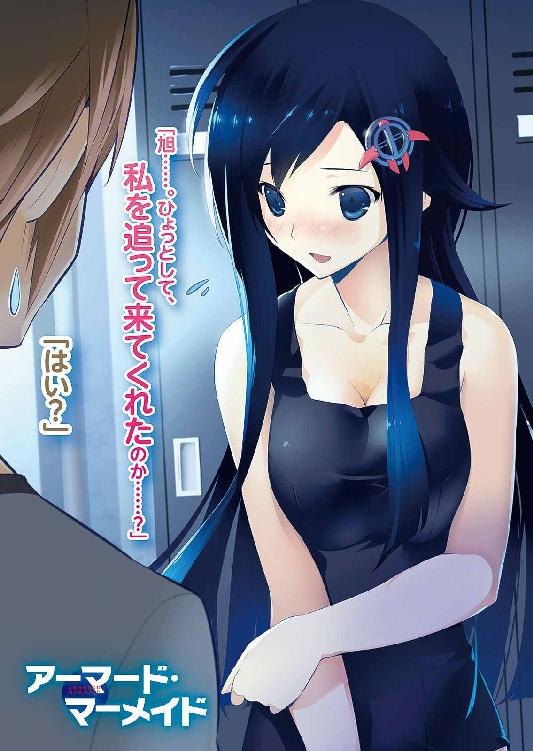
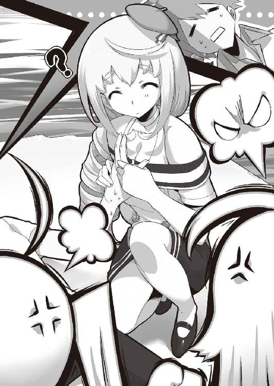

| アーマード・マーメイド (富士見ファンタジア文庫) | |
| 風見 周 | |
| (2012) | |


アーマード・マーメイド
風見 周

富士見ファンタジア文庫
本作品の全部または一部を無断で複製、転載、配信、送信したり、ホームページ上に転載することを禁止します。また、本作品の内容を無断で改変、改ざん等を行うことも禁止します。
本作品購入時にご承諾いただいた規約により、有償・無償にかかわらず本作品を第三者に譲渡することはできません。
本作品を示すサムネイルなどのイメージ画像は、再ダウンロード時に予告なく変更される場合があります。
本作品は縦書きでレイアウトされています。
また、ご覧になるリーディングシステムにより、表示の差が認められることがあります。
口絵・本文イラスト 雅
プロローグ
「かかってこい！ ぼくが倒してやる!!」
外洋に浮かんだスクールシップの舳先。猫のマークが描かれた旗を剣のように構えて、汐崎旭は海面を睨んだ。
少年が身に纏う小学校の制服も、背負うランドセルも、荒れ狂う波を被ってびしょ濡れだ。小さな身体がぶるぶると震えていた。
「こ、こわくなんかないぞ！ ぜったいにぼくがやっつけてやる」
スクールシップは居住区内を流れる水路を巡り、子どもたちを小学校へと送っていく小型船だ。
堡礁の内側、安全海域を航行していたはずなのに──突如として船はコントロールを失った。
謎の海流によって危険な外洋へと流されてしまったのだ。
一〇〇メートルほど先に巨大な渦潮ができている。
スクールシップは渦の中心に向かって引き寄せられていた。
「あぶないよ、あっちゃん！ 一緒に船底で隠れていようよ！」
旭の幼なじみ、緋桜夕海が制服の裾を引っ張る。ご自慢の黒髪も、海水を被ってべしょべしょだ。今にも泣き出しそうな顔をしてる。
「そんなところにいたら、あっちゃんも食べられちゃう！」
「隠れてたってムダだよ！ 船長さんも気絶しちゃったし......ぼくが戦わなきゃ！ このままじゃ夕海まで『陸喰い』に食べられちゃうだろ!? そんなの絶対にイヤだ！」
「あっちゃん......」
「夕海。おまえは隠れてろ。ぼくが夕海を守ってやるからな！」
「やだ！ わたしもあっちゃんと一緒にいる！」
「なに言ってんだよ!? 危ないぞ！」
「あっちゃんと離れるなんてイヤだよ!!」
「......わかった。それじゃ、ぼくの後ろに隠れてるんだ」
幼なじみは小さく頷いた。旭の制服の裾をぎゅっと握りしめる。
スクールシップはなおも流され続けていた。
渦の中心から五〇メートルほどの距離となったとき。
突如、海中からそれは現れた。
鋼鉄のイソギンチャク──。
その陸喰いを見て、旭はそう感じた。
ラッパ形の胴体。周囲に伸びる鈍色の触手。
見た目は大きな花のようでもあり、ぷよぷよと揺れているようすはユーモラスでさえあった。
しかし、近づくにつれて旭と夕海の顔は引きつっていく。
陸喰いは、巨大だった。
スクールシップの一〇倍の大きさ？ いや、それよりもっと大きいだろうか。
旭は『山』というものを見たことがない。見上げるほどに大きな土のかたまりなんて、もはや昔話の中にしか存在しないものだ。
見たことはないけれど、『山みたいに大きい』という形容は、これぐらいの大きさなんじゃないかと思った。
涙でぐしゃぐしゃになった顔で、夕海は懇願してきた。
「あっちゃん......逃げよう......。あんなのに勝てるわけないよぅ......！」
「海のうえには、逃げる場所なんてない......」
怖かった。
旭も泣き出しそうなぐらいに、怖い。
しかし、唇を噛みしめて無理矢理に微笑みを作った。
「夕海、ショートケーキ......好きか？」
「大好きだけど......？」
「帰ったら、一緒に食べような。ぼくが作ってやるよ」
「......うん」
「帰るためには戦うしかない......！ あいつをぶっ飛ばして、みんなを守るんだ!!」
──ギギギ。ギギギギギ。
スクールシップが音を立てて軋んだ。
激しい海流によって船体が流されていく。
陸喰いは円筒形の口盤で周囲の海水を飲み込み、渦潮を作り出していたのだ。
スクールシップは渦の中心へと吸い寄せられる。
陸喰いとの距離が、みるみる近づいていく。
三〇メートル。二〇メートル。
そして、一〇メートルを切ったとき。
陸喰いの巨体が動いた。
──びょるるるるる。
不気味な音と共に、空に向けて一本の触手を伸ばしたのだ。ぬめぬめと鈍色に光っている。
陸喰いは触手を振り回し、無造作に横薙ぎにした。
ムチのようにしなった触手が船体をかすめる。
──ざンっ！
刃物で切断されたかのように天井部分が切り取られた。
旭は身動きが取れなかった。旗竿を構えて、背中の夕海を守ってやることが精一杯。
再び、陸喰いは鈍色の触手を振り上げた。
あの触手の攻撃を受ければ船は真っ二つに引き裂かれてしまうだろう。
海に投げ出されたらおしまいだ。陸喰いの餌食になってしまう。
「夕海、絶対に顔を出すなよ!!」
陸喰いはゆっくりと触手を振り回し、旭の頭上へと振り下ろしてきた。
「うぅぅ......！」
舳先で足を踏ん張った。
旗竿の剣を上段に構える。
......もちろん、旭だって小さな旗竿一本で敵の攻撃を防げるなんて思ってない。
でも、逃げることだけはできなかった。
なにもせずにやられるなんて......そんなのは絶対にイヤだ！
せめて、夕海だけでも助けてやるんだ！
かかってこい、陸喰い!!
「うおおおおおおおおおおおお!!」
旭も旗竿を思い切り振り回した。
触手がムチのようにしなり、船体を両断する。
旭は海に投げ出された。
──少年の記憶は、そこで途切れている。
覚えているのは、深紅に染まった海面のようすだけだ。青い海に広がっていく鮮血。
次に目を覚ましたとき、旭は船の残骸の上に横たわっていた。
一陣の潮風が、海面を吹き抜ける。
「イイ根性してるな、少年」
旭の目の前に青銀色のシーブリードがいた。
青く輝く三叉の槍で、触手を受け止めている。
操縦するのは黒いビキニを身につけた銀髪の美女だ。右目には眼帯。しけたタバコをくわえている。
「そんな棒っきれ一本で陸喰いに立ち向かうなんざ、なかなかできることじゃないぜ」
美女は三叉の槍を一閃!!
たった一撃で、巨大な陸喰いの胴体が真っ二つになった。
「すげえ......」
その強さに。そして、その美しさに。
旭は目を奪われた。魂が震えるような気分だった。
シーブリードを操縦する美女は、三叉の槍を天に掲げてニヤリと笑った。
「だがな、少年。大切なものを守りたかったら、もっと強くなりな」
それが、マーメイドと少年との初めての邂逅であった──。
第一章 夢への乗船券
汐崎旭は、そこで目を覚ました。
「今のは......夢か......？」
小学校の頃に遭遇した出来事を夢のなかで思い返していたらしい。
眠い目をこすりこすり辺りを見回す。
......あれ？ どこだ、ここは？
少なくとも旭の部屋ではない。周囲は真っ暗だ。まだ夜ってことかな。ラッキー。もうちょっと寝れるじゃないか。
堅い床で寝た後みたいに身体中が軋んでる。
大きく伸びをしようとして天井に手をぶつけてしまった。
「痛ぇ！」
その痛みが寝ぼけていた旭に現実を思い出させてくれた。
って、そうだ。おれはロッカーの中に隠れてたんだ。
今の声を誰かに聞かれてしまったかもしれない。
通気口のスリットから外を窺ってみる。
幸いロッカールームには誰もいなかった。立ち並ぶロッカーにも青いベンチにも人影はない。
ゆったりとした揺れを感じる。船はまだ航行中みたいだ。
胸をなで下ろしつつ、旭は自分自身にちょっぴり呆れた。
（こんな状況だってのに、おれはロッカーで立ったまま寝ちゃってたのか......）
音が出ないように気をつけながら、平手で頬を叩く。
（もっとシャッキリしろよ！ 見つかったらヤバいんだぞ！）
旭は心の中で呟く。
（──なんせおれは、密航中なんだからな）
眠くなるのは無理もないとは思う。
この船に忍び込むために夜通し走り回った。
警備の目をかいくぐるため真夜中に港へと侵入し、積み荷のコンテナに紛れて貨物室へと潜り込んだ。迷路みたいに入り組んだダクトの中をはいずり回って、ジーンズもＴシャツもホコリ＆オイル塗れになりつつ──ようやくこのロッカーに辿り着いたんだ。
ちなみに、ロッカールームに隠れたのには理由がある。この部屋には監視カメラがついていなかった。見つかる確率も低いに違いない。
（ここなら無事に密航できそうだ。おれって冴えてるよな......）
思わず自画自賛しそうになるが首を横に振って気を引き締めた。
一瞬たりとも気を抜くわけにはいかない。
旭がやっているのは、ただの密航じゃない。
この船は《白鯨学園》に入学する新入生を乗せた連絡船なのだ。
白鯨学園──それは人類にとって特別な学校。
世界にたった七校しかない《マーメイド》の養成学校であり世界政府が運営する重要な軍事施設への侵入を、旭は試みているのである。
もしも見つかったら、通っている中学校を停学になってしまうかもしれない。
いや、停学で済めばまだマシだ。少年院送りどころか──世界中の極悪人が収容されてる監獄戦艦に放り込まれてしまう可能性だってある。
実際のところ、法律とかそーゆーのには詳しくないのでわからないけれど、どんな刑に処されたって、旭は驚かないだろう。いきなり銃殺ってのは勘弁して欲しいなあ......。
見つかったときのことを考えると不安がこみ上げてくる。
「これも夢を叶えるためだろ。ビビってんじゃねえぞ！」
小さな声で自らを鼓舞したのと、ほぼ同時。
がやがやと人の声が聞こえてきた。
一人や二人じゃない。もっと大勢の声だ。
ロッカーの扉に顔を押しつけて、通気口から外を窺ってみる。
「おいおい、ウソだろ......？」
私服姿の女の子たちがロッカールームへと入ってきていた。
「すごーい！ もう制服が支給されるんだ～」「学園艦についたら、すぐに入学式だって！」「白鯨学園の制服、憧れてたからうれしい～！」「わたしのロッカーどこかなー？」
楽しげに笑い合いながら、女の子たちは自分の名札がついたロッカーを探していた。
ロッカーの中には各自の制服がハンガーに掛けられている。
女の子たちは服を脱ぎ、制服に着替え始める。
ははーん、なるほど。
この部屋に監視カメラがなかった理由がわかったぜ。
ココって女子更衣室だったんだな。そりゃあカメラなんてついてないはずだ。ぜんぜん気付かなかったぜ。あはははは。
って、笑ってる場合じゃねええええええ!?
密航だけでも大罪なのに、そのうえノゾキの罪まで追加されちゃうじゃねえか。
旭は慌てて、自分が籠もっているロッカー内を見回した。
女子の制服は掛かっていない。旭が隠れているのは、空きロッカーだったようだ。
『ラッキー！』と言えるかどうかは微妙だな。制服が用意されてたら、きっとこんなとこには隠れていなかっただろうし。
（頼むぞ......。誰も扉を開けないでくれよ......）
女の子たちはブラウスのボタンをはずし、スカートを脱いで、さらには下着まで脱ぎ始める。
白鯨学園の制服は水着の上から着用するのだ。
って、いつまで見てるんだよ、おれは!?
旭は慌てて目をそらした。
おれだって男だ。同い年の女の子の着替えシーンに興味がないと言ったら......そりゃあウソになる。自宅のベッドの下には一八歳未満が持つべきでない肌色成分満載な雑誌だって隠してあるし。女の子のハダカを見たくないなんて言うヤツとは友だちになれる気がしない。
でも、ノゾキなんて卑劣なマネはしたくないからな。
着替えが終わるまでやり過ごす。それしかねえ！
息を殺して、旭は女の子たちの着替えが終わるのを待った。
と、すぐ近くから声が聞こえてきた。
「まったくもう、あたしのロッカーはどこなのよ？」
苛立ち混じりの可愛いらしい声音。
通気口から、そっと外を窺った旭は息を呑んだ。
ロッカーの前に、とんでもない美少女が立っていたのだ。
金髪のツインテール。吊り目がちな青い瞳。白い肌。
背は低め。小柄な旭と同じぐらいの身長である。
手足は華奢で、シャツの胸元はぺたんこだ。しかし、ホットパンツから伸びる脚はほっそりとしていて綺麗だった。
うわ。こんな可愛い女の子、見たことねえよ......。
危機的状況だってのに見惚れてしまう。
「ここかしら？」
少女は旭が隠れているロッカーのドアに手を掛ける。
やべえ！ 開けられたら見つかっちまう!?
ドアが開かないように押さえようと思ったが──外開きのドアをどうやって押さえりゃいいんだよ！ 手を掛ける部分すらないじゃねえか！
扉を開けられたら一巻の終わりだ......！
ツインテールの女の子が旭が隠れているロッカーの扉を開く──その直前。
近くにいたロングヘアの少女が、隣のロッカーを指さして教えてあげた。
「エリザベスさん。あなたのロッカーは、こちらのようですよ。ほら、名札がついています」
「あら、ホントね」
エリザベスと呼ばれた金髪少女は、旭の隠れているロッカーから手を離した。
隣のロッカーを開けて、着替えをはじめる。
（ふぅ。助かった。誰だか知らないけど、ありがとう......）
エリザベスはシャツのボタンを外しつつ、ロングヘアの少女に声を掛けた。
「ところで、あんた。どうしてあたしの名前を知ってんの？」
「うふふ、誰でも知っていますよ。エリザベスさんは、今年の入学者で数人しかいなかった主砲レベルＡの生徒ですもの。ポセイドンテストの成績も上位だったとか」
褒められたのが嬉しかったのかな。笑うのを堪えるみたいにツインテールの女の子がほっぺをひくひくさせた。
フンと鼻を鳴らして、エリザベスはツインテールを手で払う。
「あんなテスト、あたしには簡単すぎるぐらいだったけどね。......あんたの名前は？ いちお、聞いておいてあげるわ」
「コレット・ルクレールと申します」
「ふうん。共通言語にちょっとだけ訛りがあるわね？」
「《第一地区》の出身なんですよ」
「あたしはエリザベス・マクマホンよ。出身は《中央地区》。リズって呼んでいいわ。よろしくね」
着替えをしつつ、二人は握手を交わす。
（もう一人のコは、コレットって言うのか......）
ロッカーのスリットから更衣室を覗き込み、もう一人の少女に心の中でお礼を言おうとして旭は再び固まってしまった。
こっちの女の子もすげえ美人じゃないか。
ふんわりと長いプラチナブロンドの髪。くりっと大きな碧眼。天使みたいな丸みを帯びたほっぺ。
そして、なによりも目立つのが──大きな胸だろう。
細い肩を滑らせるようにして、コレットは白いワンピースを脱いだ。
ぷるるるるんっ♡──純白の下着に包まれた胸元が大きく波打つ。
エリザベスはピンク色の可愛らしいブラに包まれた自分のぺたんこな胸元と、コレットの大きな胸とを交互に見比べた。忌々しげに舌打ちをする。
「なによ。大きけりゃいいってもんじゃないんだから。いい気にならないでよね......」
コレットは満面の笑みを浮かべて、エリザベスの胸をぷにっと突っつく。
「ぺたんこな胸にもメリットはありますよ。ちっさい方が感度がいいそうですし」
「かかか、感度ってなによ!? というか、ぺたんこって言うな！ えっちな発言は禁止！」
まったくだ!!──ロッカーの中からエリザベスに全力で同意する。
変なコト言われたら、ドキドキしちゃうだろ！ 心臓の音でおれの居場所がばれちゃいそうだよ！
旭は通気口から目を逸らした。固くまぶたを閉じて息を潜める。
衣擦れの音を聞きながら心の中で叫んだ。
早く着替えを終わらせて出て行ってくれ～～っ！
しかし、現実は非情だった。
──ごうん。
連絡船が大きく揺れたのだ。
波に揺られたなんてレベルじゃない。転覆するんじゃないかと思うぐらいに船体が左右に揺れ動く。
「「「きゃあああっ！」」」
ロッカールームに女の子たちの甲高い悲鳴が響いた。
「みなさん、なにかにつかまってください。ショックに備えて」
コレットが冷静に指示を飛ばした。
旭も慌てて、ロッカー内を見渡す。
よし、これにつかまろう！
ハンガーを掛ける横棒を握ろうとしたけれど──もぎっ。
旭の体重を支えられる作りにはなっていなかった。力を掛けた瞬間に根本からもげてしまう。
うわああ。どうしよう!? どこにつかまりゃいいんだよ!?
──ごうううん。
二度目の揺れが襲ってきた。
旭の籠もっていたロッカーが巨人につかまれて思い切りシェイクされてるみたいに揺れまくる。
両手を突っ張って堪えようとしたのだけれど、ダメだった。
「どゔわああああああっ!?」
悲鳴をあげながらロッカーの扉から飛び出してしまう。
なにがどうなったのかわからない。もんどり打って柔らかいものの上に着地してしまった。
旭の唇にとてつもなくソフトな物体が押し当てられている。
クラクラしていた視界が次第にクリアになっていって──......。
目の前にエリザベスがいた。
いや、眼前なんてレベルじゃない。
旭の唇とエリザベスの唇が完全に触れあっていた。
ロッカーから飛び出した旭はエリザベスを巻き込んで倒れ込み、あろうことかキスを──いや、違う違う違う。これはキスじゃない。唇同士をぶつけちゃったんだ。
エリザベスは時間が止まったかのように硬直していた。プルプルと肩を震わせている。
コレットが弾むような声で言った。
「わお。情熱的なキスシーンですね」
「き、キスじゃねえよ！ これは事故だって！」
慌てて顔を離し、床に手をついて立ち上がろうとして──ふにんっ。
右手に柔らかな感触があった。
手のひらの下にあったのは、星条旗柄のビキニ。
ああ、よかった。水着には着替え終わってたんだな。下着姿じゃなくてよかったぜ。
だから、ちっともよくねえってええええっ!!
勢い余ってエリザベスの胸に触っちゃったよ!?
「ふにゃあっ!? ななな、なにすんのよ！」
金髪ツインテールの女の子は奇妙な悲鳴をあげて、ほっぺを赤く染めた。
「どわああ、ごめん！ わざとじゃないんだよ!?」
「どうでもいいから、さっさとどきなさ～～いっ!!」
エリザベスに蹴飛ばされ、旭は更衣室の床を転がってロッカーに頭をぶつける。
「ロッカーの中にいたってことは、あたしたちの着替えを覗いてたのね!? この変態ノゾキ男！」
素早く立ち上がったエリザベスは旭を思い切り睨んでくる。
周りで着替えをしていた女の子たちも、モップやらハンガーやら、武器になりそうなものを手に旭を取り囲んだ。誰もがジト目をしてる。視線が痛い。
「か、勘違いするな！ ノゾいてたんじゃねえよ！」
「だったら、どうしてロッカーになんて入ってるのよ!?」
「それはその......船の中で迷子になってるうちに迷い込んじゃってさ。いやあ、参った参った」
「そんなわけあるかぁ!!」
エリザベスは手の甲で何度も唇を拭った。青い瞳が涙で潤んでいる。
「し、しかも、あたしのファーストキスを......なんてことしてくれんのよ!?」
「おれにとっても初めてだよ！ 野良犬に噛まれたってことにして我慢しておくから、お互いそれでチャラに......」
「なるかバカぁ！ というか、それはあたしのセリフよ！」
エリザベスは自分の両肩を抱いて、わなわなと震える。
「さらに、あたしの胸まで触るなんて......絶対に許せない！」
白いビキニに身を包んだコレットがほわほわした口調で尋ねてくる。
「あなたのお名前は、なんですか？ 学生証をつけてらっしゃらないようですが......」
旭は立ち上がり、大きく胸を張った。
問われたならば名乗らねばなるまい。
「よくぞ聞いてくれたな──！」
水着姿の少女たちを睥睨し、力強く言い放つ。
「おれは汐崎旭。世界一のマーメイドになる男だ！」
できる限り、格好良く言ったつもりだったのだけれど。
「ぶふっ!?」
エリザベスは堪えきれないように噴き出した。他の女の子たちもクスクスと笑っている。
「あのねえ、あんたバカじゃないの？ 男が世界一のマーメイドになんて、なれるわけがないじゃない」
「なんでだよ!?」
「女の子の方がマーメイドになる適性が高いってのは、世界の常識でしょ？ あんた、そんなことも知らないの？」
白鯨学園の男女比も１：９ぐらいだそうだ。男の方が断然少ない。
つい一〇年ほど前までは、男はマーメイドになれないとすら考えられていた。
《マーメイド》って呼称からも明らかだよな。語源となっているマーメイド──人魚ってのは上半身が人間の女性、下半身が魚の怪物を指している。
元々は女性だけがなる職業だったんだ。
「おれは──汐崎旭は常識なんかにはとらわれない。世界最強のマーメイドになるって、おれは決めてるんだよ！」
「汐崎、旭だと......？」
そのとき、旭を取り囲んでいた女の子たちの後ろから、スクール水着を身につけた一人の少女が現れた。
艶やかな長い黒髪。切れ長の瞳。すんなりと伸びたしなやかな手足。
クールな印象の美少女だ。だが、彼女を見た瞬間に旭はホッとした。
彼女の名前は緋桜夕海。旭の幼なじみなのだ。
「おお、夕海か。おまえに会えてよかった。おれがノゾキ魔なんかじゃないって言ってやってくれよ」
エリザベスが腕組みをして夕海を睨み付ける。共犯者を見るような厳しい目付きだ。
「ちょっとあんた。コイツの知り合いなの？」
「そうだ。旭は私の幼なじみだ。彼はノゾキをするような卑劣な男ではない」
ありがとう、夕海。持つべきものは幼なじみだなあ。
ジンと胸が熱くなる。
夕海も感動しているみたいだ。普段はクールで無表情なヤツなのに感動したかのように瞳が涙で潤んだ。
「旭......。ひょっとして、私を追って来てくれたのか......？」
「はい？」
ちょっぴり頬を染めて、照れくさそうにちらちらとこちらを窺ってくる。
「ちゃんとお別れしたじゃないか。それなのに私に会うために、わざわざ連絡船に乗り込むなんて......旭は寂しがり屋なのだな」
ぶっきらぼうな言葉とは裏腹に、夕海はとても嬉しそうだった。
「へ？ いや、おまえに会いにきたわけじゃないけど？」
「なにっ？ ち、違うのか......？ だったら、どうしてこの船に乗っている？」
夕海まで旭を睨み付けてくる。
エリザベスの睨みが熱線だとしたら、夕海の視線は冷波だ。背筋が凍り付きそうなくらいに冷たい眼差し。
「二人であんなに勉強したのに......旭はポセイドンテストで不合格だったではないか！」
ポセイドンテストはマーメイドになるための適性試験だ。一三歳になったら世界中の誰もが受けさせられる。
夕海と一緒に必死に勉強したのだが──旭は筆記試験で不合格になってしまったのだ。
「ああ。おれは、確かに不合格の通知をもらったよ......」
白鯨学園は世界政府が運営している。その世界政府が送りつけてきた青い便せん。そこに書かれた『不合格』の文字を見た瞬間、旭は絶望的な気分に陥った。
が、すぐに悟ったのだ。
「不合格にはなったけどさ。おれにはマーメイドになる才能が絶対に備わってるはずなんだよ！ テストなんかじゃ、おれの実力ははかれない。おれの本当の力を見てもらうために、白鯨学園に直接乗り込むことにしたんだ！」
エリザベスはぽかんと口を開いて。
「ってことは、あんた......密航してるってこと？」
「おれの伝記が書かれるとしたら、オチャメなエピソードとして、この密航は綴られるだろうな」
「みんなー！ このバカを捕まえてー！」
武器代わりの道具を手にした女の子たちが包囲の輪を狭めてくる。
「って、なんでだよ!? おれの話、聞いてたか？」
「聞いてたわよ。ノゾキ魔で、チカンで、不合格で、そのうえ密航者だなんて──あんた最低じゃない！ 警備員に突き出してやる！」
「警備員に突き出すなんて生ぬるい。旭をロープで縛り上げて海に突き落とそう」
「おい！ 夕海まで、ひどいこと言うなよ！ おれたち幼なじみだろ!?」
クールな表情のまま、夕海はブツクサと文句を言う。
「私を追って来てくれたのかとぬか喜びさせただけでなく......。き、キスまで見せつけるなんて、絶対に許せない......！」
「あんなのはキスじゃねえよ！ 野良犬に噛まれただけだ！」
「だから、それはあたしのセリフだっ！」
エリザベスがチョップを振り上げたとき──ごううんんっ。
さらに、船が大きく横に揺れた。ロッカールームに悲鳴が響く。
エリザベスはチョップを空振りし、たたらを踏んだ。
「んもうっ、なんなんのよ！ さっきから、この揺れは!?」
「連絡船の航路は波が穏やかな海域のはずだ。こんなに揺れるのはおかしいぞ」と夕海。
コレットは心配そうに両手を胸の前で組み合わせて。
「ひょ、ひょっとして、陸喰いが近くにいるのでしょうか？」
「その可能性も十分にあり得るわ......」
腕組みをしたエリザベスはロッカールームの壁を睨んだ。
隔壁の向こう側には大海原が広がっている。更衣室だからか、この部屋には窓はない。正確にはわからないが海面から二～三メートルぐらいの位置だろう。
更衣室にいる女の子たち全員に向けて旭は命じた。
「みんな！ いつでも脱出できるように早く制服に着替えるんだ！」
白鯨学園の制服にはライフジャケットの機能もついていると聞いたことがある。見た目は普通の布地だけれど水に浮かびやすいんだ。
すかさず、エリザベスにチョップを入れられた。後頭部に思い切り。
「偉そうに仕切ってんじゃないわよ！ あんたがいるから着替えが遅れたんでしょ!? もう一回ロッカーに入ってなさい！ 後で警備員に突き出してやるから！」
エリザベスによってロッカーの中に蹴り込まれてしまった。勢いよく扉を閉められる。
「ちょっと！ 誰かモップ持ってきて！ つっかい棒しておきましょ！」
「なにすんだよ!? 別におまえのぺたんこの胸なんて見たくないって！」
「ぺ、ぺたんこって言うなー！ 信用できるわけないでしょ、あんたみたいな犯罪者のこと！」
扉を開けようと押してみるがビクともしなかった。
あいつら、マジで閉じこめやがった!?
なにを貼り付けたのかわからないが通気口も目張りされてしまう。
真っ暗闇の中で旭は深いため息を吐いた。
ちくしょう。白鯨学園に辿り着く前に見つかっちまうなんて最悪の展開だよ......。
真っ暗なロッカーの中で拳を握りしめた。
ここでおれの夢は終わっちまうのか......？
おれの夢は、もう叶わないのかよ......。
「くそっ......!!」
握り込めた拳をロッカーに叩きつけたのと、ほぼ同時。
──どごんっ!!
爆発的な破壊音が轟いた。
「えっ!? おれ、そんなに強く殴ってねえぞ!?」
さらに同時に警報ベルと女の子の悲鳴がロッカールームに木霊する。
激しい揺れ。金属を引き千切る甲高い音。女の子たちの絶叫。
真っ暗闇だからなにが起こってるのか旭にはわからない。
だが、間違いなくロッカーの向こう側では恐ろしい出来事が起こっている！
ロッカーのドアを力任せに殴った。
「誰か！ ここを開けてくれ！ なにが起こってるんだ!?」
「出てきちゃダメよ......！」
リズの声が返ってくる。ツンケンしていた声が恐怖に震えていた。
「陸喰いが襲ってきたわ！ あんたは、そこに隠れてて！」
陸喰い、だって？
全身の毛が逆立つような気分がした。
「隠れてられるかよ！」
何度もロッカーの扉に体当たりをした。
つっかい棒になっていたモップをへし折り、ロッカールームへと飛び出す。
「ウソだろ......？」
目の前に広がっていた光景に目を疑った。
更衣室の壁がえぐり取られたように消え去っていたのだ。
まるで巨大な棍棒でぶん殴られたかのように船体がひしゃげ、床にも穴が開いている。
穴の向こう側には大海原。辺りの海面に女の子の服や船の残骸が浮かんでいた。
部屋の隅に逃げ遅れた女の子たちが固まって震えている。
そこにエリザベスもいた。
足から血を流していて、コレットに支えられてようやく立っている状態だ。
「誰かもう......食われちまったのか？」
「まだ誰も食べられてないわ。尾びれを叩きつけて、船を壊していっただけ。でも......」
リズは唇を噛みしめて首を横に振った。
「夕海ってコがあたしを庇って、海に......」
弾かれたように旭は船体に開いた風穴に飛びついた。海面を覗き込む。
三メートル下の海面に黒髪の少女が仰向けに漂っていた。制服が持つ浮力によって浮かんではいる。だが、ぐったりとしていて意識はないようだ。
と、コレットが海面を指さして叫んだ。
「陸喰いがまた襲ってきます!!」
波間に鈍色に輝く巨体が見えた。
体長は七メートルぐらい。魚形の陸喰いだ。深海魚のホウライエソに似てる。巨大な顎に長い牙がまばらに並んでいる。不気味なフォルムだ。
波間に浮かんでいる船の残骸を一つ残らず口に入れながら、ゆっくりとこちらに近づいてきた。
陸喰いは、なんでも食う。
大地も。鋼鉄も。
そして、人も。
反射的に旭の身体が動いていた。
船体に開いた穴から海へと飛び込んだのだ。
「ちょっとあんた！ 危ないわよ！ 戻りなさい！」
エリザベスの悲鳴が聞こえてくる。
心の中で「心配すんな！」と返事をした。
（おれは泳ぎが得意なんだよ！ ちっちゃい頃から夕海と一緒に訓練をしてきたんだ！）
マーメイドになるためにできることは、幼い頃からなんでもやってきた。泳ぎの練習もその一つである。
船のそばってのは波が荒れやすいものだ。なおかつ付近を巨大な陸喰いが泳ぎ回っている。
海面には複雑な波が起こっていた。
だが、旭は懸命に泳いで、夕海の元へと泳ぎ着くことができた。
立ち泳ぎをしながら、ぐったりとした少女の腰に手を回し身体を支える。
「おい、夕海！ しっかりしろ！」
「う......くっ......。旭......？」
「よし、気がついたみたいだな。泳げるか？」
陸喰いはなおも迫ってくる。
海面に浮いてるものは、何でもかんでも囓っていた。デカイが知能は低そうだ。
「大丈夫だ。ケガはない」
「上等！」
船までの距離、一五メートル。
「船まで死ぬ気で泳ぐぞ！ 陸喰いに追いつかれたらアウトだ！」
連絡船に向かって二人で泳ぎ出す。
「早くー！」「急いでー！」
更衣室に開いた大穴から女の子たちが声援を送ってくる。
さっきまでツンケンしていたエリザベスも眉をひそめてこちらを見つめていた。いちお、心配してくれてんのかな。
（見くびるんじゃねえよ。おれはこんなところで死ぬ男じゃないからな！）
船の甲板には、乗組員が集まってきていた。水兵帽に白鯨学園のワッペンがついている。学校に雇われた船員だ。
連絡船の縁から海面へ向かってロープのついた浮き輪をいくつも投げ入れて。
「そこの二人！ 早く浮き輪をつかめ！ 陸喰いが迫っているぞ！」
連絡船に装備された銃座から、陸喰いに向かって銃弾をたたき込む船員もいる。
陸喰いの鈍色のボディに弾丸が当たり、火花が散った。
あいつらには通常兵器なんて効かない。せいぜいが足止め程度だ。
弾丸を受けても悠然と陸喰いは泳ぎ続け、辺りに漂っているものを噛み砕いていく。
海面には船の残骸が漂っていて泳ぎにくかった。
だが、夕海は器用に波間をかき分けてゆく。
彼女とは、一緒にマーメイドになるための特訓を積んできた。夕海の身体能力は高い。
旭も負けてはいない。勉強の成績はよくないが、体育だけは得意だった。
二人の泳力は一四歳の平均を上回っていただろう。
──だが、所詮それは人間のレベル。
陸喰いは周囲に浮いているもの全てを食い散らかしつつ、旭たちに迫ってきた。
連絡船まで数メートル。海面に浮かぶ浮き輪に手が届こうかという頃には、陸喰いはすぐ後ろまで接近していた。
旭の身長の五倍はあろうかという巨大な鋼鉄の魚。直径一メートルを超える口には、日本刀のような長い牙が並んでいる。
あの口で囓られたら、ひとたまりもない。
「夕海、先に行け！ このままじゃ、二人ともやられる！ おれが時間を稼ぐ！」
「ど、どうやって!?」
「知らねえよ！ でも、おれがなんとかする！ おまえが引き上げてもらえるだけの時間は作ってやる！」
甲板の上から、船員が口々に叫んだ。
「早く浮き輪をつかめ！」「食われるぞ！」「戦おうとするな！」
立ち泳ぎしながら、夕海は怒鳴り返してきた。
「旭を置いていけるか！」
「うるせえ！ 言い争いしてる場合じゃないんだよ！ おれもすぐに行くから！ 先に浮き輪につかまれ！」
「くっ......わかった......！」
やっぱ、夕海は賢い。
不必要な口論はすっぱりやめて浮き輪に向かって泳いでいく。
立ち泳ぎをして、旭は陸喰いと対峙した。
海面に浮いている船の残骸を一つずつ囓りながら、こちらへ向かってくる。
尾びれで対象をぶっ壊し、細かく破壊してから食い尽くす──こいつはそういうタイプの陸喰いらしい。
辺りを見渡す。
一〇秒でいい。コイツを足止めできる方法はないか？
海面に散らばる船の残骸。旭は一メートルほど離れた波間に漂っている、それを見つけた。
荒れる波をかき分けて夢中で飛びつく。
陸喰いは巨大な顎を広げ、旭に食いつこうと飛びかかってきた。
デカイ口で獲物を丸かじりにしようとする。
旭は一瞬だけ、海へと潜った。
水中で一回転。浮力と脚力を使って、思い切りそれを蹴り飛ばした。
「おら、これも食えよ！ うまいぞっ!!」
アルミ製の赤い箱。
扉に書かれた文字は──消火器。
船内に備え付けられていたものが船が壊されたせいで海に落ちたんだ。
この陸喰いはバカだ。
口に入ったもんはなんでも食う。
たとえそれが、炭酸ガスがみっちり詰まった消火器だろうとな!!
口の中に蹴り込まれた消火器を陸喰いは迷わず噛み砕いた。
──ボンッ！
消化剤をまき散らして、陸喰いの口の中で消火器が破裂した。
白い煙が海面を覆うように広がる。
「やったか......？」
もやの向こう側に目をこらした。
浮き輪につかまって連絡船へと引き上げられている夕海が鋭い声を飛ばしてきた。
「まだだ！ 海へ潜っただけだ！」
白い煙の奥、海中に鈍色に光る陸喰いの巨体が見えた。
なんのダメージを受けたようすもない。
口の中で突然なにかが破裂したから、驚いて一旦海へ潜ったようだ。
凄まじい速度で浮上し、旭から五メートルほど離れた距離で陸喰いは飛び跳ねた。
うおっ、ぴんぴんしてやがる!? っていうか、激怒してるじゃねえか！
連絡船の方を振り返る。夕海は甲板へと引き上げられていた。
よかった......。最低限の時間稼ぎだけはできたみたいだな......。
「早く逃げなさい！ 陸喰いが来るわよ！」
船に開いた穴からエリザベスが叫ぶ。
海面へと浮上した陸喰いは、大きな口を開けて迫ってきていた。
辺りに漂う船の残骸には目もくれない。
明確に旭に向かって突っ込んでくる。
旭は必死に波をかき、浮き輪まで泳いだ。
しかし人間の泳力が陸喰いに敵うはずがない。
瞬く間に距離を詰められる。
巨大な顎が、迫る。
くそっ、こんなところで死んでたまるかよ！
おれは世界最強のマーメイドになるって決めたんだ。
そのために密航までしたんだぞ！
ここで終わるような男じゃねえええええ!!
「うおおおおおおおおっ!!」
腕を振り回し、水を蹴りまくり、もがくように必死に泳ぐ。
だが、陸喰いは旭に追いついた。
鋭い牙の並ぶ口で、旭の足に噛みつこうとする──。
「あっちゃんッ!!」
幼なじみの悲痛な叫びが木霊した。
その場にいる誰もが少年は無惨に食い殺されると思っただろう。
しかし、陸喰いの大顎が旭を引きちぎる──まさにその刹那。
目映い閃光が海面を焼いた。
銃弾すら跳ね返した陸喰いの巨体を青い光の槍が貫く。
──ＧＹＡＯＯＯＯＯＯＯＯＯＯＯＯ!!
断末魔の咆哮をあげて、陸喰いが海に沈んでいく。
たった一撃で、巨大な怪物を屠ったのだ。
「......ったく、ウチの可愛い新入生に襲いかかってんじゃねえぞ、この雑魚が！」
吐き捨てるような言葉。
その声を聞いた瞬間に、旭の心が震えた。
海面を滑るようにシーブリードの一団が疾駆してくる。
シーブリード──陸喰いを屠るためにつくられた海戦用兵器。
その先頭に立っているのは、美しい青銀色の機体だ。
操縦しているのは、黒い競泳水着の美女。
右目には眼帯。右足には西洋の甲冑みたいな義足をつけている。くわえタバコの代わりのように、口にはロリポップキャンディを突っ込んでいた。
「やれやれ。低レベルとはいえ、安全海域にまで陸喰いが出るなんて......世も末だぜ」
長い銀髪を潮風に靡かせつつ、美女はマニピュレーターアームを天に掲げた。
陸喰いに突き刺さっていた青い光槍が、その手へと戻る。
あの主砲は《閃光神槍》。
幾多の陸喰いを屠った伝説の兵装。その使い手は、この世にただ一人しかいない。
波間に漂ったまま、旭は呟いた。
「あなたはレキ大佐......！」
「ああん？ なんだ、小僧。あたしを知ってんのか？」
更衣室に空いた風穴から覗き込んでいる女の子たちも。甲板にいる乗組員たちも。
誰もが尊敬の眼差しで青銀色のシーブリードを見つめている。
彼女こそが、数々の伝説を残す史上最強のマーメイド──レキ・サザンハート大佐。
幼い頃に彼女によって命を救われ、旭はマーメイドを目指すようになったのだ。
命の恩人であり、憧れの人でもある。
（おれはまた、大佐に助けられたのか......）
ロリポップの白い棒をぴこぴこと動かしてレキ大佐は吐き捨てるように言った。
「あたしはもう大佐じゃねえ。軍人はやめた。いまはしがない教員さ。レキ先生と呼べ」
後ろを振り返り、レキ先生は背後に控えていたピンク色のシーブリードに声を掛ける。
「おい、デカ乳。新入生に被害がないか確認して来い」
「で、デカ乳とはなんですか！ 生徒たちの前でヘンな風に呼ばないでください！」
眼鏡を掛けた若い先生（白いチューブトップの水着）が気弱っぽい口調で抗議する。
「私の名前はミーネです。いい加減に覚えてくださいよ」
「悪かったな、メガネ。新入生全員を甲板に集めろ」
「んもうっ！ 外見的特徴でしか人を呼べないんですか？」
ミーネ（先生なのかな？）は、ピンク色のシーブリードを操作し、更衣室の方へと向かっていく。
「小僧。おまえも来い」
「うわっ!?」
レキ先生は《閃光神槍》を旭に突きつけた。
突き刺される!?──かと思ったら、槍の先端に旭のＴシャツが引っかけられ、身体を持ち上げられる。
「うおおおお？」
バーニアを噴射し、先生は海面からシーブリードを浮かせた。
甲板まで浮上し、旭を無造作に放り投げる。
「うべらっ!?」
甲板に叩きつけられ息が詰まった。
悶える旭を一顧だにせず、レキ先生はシーブリードのまま甲板へと降下する。
空中で兵装を解除。浅瀬に飛び込んだかのように海水が飛び散り、身に纏っていたシーブリードが消え去る。
レキ先生は甲板へと華麗に降り立った。右足の義足ががしゃりと音を立てる。
船員によって保護された夕海が甲板にへたり込んでいた。
「夕海、ケガはなかったか!?」
慌てて駆け寄る。肩に掛けられた毛布をかき合わせながら夕海は弱々しく頷いた。
「おい、本当に大丈夫なのか？ すげえ辛そうな顔してるぞ？ どっか痛めたんじゃないのか？」
そっぽを向いて、ごにょごにょと呟く夕海。
「......今にも旭が食べられてしまいそうなシーンを見たんだぞ？ 平然としていられるわけないだろう。愚か者め」
「ん？ なんだって？」
「な、なんでもない。独り言だ。きみみたいに無茶をする男は大嫌いだ」
「心配させて悪かったよ。ごめんな」
「心配などしていない。幼なじみが陸喰いに喰われては寝覚めが悪いと思っただけだ。その中身の入っていない頭を囓られてしまえばよかったのに」
「よし。そんだけ悪口が言えりゃ上等だ」
と、ミーネ先生が甲板へと上がってくる。
「レキ先生。軽傷者はいるようですが、新入生に被害はなかった模様です」
先生に連れられて、更衣室にいた女の子たちや男子生徒も甲板へ集まる。エリザベスがこちらに向かって駆け寄ってきた。
「あんた、頭がおかしいんじゃないの？ 陸喰いがいる海に飛び込んでいくなんて！ 信じられない！」
レキ先生もエリザベスの言葉に頷いた。しゃぶっていたロリポップを口から引き抜き、槍みたいに旭に突きつけて。
「無線で聞いたぜ。素手で陸喰いに向かっていったんだって？ イイ根性してるじゃねえか。そういう馬鹿は嫌いじゃないぜ。今年の新入生は面白そうだな」
褒められた......。レキ大佐に褒められちゃったよ、おれ！
旭は天にも昇る気持ちだった。
しかし、エリザベスがジト目をして、旭を指さす。
「コイツ、新入生じゃありませんけど～」
「って、おい！ なんでいまバラすんだよ！」
「夕海はあたしを庇って海に落ちたわ。その彼女を助けてくれたことは......素直に褒めてあげる。着替えをノゾいたことはチャラにしてあげてもいいわよ。でも、あたしの唇を奪ったことは、絶対に許さないから！」
ミーネ先生がメガネを人差し指で直しつつ。
「おかしいですねえ。この船は新入生のみなさんしか乗っていないはずですよ？」
「コイツ、ポセイドンテストに不合格だったのに密航したらしいんで～す」
エリザベスがさらに密告りやがった。
「密航!?」
船員や先生たちがざわめく。
「聞いてください!!」
旭は自分の胸を叩いて、レキ先生にお願いする。
「確かに、おれは不合格でした。でも、マーメイドになりたいんです！ 絶対に活躍できると思います！ 根性だけは誰にも負けません！ 白鯨学園に入れてください！」
凪いだ海みたいに、全員が静まりかえった。
──うむ！ きみのように見所のあるヤツはなかなかいない！ 特例として入学を認めてやろう！
そんな言葉が返ってくるに違いない。
旭はワクワクしながら次の言葉を待ったのだが。
レキ先生は肩を竦めて、乗組員のみなさんに声を掛けた。
「誰か、この少年を逮捕してくれ」
「なんでですか!? イイ根性してるって褒めてくれたじゃないですか！」
「バカかおまえは。だからって、不合格になったヤツを学園に入れるわけにはいかねえよ。密航は重大な犯罪だぞ」
「おれにもチャンスをくださいよ！」
「なにを言ってんだ？」
レキ先生はロリポップを噛み砕いた。
「ポセイドンテストは、この世界に住む少年少女に与えられた平等なチャンスだ。おまえはそれをモノにできなかったんだよ。悪いことは言わねえ。諦めて普通の人生を送れ」
とりつく島もない冷たい言葉だった。
乗組員によって、旭は取り押さえられてしまう。
航行不能となった連絡船の代わりに救助艇がやってきて、夕海やエリザベス──ポセイドンテストに合格した新入生たちは白鯨学園のある学園艦に乗り込んでいった。
旭は別の船に乗せられ、《第三地区》へと移送された。学園艦の甲板を踏むことすらできなかった。
幼い頃から抱き続けていた、旭の夢。
マーメイドになりたいという願いは、海の泡のように潰えてしまったのである──。
──しかし。
×××
四月二〇日。『汐崎旭密航事件』の起こった日──すなわち、入学式の行われた日から一〇日後のこと。
白鯨学園。一年Ｅ組。朝のＳＨＲ。
教壇に立った副担任のミーネ先生は、戸惑いの表情を浮かべていた。メガネの下の瞳が明らかに動揺している。
「えーっと、け、今朝はみなさんに重大発表があります。おおおお、おおおおお、落ち着いて聞いてくださいね」
窓際の一番前の席に座っているコレットが心配そうに声を掛ける。
「先生こそ落ち着いてくださいまし」
「そ、そうね。私が冷静にならなきゃダメよね。大丈夫、落ち着いて。きっと大きな問題は起こらないはずよ」
大きな胸を上下させてミーネ先生は深呼吸。
副担任とはいえクラスを受け持つ教師の動揺っぷりに、クラスメイトに緊張が走る。
教卓のすぐ前に座っているエリザベスが訝しげに眉をひそめて。
「そんなに怯えて......。なんなのよ、いったい......？」
コホンと咳払いをして、先生は口を開いた。
「今日からみなさんと一緒に勉強することになる、新しいクラスメイトを紹介します」
「「「ええええ～～～っっ!?」」」
教室中がざわめきに包まれた。
驚くのも無理はないと言いたげな表情で、ミーネ先生は幾度も頷いた。
「白鯨学園の一〇〇年近い歴史においても、中途入学者を受け入れるのははじめての出来事だそうです。新しいお友だちを温かく迎えてあげてくださいね。──では、新入生の方、入ってらっしゃい」
クラスメイト全員の注目が集まる中、勢いよく教室のドアが開く。
「失礼します!!」
入ってきた生徒を見て、教室の九割をしめる女子生徒が悲鳴にも似た声をあげた。
「あ、あんたは──!!」「おまえは──!!」
エリザベスと夕海が同時に椅子を蹴って立ち上がる。
「「汐崎旭......!?」」
「よお、夕海。それと、エリザベスだったかな？ 久しぶりだな。元気だったか？」
「元気だったか、じゃないわよ！ どうして密航ノゾキ男がココにいるわけ!?」
「旭は不合格だったはずじゃ......」
「ところが、補欠合格が認められたんだよ。やっぱり、おれはツイてるぜ！」
旭はペンを握りしめ、ホワイトボードに自分の名前を大書した。
汐崎旭（世界一のマーメイドになる男!!）
カッコ内の注意書きも、旭自身が記した言葉である。
呆気に取られるクラスメイトを睥睨し、ホワイトボードを力強く手で叩いた。
「おれの名前は汐崎旭だ！ 読んでくれればわかる通り、おれは世界一のマーメイドになる男だ！ これからよろしく頼むぜ！」
満面の笑みを浮かべる旭を見やって、ミーネ先生は「ほへ～～っ」と脱力したようにため息を吐いた。
「指導教官になった初年度だっていうのに、明らかに問題児っぽいコが入ってくるなんて......。ただでさえ、今年は大きな事件が起こったっていうのに......。これから不安だわ。はあ......」
そんなこんなで。
一般の生徒から一〇日ほど遅れて、汐崎旭の白鯨学園の生徒としての生活が幕を開けたのである。
第二章 入学初日の試験着装
ＳＨＲの後の一限目。本来なら気象学の授業を行う予定だったが変更された。
旭の《試験着装》が実施されることとなったのである。
試験着装とは、マーメイド候補生が実際にシーブリードを装着し、その機体を世界政府に登録する作業を言う。
「ついに、おれもシーブリードに乗れる日が来たんだな......。ここから、おれの伝説がスタートするんだ......」
解析水槽に旭のしみじみとした呟きが響く。
鋼鉄製の箱のような広い部屋。その中央には二〇メートル四方ほどのサイズのプール。
微かに潮の匂いがする。水槽に満たされているのは海水だ。
プールを取り囲むように、いくつものモニターや観測機器が設置されていた。それぞれの機器がどんな役割を持っているのか旭には見当もつかないが、プールに向かって伸びるマニピュレーターアームを見ているだけで心が躍ってしまう。
「汐崎くーん、聞こえますか～？」
ミーネ先生の声が頭上から降ってきた。
分厚いガラスの向こう側。三階にあるコントロールルームのような場所でヘッドセットをつけたミーネ先生が手を振っていた。
「これから汐崎くんには実際にシーブリードを装着してもらいます。最初は緊張すると思いますが、クラスメイトも見守ってますからね。落ち着いて先生の言葉を聞いてください。絶対に暴れたりしちゃダメですよ！ 先生、泣いちゃいますよ！」
二階はガラス張りの部屋になっていて、興味深げにクラスメイトがこちらのようすを窺っていた。
エリザベスは世界政府の大統領にでもなったかのような尊大な雰囲気を漂わせ、腕組みをしている。
その隣に夕海もいた。幼なじみはいつも通りの無表情。だが、わずかに眉がひそめられてる。長年一緒にいるから旭にはわかった。あれは心配している顔だ。
「では、まずは《羅針儀》をつけてもらいます」
ミーネ先生の声に呼応してプールサイドの床から銀色の箱が飛び出してきた。金色の校章のついた腕輪がガラスケースの中に入っている。
「汐崎くんとのマインドシンクが終わっています。その羅針儀は汐崎くんしか使えないものです。羅針儀がないとシーブリードを装着できないばかりか、学園生活も送れません。無くしたり壊したりしないでくださいね。......では、羅針儀を手首につけてください」
微かな音を立ててガラスケースが開く。
羅針儀を手首に巻こうとしたが手が震えてうまく付けられなかった。意識してはいないが、相当緊張してるみたいだ。
......当然だよな。一〇年以上も夢見ていた瞬間が、ようやく訪れたんだから。
「装着できました！」
ヴン──と微かな起動音が響き、金色の校章が青白い光に包まれる。
「起動完了ですっ。それでは、いよいよシーブリードを装着してみましょう。プールの中央に足から飛び込んでください。ケガをしないように落ち着いてジャンプしてくださいね」
気持ちを落ち着けるように大きく深呼吸をして。
プールサイドをダッシュし海水へと勢いよく飛び込む。
水中へと身体が沈む──ことはなかった。
つま先が海水に触れた瞬間、水中からなにかが集まってきて旭の周囲を覆い尽くしていく。
時間にして一秒も掛からなかっただろう。
半瞬後には、シーブリードの装着が完了していた。
──旭も、シーブリードの原理について最低限の理解はある。
全てのはじまりは三〇〇年ほど前。
Ｄｒ．スウィフトという名の科学者が自己増殖型ナノマシンの入った水を一滴、海に流した。
後にＳＯＬＴ──scrap of Lilliputian tomb──と名付けられるナノマシンは海水中で増殖を続け、やがては大洋全体に広がっていった。
ＳＯＬＴは人体に取り込まれても悪影響は及ぼさない。しかし、凶暴なバケモノを生み出してしまった。ナノマシンを取り込んだ海洋生物が巨大化し、突如として《陸喰い》となって暴れ出したのである。
陸喰いは大地を食らい尽くした。一〇〇年後には、地球上の陸地の七〇％ほどが失われてしまったそうだ。
これが、いわゆる《大食害》である。
歴史の教科書にも載っている。幼稚園に通う子どもでも知ってる事実だ。
人類は住む土地を追われた。小さな土地に人工の基地を建設して生活することを余儀なくされてしまったのである。
陸喰いには通常兵器がほとんど効かない。
謎の巨大生物によって全ての陸地が食い尽くされるのを待つばかりかと思われた。
だが、陸喰いへの対抗手段が見つかる。
海洋を漂っていたＤｒ．スウィフトの研究船から資料が発見され、そこに、海中を漂うＳＯＬＴを制御し、兵器として利用する方法が書かれていたのだ。
（その兵器こそが、《シーブリード》なんだよな......）
旭は首を巡らし、自らが搭乗するシーブリードを見やった。
操縦席からは全体像がよく見えない。機体が白く輝いていることはわかる。
不思議な光沢を持つ金属塊のように思えるが、実はそうではない。海中を漂っていた目には見えない小さなナノマシン──ＳＯＬＴが寄り集まって、この機体を作り出している。
ちなみに。
全ての人がシーブリードを装着できるわけではない。
生来の素質を持っていないとＳＯＬＴは反応しない。素質を持つ者が特殊な信号を発する羅針儀を着けて海に飛び込むことで、はじめてＳＯＬＴはシーブリードとして凝集する。
世界政府は一三歳を迎えた全ての人類に対してポセイドンテストを行い、素質のある者を選び出す。そして、世界に七か所ある学校においてシーブリードの操縦者──マーメイドの候補生として訓練を行わせるのだ。
「もうちょっとよく見たいな。どんな機体なんだ？」
腕をひねったり上体をねじったりして、どうにか自分のシーブリードを眺めようとした。
シーブリードの操作方法は独特だ。魚形の機関部にまたがって膝立ちするような格好になり、両腕と両脚を動かして操作する。腕に繋がったアームリンケージによって舵を切り、両脚を置いているスティラップによって前進や後進などを行うのだ。
旭の動きに呼応して腕と連動した舵が切られシーブリードが大きく揺れる。
すぐさまミーネ先生の声が飛んできた。
「だ、ダメですよ、汐崎くん！ 暴れないでください！ あなたのシーブリードのようすはモニターで確認できますから！」
操縦席で首を巡らし、旭は頭上に投影されたモニターを見上げる。
「............!!」
声を出すことができなかった。
純白に輝くボディ。シャチを模したかのような機関部。美しいフォルムを持つ機体だ。
なにより目を引くのが、主砲だろう。
全長三メートルはあろうかという、巨大な砲身が装着されていた。
（これがおれの──おれだけのシーブリード......）
俗説ではあるが、ＳＯＬＴは『マーメイドの魂に感応する』と言われている。
どのような外観となるのか？ どのような主砲が装備されるのか？ 装着してみるまでは誰にもわからない。
不格好な機体だったらイヤだなあと不安に思っていたのだが──旭は思わず拳を握りしめた。
「やった......！ めちゃくちゃ格好いいシーブリードだ!!」
観覧席の方に視線を移す。クラスメイトたちも旭のシーブリードに驚いているようだ。声は聞こえてこないが、誰もが一様に目を丸くしてる。
エリザベスは憮然とした表情で腰に手を当てていた。旭のシーブリードが気にくわないようだ。
夕海は感激したみたいに口元を手で押さえていた。
親指を立てて見せると、幼なじみはうんうんと頷き返してくれる。
と、四方からマニピュレーターアームが伸びてきて機体が動かないように固定された。
レーザー光が照射されシーブリードの計測が行われる。
解析がはじまったのだ。ほどなく、スクリーンに文字が表示される。
【個体番号：Ｅ０５０２１３８
マーメイド候補生：汐崎旭
シーブリード識別名 ─海虎─】
「データベースへの登録が終わりましたよ～。汐崎くんのシーブリードは『海虎』という名前になったようですね。汐崎くんは第三地区の出身でしたっけ？ それっぽいネーミングですね～」
「海虎......。海虎か......。へへっ、これまた格好いいな......」
頬が緩むのを抑えられない。ついつい顔がニヤけてしまう。
「よろしくな、海虎。おれと一緒に伝説つくっていこうぜ！」
手を伸ばして白い機体を撫でてみた。手のひらが触れると、金属の表面がうっすらと光る。まるで返事をしてくれているようでうれしかった。
「それでは最後に、汐崎くんの主砲の登録を行いますね～」
さあ、もう一つのビッグイベントだ。
シーブリードはマーメイドごとに異なる形状をしている。移動速度に優れていたり、防御力が高かったり。機体によるスペック差も大きい。だが、基本的な機能は同じだ。
機体によって最も異なっている部分──それは主砲である。
シーブリードに装備されるメインウエポンは機体によって変化するのだ。
マーメイドの魂に感応し、海水中に漂うＳＯＬＴが自動的に主砲を作り出す。換装が可能な副砲と違い、主砲は取り外しができない。各シーブリードに固有のものである。
たとえば、レキ先生の《閃光神槍》。
青く輝く三叉の槍を放つことができる、必殺の武器だ。
《閃光神槍》を使うことができるのはレキ先生だけ。
そして、主砲による攻撃が陸喰いに最も効率的にダメージを与える手段なのだ。
「え～っと、ポセイドンテストの簡易検査では......武器レベルＦになってますね～」
主砲には攻撃力や命中精度、連射性能、汎用性など、さまざまな要素を評価してレベルが付けられる。最も高いのがレベルＳ。以下、Ａ～Ｆの七段階がある。
ポセイドンテストでは実際にシーブリードを装着しなかった。海水の満たされた検査機器に手を突っ込んで計測が行われたんだ。たぶん、マーメイドとしての特性を判定したんだと思う。シーブリードは誰もが使えるわけじゃないからな。
そのとき、武器レベルの簡易測定も行われた。エリザベスはレベルＡの判定が出たとか聞いた気がする。
一五〇人ほどいる一年生のうち、レベルＡは一五人。レベルＳを獲得したのは四人しかいないそうだ。
「レベルＦってのは、なんかの間違いだと思いますよ」
旭はコックピットから海虎に装着された大砲を見上げた。
惚れぼれするほど綺麗な純白の砲身が頭上に鎮座している。
最低ランクのレベルＦというのは『戦闘能力が皆無』という判定だ。
こんなにデカい大砲がついてるのに、レベルＦはあり得ないよな。
「ではでは、試射してみましょう。汐崎くんは初めての機乗ですから、操作はこちらで行います」
「ええっ、撃たせてくれないんですか!?」
「ダメです！ 汐崎くんに任せたら、いきなり連射とかしそうですし......。操縦に慣れた頃に発砲許可が下ります。実技訓練でいくらでも撃てますから、今はこちらに委ねてくださいね」
主砲をぶっ放すのが旭の夢の一つだったのだが、仕方ない。トリガーを引きたくてうずうずしてしまう気持ちを堪えた。
試射がはじまるのだろう。海虎が自動的に動き出す。
目標を定めるように主砲がわずかに動いた。同時に後部のバーニアが展開する。大砲を撃てば、相応の衝撃が機体に跳ね返ってくる。主砲発射に対応した姿勢制御を行うため、バーニアが所定の位置に動いたのだ。
旭の正面、二〇メートルほど離れた位置に黒光りする壁が出現した。
羅針儀から投影されたパネルに文字列が流れ、『─発射準備完了─』の文字が緑で表示される。
観覧席ではクラスメイトが固唾を呑んで見守っている。
夕海はクールな表情のまま、まるで祈るように胸の前で手を組み合わせていた。
旭は拳を握りしめ心の中で叫ぶ。
おまえの力を見せてくれよ、海虎!!
「では、発射します!!」
一瞬の静寂の後で──
──轟!!
空気が裂けるように弾けた。解析水槽全体を揺るがすような爆音が響く。
シーブリードが持つシールド効果によって有害な音は弱められたが、それでも心臓が止まるかと思うほどびっくりした。
砲口からはもうもうと白煙が上がっている。
「凄まじい発射の音だな......」
さぞかし威力も強いに違いない。
解析結果が早く知りたくて、三階のコントロールルームにいるミーネ先生を見上げた。
先生はメガネの奥の瞳を白黒させている。
「こ、これは......!?」
「どれぐらいの威力だったんですか？ 早く教えてください！」
「え～っと......モニターに表示されると思うので確認してください」
【威力：Ｆ 命中精度：測定不能 連射性能：Ｆ
貫通力：測定不能 汎用性：測定不能......】
その他、いろいろな項目が表示されていく。
ほとんどの性能が『Ｆ』か『測定不能』と表示されていた。攻撃範囲の項目だけが、かろうじて『Ｃ』判定になったくらい。
【総合評価 主砲レベル：Ｆ】
レベルＦ＝戦闘能力ナシ。
「ど、どういうことですか、これ!!」
申し訳なさそうにミーネ先生が解説をしてくれた。
「落ち着いて聞いてくださいね、汐崎くん。砲撃の音は鳴ったけれど......なにも発射されてなかったみたいなんです」
「はあ!?」
「つまり、空砲ってことですね」
「くう......ほう......？」
「大きな音を出して、陸喰いをびっくりさせることぐらいはできそうですから、威力や攻撃範囲には判定がついたみたいです。でも、それ以外の審査項目は測定不能になっちゃいました。ご、ごめんなさいね......」
マーメイドになって陸喰いをぶっ倒したいって......そう思っていたのに空砲ってなんだよ？ これじゃ戦えないじゃないか！
モニターに文字列が流れた。
【主砲 識別名─牙音砲─】
「よ、よかったですね、汐崎くん。主砲にも格好いい名前がつきましたよ？」
「なんの慰めにもならないッスよ!!」
コントロールルームを睨んで怒鳴り返す。
二階にある観覧席。興味津々って感じでこちらを眺めていたマーメイド候補生たちが旭を指さして爆笑していた。
そりゃあ笑うよな。おれだってあいつらの立場だったら噴き出しちゃうよ。
めちゃくちゃデカい大砲を抱えてるのに、音と煙しか出ないんだから。どんなギャグだよ......？
エリザベスは特に愉快そうだった。オナカを抱えて大笑い。笑いすぎて、目には涙が浮かんでいた。
ただ一人、夕海だけが顔を曇らせてる。悔しげに唇を噛んで視線を逸らした。
幼なじみの顔を見たら、胸がちくりと痛んだ。申し訳なさと悔しさが熱い固まりになって胃袋の辺りで渦巻く。
くそっ......。なにが『ここからおれの伝説がスタートするんだ』だよ......。
空砲しか持ってないマーメイドなんて、なんの役にも立たないじゃねえか......。
ミーネ先生がフォローするみたいに付け加えた。
「シーブリードの武器は主砲だけじゃありません。通常兵器を副砲として装備することができます」
「通常兵器なんて、陸喰いには効かないじゃないッスか......」
「ちょっとぐらいはダメージを与えられますよ！ それに......そう！ 機体と同じように、主砲もマーメイドの魂に感応すると言われているんです。操縦者の成長にあわせて、主砲も成長するんですよ。汐崎くんの牙音砲も訓練次第ではレベルが上がるかもしれません。気を落とさずに訓練に励んでくださいね！ やけになって暴れたりしちゃ、絶対にダメですからね!? ね!?」
ミーネ先生の言葉が、最後の方は耳に入ってこなかった。
ようやく入学が認められた白鯨学園。夢の学園生活は波乱の幕開けとなったのである。
×××
放課後。一年Ｅ組の教室。
初日の授業の終了を告げるチャイムを聞きながら、旭は自分の机で固まっていた。
座学の授業は恐ろしく難しかった。陸喰いの生態、シーブリードで海上を航行する際のルールや法律、海域ごとの気象や海流などなど。覚えることが山ほどあるのだ。頭を傾けたら、耳からシーブリードのスペックデータの数字がこぼれ落ちてきそうな気がする。
一〇日ほど授業が遅れている旭に合わせて復習がメインだったようだが......今後ついて行けるか不安になるほどの情報量だった。
「やあ、旭。初日の授業を終えた感想はどうだい？」
幼なじみが語りかけてきた。旭の顔を見て、小馬鹿にするように笑う。
「憔悴しきっているね。さては、授業の難しさに面食らったのかい？」
「ああ、びっくりしたよ。一年生だってのに、いろいろ覚えることが多いんだな。呪文みたいに意味わかんない単語が多すぎて、途中で何度か意識が飛びそうになったよ」
「おいおい、ここは中学校ではないのだ。居眠りはやめてくれたまえよ。テスト期間になるたびに、きみに勉強を教える羽目になるわたしの身にもなってくれ」
「居眠りなんてしねえって。とても眠れるような雰囲気じゃなかったしな......」
授業内容と同じくらいに驚かされたのは、クラスメイトのようすだ。誰もが鬼気迫るほど真剣に授業に取り組んでいるのである。指導教官の言葉を聞き漏らすまいと必死に耳を傾けていた。居眠りなんて到底できる雰囲気ではない。
休み時間もキビキビと行動していたから、クラスメイトに話しかけることすらできなかった。Ｅ組の生徒は三六名だが、そのうち男子生徒が六名ほど在籍している。野郎どもとは早めに仲良くなっておきたかったんだけど、今日は無理っぽいなあ......。
そのことを話すと、夕海は微かに表情を曇らせた。
「今は特別にぴりぴりした雰囲気なのだ。ちょっといろいろあってな......」
「ん？ なんかあったのか？」
「あ、いや......その......」と、妙に歯切れが悪い口調で幼なじみは続ける。
「補欠入学が認められるなんて異例の事態だからな。みな緊張しているんだ。入学式の直後は和気藹々とした空気だった。きっとまた、しばらくすれば和やかなムードに戻るだろう」
「ふうん？ だったらいいけど。空気が張り詰めすぎてて、おれにはちょっと辛えよ」
「旭の場合は緩みすぎだ。もっと気分を引き締めたまえ。......よし。無駄話はこのくらいにして、そろそろ行こうか」
幼なじみがそう切り出したとき。
バン!!──机を平手で思い切り叩かれた。
片手を腰に当てて旭の前に立ち、エリザベスがこちらを睨み付けてくる。
「......汐崎旭。ちょっと来なさい。話があるの」
「悪いな。後にしてもらえるか？ おれ、夕海と約束があるんだよ」
隣にいる幼なじみを見やった。旭の言葉に夕海も頷いて。
「ああ。これから学校を案内してあげる予定なんだ」
「マーメイド候補生として、憧れの白鯨学園を見て回れるなんて最高だ。早く行こうぜ！」
鼻息を荒くする旭を見て、金髪ツインテールの少女の額に血管が浮き出た。頬がひくひくと引きつっている。
「あたしのパパは世界政府の海軍中将、ロナルド・マクマホンよ。このあたしの言葉に楯突くってことは、世界政府に逆らうのも同じことなの！ それでも、あたしの言葉が聞けないっていうの？」
「だから、後で聞くって。宿舎に戻ってからでもいいだろ？」
エリザベスの額にさらに血管が増えた。ぎりぎりとこちらを睨み付けてくる。眼力だけで旭を射殺そうとしているみたいな鋭い眼差しだ。
なんつーか、もったいねえなあ──と、旭は場違いな感想を抱いた。
エリザベスはとんでもない美少女だ。やんわり微笑んでいたら男なら誰だって心を奪われてしまうに違いない。しかし、怒り顔のせいでせっかくの可愛らしさが台無しになっていた。
いや、それだけじゃない。
白鯨学園の女子の制服は、スカートや胸元から下につけている水着が常にチラ見えしていてかなりセクシーだ。幼い頃からマーメイドになるための特訓に明け暮れてきた旭は女の子に免疫がない（夕海は除く）。だから、女生徒の制服を見るたびに目のやり場に困ってしまうのだけれど──。
（コイツには、ちっともドキドキしないな......）
エリザベスは星条旗柄のビキニを身につけている。かなり色っぽい水着だ。細っこい身体つきの彼女にも、よく似合ってる。だが、おっかない顔してるせいでセクシーさも消え失せていた。
バンバンバンバン!!──エリザベスは何度も机を平手で叩いて。
「なに言ってんの!? 宿舎に帰ってまで、あんたの顔なんて見たくないわよ。今すぐ聞きなさい！ 夕海との約束なんてどうでもいいわ！ あたしの話が優先よ！」
「......リズ。どうでもいいとは聞き捨てならないな」
旭とエリザベスの間に身体を割り込ませるようにして、夕海が立ちはだかった。幼なじみの方が頭一つ分くらい背が高いので、自然とエリザベスを見下ろすような格好となる。
「聞いての通り、わたしの方が先約なのだ。口を開けばワガママばかり......きみの辞書に『自重』という言葉は載っていないのか？ なんでそんなに偉そうなんだ」
「偉そうじゃなくて、事実あたしは偉いのよ！」
「偉いのはリズの父君であって、きみ自身ではなかろう？」
「パパの力なんてなくたって、あたしは十分すごいわ！」
エリザベスは負けじと胸を張る。背はチビっこいのに態度は尊大だった。
「見事な唯我独尊っぷりだな。そんなことだから実技演習でも誰からも援護が受けられずに孤立するのだ」
「はん、あたしは孤立してるわけじゃないわ。群を抜いてるの。誰もあたしのレベルに着いてこれてないだけ！ あんたみたいに教科書通りにやるしか能がない人間にはわからないでしょうけどね！」
夕海とエリザベスは睨み合った。冷凍光線と熱光線。温度の違う殺人ビームがお互いの瞳から放たれ、バチバチと火花を散らしているのが旭には見えた気がした。
この二人、仲が悪いのか......？
って、ぼーっとしてる場合じゃねえ。ケンカを止めなきゃ。
今にもつかみ合いをはじめそうな二人を止めようと旭が立ち上がったとき、一人の女の子が飛び込んできた。
「えいっ！」
両腕をクロスした妙に格好いいポーズで夕海とエリザベスの間に割って入って──もにもにっ♡
右手で夕海、左手でエリザベス。
制服の中に手を滑り込ませ、水着の上から二人の胸を揉みしだく。
「ふにゃあっ♡」「きゃあんっ♡」
さっきまで睨み合いをしていた夕海とエリザベスが、可愛らしい悲鳴をあげて胸元を押さえる。
「ほらほら、二人とも。おっぱいの柔らかさに免じてケンカはやめてくださいっ♪」
ふんわりとした長い髪の美少女──名前は確か、コレットだったかな。
エリザベスは顔を真っ赤にして怒鳴り返した。
「なに言ってんの!? 意味わかんないし！ えっちな発言は禁止よ！」
コレットは唇に指を当てて、可愛らしく小首を傾げる。
「え～、私はえっちな発言を禁止されたら、なにを喋っていいのかわかりませんよ？」
「だったら、口を挟まないで！」
コレットの手を振り払い、夕海も耳の先まで真っ赤に染めて抗議する。
「わ、わたしの胸を揉むなと何度言わせれば気が済むのだ！ し、ししし、しかも、旭の前でそんなことをするなんて！ 破廉恥だぞ！」
「あらあら、いいじゃありませんか。女の子同士ですし。減るものでもありませんし」
「そういう問題ではない。やっていいことと悪いことがあるだろう!?」
「おっぱいを揉むのはいいことですよ。ほら、現にお二方ともケンカをやめたじゃないですか。おっぱいは世界に平和をもたらすのです！」
どうやらこのコは下ネタが好きみたいだな。女の子のこーゆー発言には慣れてないので、どんな風にリアクションしていいのか困っちゃうんだが......とりあえず笑っときゃいいのか？
と、人差し指を立てて、コレットは可愛らしくウインクをした。
「汐崎くんも、おっぱいは好きですよね？」
「そこで、おれに振るのかよ!?」
思わず、女の子たちの胸元に目をやってしまう。
エリザベスはぺたんこ。
スク水に包まれた夕海の胸は、ほどよく膨らんでいる。
コレットは爆乳だ。白いビキニに包まれた胸元がたゆんたゆんと揺れている。
「そりゃまあ......き、嫌いじゃないけどさ......！」
照れくさいけど素直にそう答えた。旭は嘘をつくのが苦手なのだ。
夕海とエリザベスが同時にジト目をする。
「旭、きみを見損なったぞ......」「やっぱり最低ね。このノゾキ男！」
コレットは大きな胸の前で手を組み合わせて、うんうんと頷いた。
「ケンカをしていた二人の意見がぴたりと合いましたね。よかったです」
「よくねえよ！ おれが悪者みたいになってるじゃないか!?」
ケンカを止めてくれたのはありがたいけど、明らかに方法を間違えてるって！
旭の叫びを無視してコレットはぽんと手を叩いた。
「お話は伺ってましたよ。汐崎くんに学校案内をしながらでも、お喋りはできるはずです。リズさん、私たちも一緒に学校案内をして差し上げませんか？」
「コレットもついてきてくれるのか？」
「ええ。きっとリズさんが話したがっていることは、私の今後にも関わることですし」
コレットにも関わる？ どういう意味だろ？
エリザベスは金髪のツインテールを手で払った。フンと鼻を鳴らして踵を返す。
「......仕方ないわね。いいわ。あたしも一緒に行ってあげる。人が少ないとこの方が話しやすいし」
「むぅ。わたしが一人で案内してやろうと思っていたのに......」
「まあ、いいじゃねえか。大勢の方が楽しいだろ？」
幼なじみの肩に手を置いて笑いかけた。
夕海は不服そうに唇を尖らせて、小さな声でゴニョゴニョと呟く。
「......あっちゃんのバカ」
「ん？ なんだって？」
「なんでもない。......仕方がないから、四人で行こう。白鯨学園は広いんだ。早く行かなければ日が暮れてしまうぞ。ほら、急げ、旭！ わたしはノロマは嫌いだ！」
「なにを怒ってるんだよ？」
「怒ってない!!」
怒った口ぶりでそう言うと、夕海は大またで歩き出す。
そんなようすを眺めてクスクスと笑いながら、コレットは後をついてくるのだった。
×××
「でけえええええええええええ!!」
第一校舎の屋上に出るなり、旭は絶叫した。
目映い青空の下、フェンスから身を乗り出すようにして景色を眺める。
「白鯨学園って、こんなに広かったんだな！ すっげええええええ!!」
白鯨学園は『太平洋上を航行する学園都市』である。
学園艦と呼ばれる航行能力を持つ浮体式構造物の上に、校舎や宿舎、演習場などマーメイドの育成に必要な施設だけでなく、一つの街が形作られていた。
眼下に広がる運動場。その向こう側には木立が連なっており、宿舎のとんがり屋根が緑の間から顔を出していた。
はるか彼方には市街地が見える。ビルの谷間をモノライナーが乗客を乗せて走っていた。街には映画館やファストフード店まであるらしい。《エイハブタウン》と呼ばれていて休日にはマーメイド候補生たちが遊びに行くそうだ。
「あまりにも広すぎて海がほとんど見えないな。これが船の上なんて信じられないぜ。なあなあ、アレはなんだ？」
学園艦の東西の端に鋼鉄の塔のようなものが建っていた。
帽子が風で飛んでしまわないように手で押さえながら景色を眺めていたコレットが教えてくれる。
「あれは白鯨学園の主砲ですよ。二門あって、それぞれ『ダグー』と『クイークェグ』という名がついているそうです」
「大砲がついてるのか！ かっけええええええ！ 撃ってみてえ！」
わくわくが止まらない旭に冷や水を浴びせるように、屋上のベンチに腰掛けたエリザベスが冷たい言葉を飛ばしてきた。
「あんた、なに見ても『かっけえ』と『でけえ』と『すげえ』しか言わないじゃない。ホント、ガキみたいね」
「うるせえなあ。ガキみたいな身長のヤツに言われたくねえよ」
「あ、あたしの背は関係ないでしょ!? 今は成長期だもん。これから伸びるし！」
気分を害したように眉を吊り上げて、エリザベスは詰め寄ってくる。
「演習場も出撃用ドックも見たし。図書館も体育館も場所を教えたわ。重要な施設はあらかた見て回ったはずよ。もう学校案内はいいでしょ？ あたしの話、聞いてもらうわよ、汐崎旭！」
「なんでフルネームで呼ぶんだ。旭でいいよ」
「じゃあ、旭！ 単刀直入に言わせてもらうわ。あんた、この学校をやめなさい!!」
「はあ？ なに言ってんだ、おまえ!?」
「そもそもあんたは不合格だったはずでしょ!?」
「ミーネ先生の説明を聞いてなかったのか？ 入学式の後に欠員が出たから、おれを含めて何人かが繰り上げ合格になったんだよ」
「マーメイド候補生が減ったあの事件については学園にいる人なら誰だって知ってるわ。補欠入学させて、生徒を増やそうっていう学校の方針は理解してるわよ。でも、なんであんたみたいな犯罪者に合格が許されたわけ？ 信じられないわ！」
「密航は......確かにやりすぎだった。すっげえ怒られて、おれも反省したよ。でも、おれの働きで夕海が助かったのも事実だからな。レキ先生がそれを認めてくれて、警察に突き出さないよう手を回してくれたんだ。前科者にはなってねえよ」
「......ノゾキと婦女暴行もしたくせに」
「ふ、婦女暴行!? そんないかがわしいことはしてないぞ！」
「あたしのファーストキスを奪ったじゃないの！」
「だから、あれは事故だって！ わざとじゃねえよ！」
忌々しげにエリザベスは旭を睨み付けてくる。
「あんたみたいな犯罪者と同じ学校にいるなんて虫酸が走るわ。それだけでも許せないのに......あんた、《セル》って知ってる？」
「セル？ なんだよ、それ」
「はっ、無知なヤツはこれだから困るわね......。コレット。教えてあげてよ」
説明が面倒だったんだろう。エリザベスはコレットに説明を丸投げした。
「セルというのは、実技訓練を行うグループのことを言うんですよ」
座学の授業は普通の高校と同じように、クラス全員で受ける。実技演習もクラス全員で行うことが多い。
しかし、実戦方式での訓練は何人かでチームを組んで行うことに決まっているそうだ。
チームごとにミッションをこなしていくことで、シーブリードの操縦技術を磨いていく。
「そのチームのことをセルって呼ぶんです」
「へ～、そうなのか」
エリザベスは美しい金髪を手で払って、フンと鼻を鳴らす。
「あたしとコレット。それから、夕海は同じセルなのよ。正確に言うと《一年Ｅ組・第三二セル》ね。......足を引っ張られることも多いけど、なんとかミッションをこなしてるわ」
「足を引っ張っているのはリズの方だろう？ いつも勝手なことばかりして......」
夕海がエリザベスに言い返した。
「勝手なこととはなによ！ あたしの華麗な攻撃を邪魔してるのはあんたじゃない！」
「華麗な攻撃？ サポートもなければ当たらない無差別砲撃のどこが華麗な攻撃なのだ？」
すぐさまケンカがはじまってしまう。
フォローをするようにコレットが困り顔で付け加える。
「私たちのセル、ミッションの成功率は悪くないんですよ。お二人ともとても優秀ですからね。ただ、ちょっぴりチームワークに難がありますが......」
「ちょっぴりってレベルじゃないだろ、これ」
コレットの言葉を聞きつけたエリザベスが、ケンカを中断してこちらを睨んでくる。
「あたしに比べればまだまだだけど、夕海もコレットもそれなりに使えるわ。もっと訓練すれば、あたしの手駒になれるかもね」
「いちいち偉そうな物言いしかできないのか、きみは......」
憤慨したように腕組みをして夕海はそっぽを向く。
幼なじみを無視して、エリザベスは続けた。
「でもね、旭。あんたは捨て駒にだってなりゃしないわ」
旭の鼻先に人差し指を突きつけて。
「あんたがあたしと同じセルに入るなんて絶対に認めないからね！」
「「えっ!?」」
夕海と旭の驚きの声が重なった。
「それは、どういう意味だ？」「おれはおまえたちと同じチームになるのかよ？」
「そうよ。レキ先生に聞いてきたの。明日には正式な令達があるはずよ」
コレットが『私にも関わること』とか言っていたのは、同じセルに配属されると知っていたからなんだな。
夕海は初耳だったようだ。クールな顔をわずかにほころばせ、しみじみと呟く。
「そうか。旭と同じセルになれるのか......」
「あたしは認めないって言ってるでしょ!?」
「なんでそんなに嫌がるんだよ？」
「あんたがバカで犯罪者でノゾキ男で──なおかつ無能だからよ！ 音しか出ない大砲なんて、お笑いよね。なんの価値もないじゃない」
「くっ......！」
「あんたはただでさえ成績の悪い補欠入学よ。訓練だって一〇日分遅れてる。そのうえ攻撃力もないなんて──足手まといにしかならないのよ！ あんたと一緒のセルになるなんて、あたしは絶対にイヤ！」
ツインテールの少女は、どこまでも冷たい声で言い放った。
「旭。悪いことは言わないわ。あんた、学校をやめなさい。主砲レベルＦじゃ、攻撃隊への配属はないわ」
攻撃隊は文字通り陸喰いと戦う前線部隊。マーメイドの花形だ。将来的には旭も攻撃隊への配属を望んでいる。
「攻撃隊どころか、他の部隊でもやっていけないわよ。決定的にマーメイドに向いてない」
旭は唇を噛んだ。主砲レベルＦの判定が出たことは事実だ。世界政府によって戦闘能力はないと判断されたも同然である。
「危険な目に遭う前に白鯨学園から逃げ出した方があんたのためよ。......あたしの言いたいことはそれだけ。じゃーね。もう二度と、その顔をあたしに見せないで」
踵を返し、エリザベスは屋上を後にした。
「あ、あの......汐崎くん」
コレットが近寄ってきて、大きな胸の前で手を組み合わせた。
「リズさんも悪気があってあんなことを言ったんじゃありません。イジワルがしたくてあなたに学校をやめろなんて言ってるんじゃないと思うんですよ」
「他にどんな意味があるって言うんだよ？」
「先ほども言いましたように私たちのセルはミッションの成功率があまり高くないんです。リズさんも夕海さんも個々の能力は高いのですが、あまりうまく連携ができていませんから......。そんな私たちのセルに......なんていうか、その......戦闘能力が残念な汐崎くんが入ってしまうと......」
気を遣った物言いをされると余計に傷つくな......。
「ただでさえダメなセルが、さらにダメになっちまうって言いたいのか？」
「はい。ミッション失敗が続くと進級ができません。白鯨学園では留年をすることができないので自動的に退学となります」
「厳しいルールだな......」
「──しかも、です」
コレットは躊躇うように、微かに言い淀んだ。
「いろいろあって、今は学校中がぴりぴりしているんですよ。そんなときだからリズさんも厳しい言葉になってしまったんだと思います。彼女を責めないであげてください......」
申し訳なさそうに表情を曇らせて、コレットは続ける。
「私は汐崎くんが学校をやめる必要はないと思います。ですが、同じセルに入るのは問題があるかもしれません。セルメンバーの交代は先生方の同意があれば可能です。もっと余裕のあるセルに移ってはどうでしょうか？ 考えてみてくださいまし」
小さく頭を下げてコレットも屋上を後にした。
青空の下、夕海と旭だけが残される。
しばらくの間、無言だった。
幼い頃からずっとずっと一緒にいたから黙っていても気まずくなることはない。
幼なじみはクールな顔で旭の隣に立っていた。長い黒髪が美しく風に靡く。吹き付ける潮風に目を細めて。
「......風が出てきたな」
いつも通りのぶっきらぼうな口調だ。
「なあ、夕海」
「うん？」
幼なじみに声を掛ける。旭は困ったことがあれば、いつだって夕海に相談してきた。
「おまえは、どう思った？ おれの主砲がレベルＦだと知って」
「きみらしいと思ったよ。実にお似合いだ」
「......どういう意味だよ、それ」
「旭はいつだってそうじゃないか」
屋上の手すりをつかみ、夕海は遥か彼方に見える海面を眺めた。午後の日差しを受けて、水面はきらきらと輝いている。
「たとえば、あれは──小学六年生の夏。ポセイドンテストの模擬試験を一緒に受けたな。あのとききみは、一般教養の全科目で一桁という前代未聞の愚かさを露呈した。超ド級のバカだ」
「うるせえな。筆記試験は苦手なんだよ！」
「それと同じだ。きみがどん底状態にいるなんて、大して珍しいことじゃない。知っているぞ。こういうのを『あるあるネタ』というのだろう。あるある。よくある」
冷たい口調で旭を小馬鹿にしたように夕海はまくしたてた。昔から、この幼なじみは口が悪いのだ。
しかし──とん、と。
旭の胸元に拳を当てて、夕海は穏やかな口調で続けた。
「だが、いまきみは、こうして白鯨学園にいる。補欠とはいえ合格をもぎとったのだ。きみがとてもしぶといことを、わたしは知っている。いつもいつも、どん底から這い上がってくるのだ」
「夕海......」
「主砲レベルＦなんてはっきり言って最低だ。どん底もいいところだよ。だが、きみがいつもの往生際の悪さを発揮して、なんとかしてしまうのではないかと、わたしは危惧している。なあ、旭。悪いことは言わない。さっさと学校をやめたらどうだ？ レベルＦでは攻撃隊に配属される可能性はないぞ？」
「......まあな。レベルＦの判定が出たときはショックだったよ。でも、その程度じゃ、おれは折れねえ。そもそも諦めるつもりなら学校案内なんて頼まねえっつーの」
旭がそう答えるとわかっていたかのように、夕海は肩を竦めた。
「そうだな。愚問だった。......やれやれ。手の掛かる幼なじみに、これからも振り回されることになりそうだ。うんざりするよ」
「バカにするんじゃねえよ」
「バカにしているのではない。きみはバカだ。紛う事なき大馬鹿ものだ」
「言いたい放題言いやがって......。見てろよ。すぐに夕海なんて追い抜いてやるから」
「悪いが、わたしはＥ組ではトップクラスの成績を誇っている。一年生の中でも二〇位以内には入っているだろう。わたしを追い抜くのは大変だぞ」
「マジかよ......！」
「旭と同じセルになるというのが、確定的な情報なのかはわからない。だが、もしも同じセルに配属されたら......わたしの足を引っ張らないようにしてくれたまえよ」
「そっちこそ、おれの邪魔すんなよ!!......とか言いつつ、夕海と同じチームになれたらうれしいけどな」
夕海のクールな表情がわずかに引きつった。
「む。な、なんだと......？」
「一緒にマーメイドを目指して特訓してきたからな。マーメイド候補生として、これからもおまえと頑張っていきたいぜ」
「と、突然、おかしなことを言うな......!!」
唇を尖らせて、夕海はそっぽを向いた。
......あれ？ 頬がちょっぴり赤くなっているような？
ゴニョゴニョと小さな声で幼なじみは続ける。
「わ、わた、わたしも......旭と同じセルになって......と、とてもうれしいけど......」
「ん？ なんだって？」
「な、なんでもない！ 次は宿舎を案内してやる。さっさと来い、ノロマめ！」
夕海は肩を怒らせて歩き出した。
が、ふいに思い出したように、立ち止まって。
「......そう言えば、言い忘れていたな」
「なにを？」
夕海はスカートを翻して、ゆっくりと振り返る。
幼なじみは優しげな微笑みを浮かべていた。
「入学、おめでとう」
潮風に吹かれ、黒髪が美しくたなびく。
見慣れているはずの幼なじみの笑顔はとても綺麗で、旭はなんだかドキドキしてしまった。
「あ、ありがとう。これからもよろしくな」
「うむ。よろしくしてやる」
そんな風にして、汐崎旭の入学初日は終わった。
第三章 地獄の集中講義
四月二三日。旭の入学から三日ほどが経った日の昼休み。
エリザベスに連れられて、旭は演習場へと足を踏み入れた。
「昼休みだってのに、訓練をやってるマーメイド候補生がいるんだなぁ」
演習場内部にはシーブリードの操縦訓練をするための設備がいくつも用意されていた。
上級生だろうか。シーブリードを装着した女子生徒が射撃訓練を行っている。
副砲のマシンガンを装備し、デフォルメされた魚形のターゲット（妙に目付きが悪い）が現れるたび、正確に撃ち抜いていった。凄まじい腕前だ。
ツインテールを手で払って、気だるげにエリザベスが答える。『当たり前のことを言うな』と言いたげな顔だ。
「座学の授業時間以外なら、申請すれば演習場はいつでも使えるの」
「そうなのか!? 試してみたいマシンがいっぱいあるぜ。急流に乗るヤツとか、氷の海を滑るヤツとか！ 楽しそう!!」
「バカじゃないの？ ここは遊園地じゃないのよ？ アトラクション気分じゃ痛い目みるわ。シーブリードを装着していれば、マーメイド候補生がケガすることはめったにないけど......」
薄暗い廊下を抜け、エリザベスはエレベータに乗り込んだ。地下三階のボタンを押す。
「自主練習をして少しでも腕前をあげようとみんな必死なのよ。そうでもしなきゃ攻撃隊には配属されない。厳しい世界なのよ、ここは」
ううむ、確かに。はしゃぐのは場違いだったかもしれない。
反省して口を閉じる旭だったのだが──エレベータのドアが開いた途端に、思わず歓声をあげてしまった。
「すっげえええええ!! かっけええええええ!!」
地下とは思えないような広大な空間が広がっていた。
展望台のように手すりで囲まれたテラスの先、一〇メートルほど下に奇妙な形のプールがあった。真上から見るとフォークのようだ。一つの大きなプールから、細長い水路のようなプールが五本延びている。
フォークの歯にあたる部分。枝分かれした水路は、幅一〇メートル。全長は......見当もつかないほど長い。水路の両側に分厚い金属の壁があり水路と水路を隔てている。水路の壁や水底に、柱や球体のようなものが取り付けられており、複雑な地形を形作っていた。
もっとよく見ようと手すりから身を乗り出そうとして──
「危ないですよ、汐崎くん」
後ろから声を掛けられた。この声はコレットだ。
「そこの手すりは壊れているようです。下に落ちてしまいますよ」
見れば手すりには『修理中！ 寄りかかるな！』と貼り紙がしてあった。
「おっと」
慌てて、飛び退く。
コレットの隣には夕海もいた。訝しげに眉をひそめて。
「そのようすじゃ......『クラッシュ・コース』を見たのは初めてのようだな」
「くらっしゅ・こーす？」
「シーブリードの操縦技術を訓練するためのプールだ。旭が挑戦するから見学に来いと言われたのだが......」
夕海はエリザベスを睨み付けた。ツインテールの少女は、涼しげにその視線を受け止める。
「そう。白鯨学園の名物、『地獄の集中講義』よ。汐崎旭、あんたにはこれを突破してもらうわ」
「どうして、おれが？」
エリザベスがジト目になる。旭を心底見下しているような眼差し。
「......あんた、あたしたちのセルに所属するっていう正式な通達をもらったみたいね」
「ん？ ああ。書類、先生にもらったよ。これからは仲間ってわけだな」
「どうして、そのとき『別のセルにしてください』って言わなかったのよ？ 旭と同じセルになるなんてお断りだって伝えたはずよ」
「言うわけねえだろ。......確かに、今のおれは戦力にはならない。だからって、シッポ巻いて逃げ出すわけにはいかねえんだよ。見てろよ、絶対に活躍してみせっから！」
「気合いだけはご立派ね。実力が伴わなきゃ、なんの意味もないのに」
ツインテールの少女はやれやれと肩を竦めた。
「こんな水掛け論で貴重な時間を無駄にするのはごめんよ。あたしと同じセルに入るに相応しいかどうか試させてちょうだい。......ついてきて。下に降りましょう」
テラスの脇には螺旋階段がついていた。プールに向かって降りていく。だだっ広い空間に硬質な靴音が響いた。
「クラッシュ・コースは、さっき夕海が言っていたようにシーブリードの操縦技術を訓練するための施設よ。あたしたちも入学して数日後に挑戦させられたわ。最初の試練って感じね」
「すごく大変でしたねえ。私はなかなか突破できなくて、放課後に補習になってしまいましたよ～」
コレットは自分の肩を抱いて、首を横に振ってる。もうこりごりって感じだ。
螺旋階段を降りる。プールサイドから見ても、五本の水路は先が見えないほど長かった。
「シーブリードに乗って、この水路を進んでいくのよ。奥の壁にタッチして、戻ってくるの。コースの全長は八〇〇メートルってとこね」
「ふうん、そんなの楽勝じゃないか？」
旭は授業でシーブリードに何回か乗っている。最初は立つのも難しかったが、今は結構な速度で水面を航行することができた。八〇〇メートルぐらい簡単に走り抜けられる。
唇の端を曲げるようにして、エリザベスはにやりと嗤った。
「見た目ほど簡単じゃないわ。途中でいろんなトラップが行く手を阻むの。一言でいえば障害物競走みたいなものよ」
「へえ、面白そうだな」
「甘く見るな、旭」「とっても大変なんですよ」
コレットと夕海に同時に窘められた。
「クラッシュ・コースはキツくて有名なのよ。これを突破できずに学校をやめていく生徒も多いわ」
エリザベスは旭の鼻先に人差し指を突きつけて。
「あたしたちと同じセルに入るというなら、あんたを試させてちょうだい。クラッシュ・コースの初級レベルを一分で突破できたら、あんたを仲間に入れてやるわ」
「一分だと!? そんなのむちゃくちゃだ！」
旭が口を開く前に、幼なじみが抗議の声を上げる。
「初級レベルの標準クリアタイムは二分だ。一分で突破できる生徒なんて、学年でも数人しかいないぞ」
基準がわからないから、旭にはどれほど難しいものなのか理解できない。試しに尋ねてみることにした。
「......ちなみに、おまえたちはどれぐらいで突破したんだ？」
「わたしは一分四〇秒ちょうど」「私は二分をギリギリ切りました」
二人の数値を聞いて、エリザベスはうれしそうに胸を張った。
「あたしは一分半よ。どうやら、この中では一番速かったみたいね」
「たかが一〇秒差じゃないか。偉そうに」
「フン、その一〇秒が生死を分けるってことがあんたには理解できないのかしら？」
「......くっ」
タイムが遅かったのは覆りようのない事実なので、夕海は言い返せずに黙った。
「一分ってのは難しい数字よ。でも、攻撃力のないあんたをあたしたちのセルに入れるなら、足手まといにならない程度のスピードは持ってて欲しいわ。機動力があれば邪魔にはならないでしょ。もしも突破できなければ、あんたは別のセルに行ってちょうだい。......どうかしら？ この勝負、乗る？」
「なるほど。確かに、そいつはわかりやすいな......」
旭好みの白黒の付け方だった。うだうだと言い合いをするよりもずっといい。
「ＯＫ！ 乗ったぜ！ クラッシュ・コースとやらを一分で駆け抜けてみせるぜ！」
「ダメだ、旭！ 口車には乗るな！ きみには絶対に無理だ！」
「心配するなよ。エリザベスより三〇秒早くゴールすりゃいいんだろ、きっと楽勝だって」
頭痛を堪えるように夕海はこめかみを手で押さえた。
エリザベスは薄っぺらな胸に手を当てて、偉そうな笑みを浮かべた。
「旭が土下座して頼むなら、あたしと同じ一分半にノルマを延長してあげてもいいわ」
「絶対にそんなことするかよ！ 土下座なんてするぐらいなら死んだ方がマシだ！」
「ま、あたしも鬼じゃないから猶予はあげる。勝負は一週間後ってことにしましょう。一週間みっちり練習して、一分を切ってちょうだい」
「よし、やってやる！」
「せいぜい頑張りなさい。身の程を知ったらいいと思うわ」
手をヒラヒラと振って、エリザベスは去っていった。
口元に手を当てておろおろとエリザベスと旭を窺っていたコレット。こちらに一礼をして、エリザベスの後ろに着いていく。
「さあ、夕海！ コイツの使い方を教えてくれ！」
──べちん!!
いきなり、夕海に後頭部をはたかれた。
「旭、おまえの馬鹿さ加減に呆れたので、一発叩かせてくれ」
「もう殴ってんだろ！ 許可取る意味あんのか!?」
ツッコミを入れた旭を哀れんだような瞳で見つめて、夕海は深い深いため息を吐くのだった。
×××
クラッシュ・コースの螺旋階段を昇りつつ、コレットはエリザベスに声を掛けた。
「汐崎くんがセルに入るかどうかで大げんかになってしまうんじゃないかと不安でしたが......実力テストをするというのはフェアな良い考えですね。見直しましたよ、リズさん」
テラスへとついたエリザベスは、眼下にいる旭と夕海を見下ろした。
旭は夕海に訓練施設の使い方をレクチャアされている。
「悪いけどあんなヤツと同じセルになるつもりはないわ。万が一にもノルマをクリアしてもらうわけにはいかない」
観覧席に繋がるキャットウォークを抜けて、エリザベスはクラッシュ・コースのコントロールルームへと向かう。
慌ててコレットは後ろを着いていった。
「な、なにをするつもりです？」
「黙ってみてなさい」
コントロールルームは、その名の通りクラッシュ・コースの機械設備を制御するための部屋だ。水路の全体を見渡せる位置に設置されており、生徒のようすを逐一確認できるようになっている。
現在はコースＡが起動中。水路付近にいる旭と夕海の位置を強調するように緑色のマークが輝いていた。
緑色は二人の体調が万全であることを示している。生徒が装着している羅針儀がバイタルサインを常にモニタリングしており、ほんの少しでも異常が発生すれば訓練機器が停止。すぐさま当直の保健委員が駆けつけてくる手はずとなっている。
シーブリードは戦闘マシンだ。しかも、水上で活動をする。シールド効果によって搭乗者が守られているとはいえ、操縦には危険がつきまとう。そんなマーメイド候補生の自主練習を可能にするため、さまざまな安全対策が講じられているのだ。
エリザベスは空中に投影されたコンソールパネルに触れて、コースＡの制御パネルを起ち上げた。
コースＡのステータスが表示される。
【起動中 難易度：初級 使用者：汐崎旭（Ｅ０５０２１３８）
４月30日 １７００ まで使用可】
翌週の金曜日の夕方まで予約が取られている。申請をしたのはエリザベスだ。旭は一週間、コースＡを独占的に使用できる。
ニヤリと悪者じみた笑みを浮かべて、エリザベスは『難易度』の文字をタッチした。
「ま、まさか......!?」
コレットは口元に手を当てて、息を呑んだ。
画面が切り替わり、難易度設定パネルが表示される。
初級、中級、上級──三つの難易度からエリザベスは中級を選択した。
「あのバカのことだから、難易度が上がっててもわかりゃしないわ」
「コースＡの予約を取ってあげたのは、こっそり難易度を上げちゃうためだったんですね......」
「そうよ。毎回使用許可を取って、そのたびに別のコースを使われたら......難易度がリセットされちゃうでしょ？ だから、ずっと同じコースを使うように、コースＡの連続予約をしてあげたの。あたしってば優しいでしょ？」
「リズさん、ワルワルです！ 中級レベルを一分でクリアするなんて、一年生には絶対に無理じゃありませんか！」
「たぶん、そんなことができる生徒は全学年でもほんの一握りでしょうね。機動性に優れたシーブリードを装備しているマーメイド候補生が、訓練を重ねてようやく達成できる数字よ」
「そうとわかっていてやらせるなんてそんなのズルいと思いますっ！ 正々堂々と汐崎くんの力を評価してあげるのかと思ったのに......」
「あいつの力？ そんなのもうわかってるわ。主砲レベルＦ。なんの攻撃力もない足手まといよ。仮にクラッシュ・コースを良い成績でクリアしても、ちょっと機動性がいいってのが証明されるだけ」
「で、でも......!!」
なおも言い返そうとするコレットの肩に、エリザベスは手を置いた。
「コレット。あんたの言いたいこともわかるわ。勝手に難易度を変えちゃうなんて褒められたことじゃない。だけど、あいつが同じセルになったら困るってのは、コレットも同意見でしょう？」
「わ、私は仲間が増えることはいいことだと思いますけど......」
「あたしたちはただでさえ、うまくいってないの。ミッションの成功率も高いとは言えないわ。そんなときにセルに異分子を入れるわけにはいかないのよ」
「......むぐぅ」
「それに、あんな事件も起こってしまったわ。あたしたちも、Ｄ組の生徒みたいになりたくはないでしょう？」
「......むぐぐぅ」
「あいつは絶対に規定時間以内にはクリアできない。クラッシュ・コースを突破できなければ、あいつも別のセルに移ってくれるはずよ。不毛な口げんかをするより、ず～～っといいでしょう？」
コレットは大きく口を開いたけれど──ゆっくりと唇を引き結んだ。
「ふふっ、わかってくれたみたいね」
「良いことだとは思いません。でも、ケンカはもっといけないですからね......汐崎くんにはナイショにしておきますよ」
大きくため息を吐いた後で──もにもにっ♡
コレットはいきなりエリザベスの胸を揉んだ。制服に手を突っ込んで、星条旗柄のビキニの上から思い切り。
「ふにゃあっ!? なにすんのよ!?」
「リズさん。そーゆー悪いことばっかり考えてるから、おっぱいが大きくならないんですよ？」
「そ、そんなの関係ないでしょ!? せっかく格好良く決めたんだから、下ネタを挟まないでちょうだい！」
「関係ありますよ。昔の偉い人はこう言いました。『おっぱいには愛が詰まっている』と。リズさんの胸が小さいのは、愛が足りないからです」
「......ほ、ホントに？」
自分のぺたんこな胸元を見下ろして、エリザベスは心配げに眉をひそめた。が、すぐにぶんぶんと首を横に振る。
「べ、別にあたしは胸なんておっきくならなくていいし！ 巨乳なんて邪魔なだけ......にゃんっ♡ いつまで揉んでるのよ!? 手を離しなさいってば！」
「その可愛い声を汐崎くんに聞かせてあげたら、きっと仲良くなれるのに。......はゎっ、そうです！ コントロールルームにはマイクがついてたはずですよね。プール全体にリズさんのえっちな声を響かせましょう。きっと彼も頑張れるはず！」
「ななな、なにバカなこと言ってんの!? っていうか、あいつに頑張ってもらっちゃ困るし。あんたはどっちの味方なのよ？」
「......確かに、汐崎くんが同じセルに入ったら大変だとは思います。でも、私はどちらの味方もしません。彼がクラッシュ・コースをクリアしたら、快く仲間に迎えたいと思います」
コレットはコントロールパネルに手を伸ばした。パネルの隅っこにあるマイクのボタンを押す。
「汐崎くーん、頑張ってくださいね～♪」
プールに向かって手を振る。コレットに気付くと旭は満面の笑みを浮かべて、元気よく両手を振り返してきた。
「ばっかみたい。付き合ってられないわ」
エリザベスはツインテールを手で払って、コントロールルームを出て行った。
マイクをオフにして、コレットはもう一度小さな声で呟く。
「......失敗しても気を落とさないでくださいね」
先に応援の言葉を口にしたけれど、旭がクリアできるとはコレットは思ってはいなかった。
彼女もクラッシュ・コースには苦しめられている。この訓練施設は伊達に『地獄の集中講義』などという異名で呼ばれてはいないのだ。
×××
「聞こえるか、旭」
左手首に付けられた羅針儀。そこから空中に投影されているモニターに夕海の顔が表示された。
シーブリードに搭乗している旭は、クラッシュ・コースのプール──Ａコースの脇に立っている夕海に手を振る。
「おお、聞こえるよ！ どうやって会話してんだ、これ」
「羅針儀には通信機能がついているのだ。作戦行動中だけでなく、いつでも生徒同士で連絡を取り合うことができる。コンソールパネルを開けば、学校からのメールを確認することも可能だ」
「すげえな、それ！ 夜中とかもお喋りし放題じゃないか!!」
入学する際に通信機器の類は所持を禁じられた。ケータイもナシにどうやって連絡を取り合うんだろうと思っていたのだが、ちゃんと代替手段が用意されていたらしい。
「通話記録が全て学園のサーバに保存される。プライベートな会話には向かないぞ」
コホンと咳払いをして、夕海が小声で付け加える。
「お、お喋りがしたいなら、直接会って喋ればいい。宿舎の共有スペースなら夜でも会えるし......」
「ん？ なんだって？」
「な、なんでもない。訓練に集中しろ。手順を説明するぞ」
「うん。よろしく頼む」
「コースＡの入り口に、赤い光の壁が見えるか？」
フォーク状に五本の水路が延びたプール。旭は今、フォークの根本に当たる部分でシーブリードを待機させている。一番左側にある水路の入り口にうっすらと光のベールみたいなものがあった。
「それがスタートラインだ。シーブリードでその光に突入すると、自動的にタイマーが作動する。障害物が襲ってくるから、それを避けて前へ進め。一番奥の壁にタッチして、もう一度赤い壁を突破すれば、タイマーが止まる」
「行って戻ってくるまでの時間を計測してるんだな。そのタイムが一分を切れば、おれの力が認められるってわけだ」
「その通り。ただ、簡単ではないぞ。コンソールパネルに星が三つ表示されているのがわかるか？」
羅針儀から投影されているモニター。画面の中央にはタイマーと距離。左上隅に星が三つ輝いている。
「本来なら、その位置にはＴエナジーの残量が表示される」
Ｔエナジーについては、旭も授業で聞いた。シーブリードの機体はＳＯＬＴというナノマシンが合体して形づくられている。Ｔエナジーという不思議な力によって、ＳＯＬＴ同士はくっついているらしい。
「クラッシュ・コース内で障害物による攻撃を受けてもＴエナジーは減らない。その代わりに、そこに表示された星がなくなっていくんだ。星がゼロになると強制的にＳＯＬＴの結合が解除され、シーブリードが消滅。プールに投げ出されるぞ」
「つまり、三回までしか障害物には当たれないってわけか」
「そうだ。クラッシュ・コース内では武器も使用できない。障害物は全て避けるしかないのだ。説明は以上。質問はあるか？」
「ねえよ。早くやらせてくれ」
プールサイドにいる夕海が肩を竦めた。赤い光の壁を見やる。
「旭のタイミングでスタートしていいぞ」
「......ＯＫ。ちゃちゃっと行って戻ってくるよ。おれ、まだ昼飯食ってないからさ。終わったらメシに行こうぜ」
シーブリードは両腕に繋がれたアームリンケージと両脚の動きを感知するスティラップ（あぶみという意味らしい）によって操縦する。また機関部にまたがっている操縦者の重心も感知しており、体重移動もシーブリードの操作における重要なポイントだ。
クラッシュ・コースのスタートラインを睨み付け、前傾姿勢を取る。同時に右足のスティラップに力を込めた。
「行くぜええええええええ!!」
プールに水しぶきが上がり、勢いよく海虎が走り出す。
赤い光の壁を突破するとタイマーが動き出した。
目の前に続く、全長四〇〇メートルの水路。一気に走り抜けてやる!!
スティラップに思い切り力を込めた、その刹那。
──ブォン！
壁からイカの足みたいな触手が伸びてきた。胴体を横薙ぎにされる。
やばい!!──避けようと身体を捻った。
だが、シーブリードはすぐには動かない。水面を滑るように移動しているため、急カーブで曲がることができないのだ。
触手がシーブリードに直撃し、星が一つ消滅する。
「くそっ!!」
直後に水面から悪い目付きをしたトビウオが飛び出してきた。
同時に、これまた凶悪な目をしたカジキが真下から突き上げてくる。
シーブリードは前進と後進はできるがブレーキがない。
攻撃を避けるため、スティラップを引き上げてバックしようとした。
しかし、旭の反応は遅かった。避けきれずに障害物が機体に当たってしまう。
一度、敵の攻撃を喰らうと約一秒間、いわゆるトラップの判定を受け付けない『無敵状態』になる。敵の攻撃を連続で喰らうことはない。
だが、一秒程度の猶予時間などないに等しかった。
次々と襲い来る敵の攻撃をもらい、体力を示す星が瞬く間に消えて──ふっ──突然、旭の身体が宙に浮いたような気がした。
「どわあああっ!?」
シーブリードが海の泡になって消滅し旭はプールに放り出される。頭から海水へと飛び込む羽目に陥った。
と、コースの壁からアームが伸びてきて、水中に放り出された旭の身体を掴み上げた。
プールから引き上げられ、荷物のようにスタート位置へと戻される。
水に投げ出された生徒たちが溺れたりしないように、自動的に引き上げてくれるシステムになっているのだろう。安全に配慮した素晴らしい訓練施設だと絶賛したいところだけれど──全身ずぶ濡れになり髪からぽたぽたと水を滴らせながら、夕海の前につり下げられていくのはひどい屈辱だった。
アームによってスタートラインの前にあるプールの浅い場所まで戻される。
プールの底に尻餅をついた旭を、夕海が冷たい目で見つめて、
「挑戦の結果は、モニターで確認できるぞ。リザルトはどうだ？」
左手首にある羅針儀を操作し、モニターを投影させた。
【リタイア タイム：００：０５：８１ 距離：５メートル】
「五メートルしか進んでねえ......。無敵時間がなかったら即終了だった......」
「クラッシュ・コースは往復で八〇〇メートルある。頑張ってくれたまえ」
プールにへたり込んだまま、旭は濡れた髪をかき上げた。
「......コイツは思った以上に骨が折れそうだぜ」
×××
日曜日。午前七時。宿舎。
旧棟の二階──二〇五号室のドアの前に緋桜夕海は立っていた。
緊張のために頬が強ばっているのが自分でもわかる。
宿舎の旧棟は男子生徒が居住する建物だ。入ったのはもちろん初めてである。
どこがどうとは言えないが女生徒が住む新棟とは空気が違う気がする。異世界に迷い込んだような気分だ。
（......緊張しているのは、ここが男子寮だからってことだけが理由じゃないがな）
窓ガラスに映る自分の姿を確認した。
髪型、よし。制服、よし。システム、オールグリーン。
気合いを入れるように、大きく息を吐いてから二〇五号室のドアを控えめにノックする。
「旭。私だ。訓練に行くぞ」
旧棟の二〇五号室は幼なじみに与えられた部屋なのだ。
学校の宿舎とはいえ、旭の部屋を訪ねるとなれば緊張せずにはいられない。
返事はなかった。部屋の中からなんの気配も感じられない。
......まだ寝ているのか？
寝坊するのも無理はないかな、と思う。
旭は昨日、ずっとクラッシュ・コースに挑戦し続けた。午前七時から午後一〇時まで、みっちりとシーブリードに乗っていたのだ。旭の特訓に付き合って、夕海も隣で見ていたから彼がほとんど休憩をしていなかったことを知っている。
シーブリードの操縦は全身運動だ。一時間も乗っていれば、体力的にも精神的にもクタクタになってしまう。一五時間も連続で乗り続けるなんて無謀なことだ。ましてや、難関のクラッシュ・コースに挑むとなればなおさらである。
もう少し寝かせておいてあげようかな......。
一瞬だけ、そんな考えが頭をもたげる。
だが、首を横に振って追い払った。
一分を切るどころか、旭はクラッシュ・コースを完走すらできていなかった。最高記録は一二〇メートル。金曜日までに八〇〇メートルを走破できるかすら怪しいレベルだ。今後の訓練が重要である。
ドンドンドンドンドン!!──ドアを思い切りノックする。
「旭！ 寝ているのか!? さっさと起きろ、このネボスケめ！」
すると部屋の中からうめくような声が聞こえてきた。
「ドア、開いてるよ～～......」
ノブを回すと扉はあっけなく開いた。鍵を掛けてないのか。不用心だな。
毒づきながら部屋の中を見て、呆然としてしまった。
「な、なんだこれは!?」
部屋の中はしっちゃかめっちゃかだった。Ｔシャツやらトランクスがそのまま脱ぎ捨てられている。食い散らかした甘いお菓子の包装紙。どれもこれも手作りっぽい感じだ。教科書とマンガ本はごちゃ混ぜになって床に山積み（『疾風のセイレーン』。マーメイドが主人公の旭お気に入りのマンガだ）。制服は学園がクリーニングしてくれるので綺麗なものが部屋の壁に掛かっているが......それ以外はなにもかもが乱雑だった。
男子生徒は絶対数が少ないので、一人一部屋が与えられてると聞いたことがある（当然、夕海は相部屋だ）。ルームメイトもいないから、散らかしたい放題なんだろう。たぶん、一週間ほど前に入寮して以来、整理整頓をしてなかったのだ。
「こんなに散らかして！ おまえは掃除という概念を知らないのか！」
散らばった洗濯物を拾い集めながら、部屋に入っていって──
「きゃあ!?」
悲鳴をあげてしまった。ぱんつ一丁の旭がベッドに倒れ込んでいたのだ。首にバスタオルを掛けており髪が微かに濡れている。足跡の形に床が濡れていた。シャワーを浴びて、そのまま身体をほとんど拭かずにベッドに飛び込んだに違いない。
ハダカの背中を見てしまって──トクン──夕海の心臓が鼓動を増す。
「よぉ、夕海。おはよう......」
ベッドにうつぶせに倒れたまま、旭が手をあげた。すごく眠そうな顔だ。というか、半分寝てる。
「おはようじゃない！ どうしてこんな朝からシャワーなんて浴びてたんだ!?」
「ついさっき部屋に帰ってきたんだよ......」
「なんだと!? 昨日は一一時ごろには帰り着いてたはずだろう!? どこをほっつき歩いていたんだ！」
「部屋に戻ったんだけどさあ......。どうしても練習を続けたくて、演習場に一人で戻ったんだよ。すげーな、ここは。深夜でも許可さえ取れば、自主練習ができるんだぜ......？」
「夜間演習の許可を取ったのか......」
「レキ先生に連絡取ったんだ。演習場の当直の人に連絡の方法を聞いてさ。先生には『気持ちよく一杯やってるときに連絡してくるな。勝手にしろ。死ね』って言われた」
レキ先生らしいというか、なんというか。
「じゃあ、きみは夜通しシーブリードに乗っていたのか？」
寝ぼけ眼のまま、旭はコクコクと頷く。手探りで羅針儀を操作して、モニターを投影させた。過去に行った訓練の結果も確認することができる。
「見てくれよ、これ......」
【ベストスコア タイム：０１：５４：３７ 距離：４０５メートル】
「四〇〇メートルを超えている？ 折り返すことができたんだな!?」
「へへへ、すげーだろ？ っても、ようやく半分なんだけどな......タイムも激遅だし。痛たたた」
と、旭が苦しげに眉をひそめる。
「全身がギシギシいってるよ。筋肉痛がひでえ......」
「当たり前だ。丸一日シーブリードに乗り続けるなんて正気の沙汰じゃないぞ」
部屋を見回す。ドラムバッグの中に比較的きれいなＴシャツが突っ込まれていた。
「そんな格好では風邪を引く。服を着ろ」
Ｔシャツを無造作につきだした。
「悪ぃ......」
身体を起こす。バスタオルを放り投げ、Ｔシャツにもぞもぞと腕を通す。ハダカの胸元があらわになった。
夕海は慌てて顔を背ける。女の子の前でハダカを見せるなんてデリカシーのない男だ。......わたしのことなんて女の子とは思っていないのかもしれないけれど。
「痛たたたた......腕がうまく動かせねえ......」
Ｔシャツを着終えた旭は、再びベッドに倒れ込んでしまった。眠くて仕方がないのだろう。
「そんなにボロボロになるまで訓練を続けるなんて。きみはバカなんじゃないのか？」
腰に手を当てて、幼なじみを睨み付ける。小言を言ってやろうと思った。
「だって、仕方ないだろ......」
しかし、夕海はなにも言えなくなってしまう。
ベッドに倒れ伏した旭が──幸せそうな笑みを浮かべたのだ。
「最高に楽しいんだからさあ......」
宝物みたいに、校章のついた羅針儀を手で撫でる。
「ずっと憧れてたシーブリードに乗れるんだぜ？ すげえ幸せだよ、おれ......」
生徒からは『地獄の集中講義』と呼ばれているクラッシュ・コースも、旭にとっては天国らしい。
「もっと練習して、海虎を上手に乗りこなしてやるぜ......。見てろよ、夕海。クラッシュ・コースだかなんだか知らねえが、ちゃちゃっとクリアしてやっから......」
睡魔に抗えず、旭はそのまま眠りに落ちてしまった。くーすーと安らかな寝息が聞こえてくる。
夕海はベッドサイドにぺたんとしゃがみ込んだ。
「......あっちゃんは本当に愚か者だな」
幼なじみの顔を見つめる。幸せそうな寝顔だった。よだれとか垂れちゃってるし。
「言われなくても、わたしはきみを見ているよ」
わたしはちっちゃい頃から、旭だけを見つめ続けているんだ。
きみの視線はずっと大海原の方に向いていて、わたしのことなんて見ちゃくれないがね。
ベッドに顎をつけて、夕海はため息を吐く。
「マーメイド候補生になったら関係が変わるかと思ったが、これでは今までと同じだ。......いや、二人とも白鯨学園に入ったことで、事態はより深刻かもしれない」
マーメイドになりたい──その夢を追いかけ続ける旭を、夕海はすぐ側で応援し続けてきた。いつしか、それは彼女自身の夢になった。
二人でマーメイドになるための勉強を積むようになったのだ。
旭は言うなれば、『努力の方向音痴』である。
ひたむきな努力家と言えば聞こえはいいかもしれない。だが、後先考えずに突っ走りまくって、無駄な努力をしてしまうことがたびたびあった。
しかも、決して能力的には高いとは言えない。
彼の努力が実を結ぶよう、夕海は精一杯の助言を続けてきた。おかげで、すっかり皮肉屋になってしまったのである。
明日を照らす朝日のために、わたしは沈みゆく夕日となろう。
幼き日に、そう誓ったのだ。
だけど──。
「なあ、旭。わたしはいつまで嫌みを言い続けたらいいんだい？」
本当は、わたしだって──。
「くー......すー......」
旭は幸せそうに寝こけている。ぐっすり休ませてやりたい気もするけど......。
「まったく。わたしの気持ちも知らないで」
少し困らせてやりたくて、夕海は幼なじみの耳元に唇を近づけた。
「おい、旭。フナムシの大群が襲い掛かってくるぞっ」
旭はフナムシが苦手なのだ。他の虫は触れるのにフナムシだけは無理らしい。
途端に幼なじみの寝顔が歪んだ。
「うーんうーん、夕海ぃ......。フナムシが出たよう......。助けてくれ......むにゃむにゃ」
「助けてあげない。苦しむがいい」
旭のほっぺをプニッと突っつく。寝苦しそうに「ううーん......」と唸った。
「ふふふ、なんてな。......冗談だ。少しだけ休むがいいよ」
夕海は旭の身体に毛布を掛けてやり、その上からぽんぽんと優しく手のひらで叩いた。苦しげだった幼なじみの寝顔が、再び安らかなものに戻った。
×××
「んぅ......？？？」
旭はゆっくりと身体を起こした。ここは......宿舎の部屋だ。
全身の関節がミシミシと軋んでる。身体中がくまなく痛い。筋肉痛になっていない部分を探す方が難しいぐらいだ。
ほんのちょっと仮眠したら訓練に戻ろうと思っていたのに......寝過ぎてしまったようだ。夕海にどやされちゃうな。今、何時だろう......？
首だけを巡らせて時計を見ようとして、旭は固まった。
乱雑だった部屋が綺麗に掃除されていたのだ。脱ぎ散らかしていた服が洗濯されて綺麗に畳まれているし、積んであったマンガ本や教科書も整頓して棚に並んでいる。床はチリ一つなくピカピカだ。
「夕海のヤツが掃除してくれたのかな......」
幼なじみはクールで皮肉っぽい言動とは裏腹に家事が得意なのだ。お料理も上手。バレンタインデーにも、毎年手作りの義理チョコをくれたっけ。『これは義理だからな！』と何度も念を押して。わかってるっつーの。夕海がおれに本命チョコなんてくれるはずがない。おれも欲しくねえし。チョコレートなら自分で作った方がうまいし。
ありがたいとは思うけど、幼なじみに素直に礼を言うのは照れくさい。
「ったく、人の部屋のもんを勝手に触るなよな。気心知れた幼なじみとはいえ......ぷらいばしーの侵害ってヤツだろ、これ」
文句をブツクサ呟きつつ、ベッドから身体を起こそうとして──それに気付いた。
旭のかぶっている毛布の一部がこんもりと膨らんでいた。
「くー......すー......。むにゅむにゅ......」
可愛らしい寝息も聞こえてくる。
そーっと毛布をめくってみた。
ベッドの隅っこでちょこんと丸まるようにして、制服姿の夕海が眠っていた。普段はクールな幼なじみが無防備な寝顔を晒してる。日なたぼっこをする猫みたいに口元をもにもにさせていた。幸せそうな表情だ。
ああ、そっか。部屋の掃除を終わってもおれが起きないから、待ってるうちにコイツも眠くなっちゃったんだな。小学生の頃は、こーゆーことがちょくちょくあった。おれを起こそうと部屋までやってきて、なかなか目覚めないおれにつられてコイツまで一緒に眠っちゃって──結局、二人とも寝坊したっけ。へへっ、なんだか懐かしいなあ。
って、昔を思い出してる場合じゃねええええ!!
白鯨学園では、当然ながら不純異性交遊は厳禁だ。露見すれば処罰もあり得る。男女が同じベッドで寝てるなんて、言い訳のしようがねえぞ!?
夕海は「うにゅ～ん......」と可愛らしい声をあげてすりよってきた。
──もにっ♡
なにやらソフトな感触をオナカの辺りに感じて、旭は硬直してしまった。うわあああ。当たってる。なにかが当たってるよ、夕海！
焦りまくる旭をよそに、夕海は旭のＴシャツの裾をぎゅっと握ってきた。
ちっちゃい頃は、いつもこんな風に旭の服をちんまりと摘んでた。どこへ行くにも一緒に着いてきてたんだ。
いつのまにやら、偉そうにお小言ばっかり言う女になっちゃったけどさ。
幼なじみはＴシャツの裾を握りしめて、幸せそうな笑みを浮かべる。
「あっちゃん......♡」
「うぐっ......」
旭の心臓が鼓動を速めた。顔に身体中の血液が集まってきて燃えるように熱くなる。
幼なじみの不意打ちな笑顔はめちゃくちゃ可愛かったんだ。コイツって、こんなに可愛かったのか......？
って、なにを見惚れてんだよ。相手は夕海だぞ。
正気を取り戻すために、自分の頬に平手打ちした。幼なじみの肩を揺さぶって起こす。
「おい！ 起きろ、夕海！」
「う、う～む......」
ゆっくりとまぶたを開く夕海。寝ぼけ眼で旭を見上げて。
「おはよう、旭......」
「お、おう。おはよう......」
「............」
視線を巡らし、自分が旭のベッドに寝ていること。Ｔシャツの裾を握りしめてること。そして、抱き合うみたいに、横たわったまま肩に手を置かれていることに気付いた。
す～～～～......っ。
大きく息を吸い込んで。
「きゃあああああああああああああああああああああ!!」
夕海は悲鳴を上げた。
「どうして、きみが同じベッドにいるんだ！ そんな男だとは思わなかったぞ！」
「それはおれのセリフだよ!? おまえが勝手におれのベッドに潜り込んで来たんだろ──どぶあっ!?」
ベッドから思い切り蹴り出された。床の上でもんどり打つ羽目になる。
夕海は制服の上から自らの肩を両手で抱いた。キッとこちらを睨み付けてくる。
「ダメだぞ、旭！ 一人前のマーメイドになるまでは、そーゆーのは絶対にダメだ！」
「『そーゆーの』って......どういう意味だよ？ マーメイドになれたらＯＫなのか？」
旭が何気なく言い返すと──かああああああっ。
幼なじみの頬がみるみる赤くなってしまった。ベッドに座ったまま、ゲシゲシと踏みつけてくる。
「い、今のは失言だ！ マーメイドになってからでも、不埒なマネは許さないぞ！ 旭のバカ！ 愚か者！」
「なんでおれが怒られなきゃいけないんだよ!? 理不尽すぎんだろ！」
ちくしょう。ちょっとでも寝顔が可愛いなんて思ったおれがバカだったよ。
「ああ、そうそう。きみが寝ている間に部屋を掃除してやったぞ。バッグの奥底にいかがわしい雑誌が忍ばされていたから、処分しておいた。わたしの目の黒いうちは、そーゆーのは絶対に許さないからな」
な、なんて惨いことをするんだ......！ 決死の覚悟で持ち物検査をすり抜けたのに！ 夕海は鬼だ！ 悪魔だ！ ちっとも、可愛くねえよ、こんなヤツ！
とまあ、そんなことがあったために、日曜日の特訓は開始時刻が遅れてしまった。
×××
その後も旭はクラッシュ・コースに挑み続けた。
シーブリードを走らせてコースへと突入。
必死に障害物を避け続けるも、次第に星を減らされて。
完走することもできずにゲームオーバー。プールに頭から飛び込むことになり、無様にスタート地点へと戻される──。
そんなことを、何十回も何百回も繰り返した。
何度となくプールに叩き落とされても、めげることなく再びクラッシュ・コースに挑戦し続ける。
そんな旭の練習風景は学校内でちょっとした噂となった。
主に笑い話のネタとして、である。
休み時間にはクラスの女子生徒たちの声が耳に入ってきた。
『汐崎くん、クラッシュ・コースの練習してるらしいんだけど、すっごいヘタらしいよ』
『未だに完走もできてないんだって！』
『汐崎くんのシーブリードって派手だけど見かけ倒しだもんね。機動力も低いなんてヤバすぎ～』
『同じセルじゃなくてよかったって感じ！』
だが、そんな陰口はまるで気にしない旭だった。
シーブリードに乗れることが、楽しくて楽しくて仕方がなかったのだ。
しかも、夕海は旭に付きっきりで指導をしてくれた。
障害物にぶつかってリタイアするたびに旭の航行の問題点を的確に指摘し、激励してくれる。
幼なじみのアドバイスに耳を傾けつつ旭はクラッシュ・コースに挑み続けた。昼休みや放課後をフルに使って練習をした。
全身筋肉痛に苛まれながらも、一メートル、また一メートルと距離を更新。
火曜日の夜にはコースを完走することができるようになった。
タイムは三分二〇秒ととても遅かった。だが、完走したのがうれしくて。
「やったよ、夕海！ 見ててくれたか!?」
叫びながらプールサイドで見守っていた幼なじみに抱きついてしまった。
「ななな、なんて破廉恥なことをするんだ!? この大馬鹿もの！」
なぁんて怒鳴って殴りかかってきたけれど──長い付き合いだからな。
夕海も喜んでくれてるのが、旭にはわかった。
幼なじみの顔を見ていると、頑張る気力が湧いてくる。
すぐさま練習を再開。今度はタイムを縮めることに専念した。
コンマ一秒ずつクリアタイムを更新していく。
座学の授業と食事とトイレの時間以外は、ほとんどシーブリードに乗っていた気がする。
全身の筋肉痛に加え、長時間シーブリードに乗り続けたせいで身体のあちこちに擦り傷ができてしまった。
それでも懸命に練習をし続けて──。
決戦の日である金曜日の放課後を迎えた。
×××
金曜日。午後五時。操縦技術訓練水槽。通称『クラッシュ・コース』。
旭に与えられた練習時間が終わった。いよいよ本番である。
スタートラインの前で海虎を装着した旭は、びしょ濡れになった髪をかき上げつつ目の前に延びるクラッシュ・コースを睨み付けた。
練習に練習を重ねた結果、旭の出したベストスコアは一分三五秒。
しかも、ゴールできる確率は低い。二回に一回は星を失ってリタイアになってしまう。
当初に比べれば成功率は高くなり、タイムは格段に速くなった。悪くはないタイムなのだが目標にはほど遠い数字である。
約束のクリアタイム。一分切りを狙うにはリタイア覚悟でスピードを出して行かねばならない。
コースに設置された障害物を思い返しつつ──旭は独りごちた。
やっぱ、『鬼門』になるのは三か所だよな。
まずは、鬼門の一つめ。
スタートから五〇メートル地点、左右の壁から目付きの悪いマンボウが顔を出してくる。通称、『マンボウ壁』。生徒たちが呼んでいる障害物の通り名は、夕海に教えてもらった。
シーブリードは小回りが利きにくい。水面を滑るように移動するからスピードをあげると急カーブが切れなくなる。
ジグザグ航行を強いられるマンボウ壁は、どうしても速度が遅くなってしまうのだ。
二つめの鬼門は、折り返し地点の直前。横薙ぎにされる触手によって上中下段、三段階のハードルが作り出される。通称、『触手まみれ』。
一応、上段はタコの足、中段はイカの足、下段はクラゲの足と決まってるみたいだが、そんなのはなんの助けにもならない。
ランダムに迫り来る触手のハードル。瞬時に高さを見極め、ジャンプするか下をくぐるかを決めねばならない。ジャンプするにはスピードが必要。水に潜れば速度が落ちる。判断を間違えば、あっという間に星が減らされるのだ。
そして、最後にして最凶の難関。七〇〇メートル地点に設置されているのが、通称、『飛魚弾幕』。トビウオの群れがシーブリードに突っ込んでくる。すり抜ける隙間はわずかしかない。小回りの利かないシーブリードで、トビウオが作り出す弾幕の間隙を縫ってゴールまで走り抜けるのだ。
旭はこれまで千回以上、クラッシュ・コースに挑戦してきた。
ゴールできたのがおよそ三〇〇回ほど。その全てにおいて、『飛魚弾幕』ではダメージを負っている。
ここ最近はゴールできる確率も上がってきたが、失敗する場合はそのほとんどが『飛魚弾幕』でのリタイアだった。ハッキリ言って、無理ゲーだぜ、こんなの。
だが、諦めるわけにはいかない。
旭は自分の頬を強く二度叩いて気合いを入れた。
おれは世界一のマーメイドになるって決めたんだ。こんな初歩も初歩で躓いていられるかよ!!
ピコン！──羅針儀から投影されているモニターにエリザベスのアイコンが表示された。通信チャネルが開かれ、通話が開始された合図だ。
「いよいよ、このときが来たわね。待ってたわよ。あんたが自分の実力を自覚して打ちのめされる瞬間をね」
「エリザベスの方こそ、おれの才能に感動して打ち震えるかもしれないぜ？」
「目標を一分半にしてくれって、土下座するかと思ったのに。クラッシュ・コースに実際に挑戦した後でも、そんな無駄にデカい態度でいられるなんて......旭には毎度驚かされるわ」
「態度のデカさだけは、おまえに負けるぜ」
「なにもかもがあたしより劣ってるくせに、そんなナマイキなこと言わないで!!」
「劣ってるかどうか、おまえのその目でしっかり確かめろよ。......つーか、エリザベス、どこにいるんだ？」
「上よ、上」
機体を旋回させ、後ろにあるテラス状の観覧席の方を向いた。
一〇メートルほど上。観覧席の手すりにほおづえをついて、エリザベスが旭を見下ろしている。......って、ちょっと待てよ。
「なんで、そんなに人がいるんだよ!? クラスメイトがほとんど来てるじゃねえか！ レキ先生とミーネ先生もいるし！」
観覧席は満員状態だった。クラスメイトたちが興味深げにこちらを眺めてる。レキ先生もテラスの隅っこで缶ビールを傾けていた。
「面白い見せ物があるって、みんなを誘ったの。先生たちに来てもらったのは、この場で旭を首にするためよ。あんたが規定時間以内にクリアできなかったら、セルメンバーから外してもらうってことで話がついてるわ」
エリザベスが使う羅針儀を通して、クラスメイトの声が漏れ聞こえてきた。
『ウチのセルに入ってきたら嫌だねー』『汐崎くんて主砲レベルＦでしょ？』『クラッシュ・コースをクリアできるようになったの？』なんて陰口を叩いてやがる。誰もが半笑い。見下したような顔だ。
くそっ、なんだか試験着装のときを思い出すな......。
「いちお、ルールを確認するわ。クラッシュ・コースを一分以内に駆け抜けたら、あんたの勝ちよ。セル入りを許してあげるわ。勝負は一度きり。やり直しは認めない。──これでいいかしら？」
「ああ。文句ねえよ」
「じゃ、通信を終わるわ。いつでもスタートしていいわよ。醜態を晒す心の準備ができたら、シーブリードを発進させなさい」
エリザベスのアイコンが消えた。
直後に──ピコン！──画面に夕海のアイコンが表示される。プールサイドにいる幼なじみが通話チャネルを開いたのだ。
「旭。わたしはここから見ているぞ。きみならきっとできる。頑張れ」
へっ、おれを信じてくれるのはおまえだけだよ。ありがとうな。
返事の代わりに、プールサイドの夕海に向かって拳を突きつけた。
拳を合わせるように、幼なじみはグーを突き出す。
──さあ、勝負の時間だ。
スタートラインとなっている赤い光の壁を見据える。潮の匂いとプール内の水を循環させるポンプの音が彼を包んだ。
大きく息を吸い込んで──
「行くぜえええええええ!!」
スタートラインを通過。モニターに表示されたタイマーが動き出す。
同時に魚を模した障害物が飛びかかってきた。
最初の障害物は、通称、『竜宮城の出迎え』と呼ばれているらしい。
ダンスを踊るのは魚たちではない。飛び来るタイやヒラメを避けて、シーブリードが舞い踊る羽目に陥る。
（初めて挑戦したときは、コイツらにやられたんだっけな......なんかもう、懐かしいぜ）
スピードを殺さないよう、旭は体重移動によるスライドだけで魚たちをかわした。スティラップは押し込みっぱなし。障害物を一寸で見切る。
「悪いな。もうおまえらの攻撃を喰らうような、おれじゃねえんだよ!!」
旭は全速力でシーブリードを走らせた。
×××
「レキ先生、勤務中ですよ！ お酒はやめてください！」
クラッシュ・コースの観覧席。ミーネ先生が腰に手を当てて小言を言った。
缶ビールを傾けて、レキ先生が豪快に笑う。
「固いこと言うなよ、メガネっ娘。レンズにビール注ぐぞ、このやろう」
「誰がメガネっ娘ですか！ 学園内での飲酒は軍紀違反です！ あとメガネへの攻撃は絶対にやめてくださいっ！ メガネを掛けている人間に対する冒涜です！」
「うるせえなあ。いいじゃねえか。もう放課後なんだし。こんなくだらねえことに付き合わされるなんて......飲まなきゃやってらんねえぜ」
「だったら、こんな馬鹿げた勝負は止めてください！......はあ、私は不安で堪りませんよ。セルに入るかどうかをセルメンバーが試験するなんて前代未聞です。問題にならなきゃいいんですが......」
「使えねえヤツとなんて組みたくねえってのは、誰だって思うことさ。命を預け合うんだからな。ま、グダグダもめるより、勝負で決めようってのは嫌いじゃないぜ。かかかか!!」
大笑するレキ先生を横目に、ミーネ先生は大きな胸をしぼませるように深いため息を吐いた。
「はあ、どうしてこうトラブルばっかり起こるんでしょうか......。今年は隣のクラスで悲しい事件も起こったし......呪われてるとしか思えません......」
ミーネ先生は自分の羅針儀を操作し、クラッシュ・コースの制御盤とリンクさせた。旭の訓練のようす──星の数や経過時間などが表示される。
「そろそろはじまるようだぜ。せいぜい楽しませてもらうとしようや」
眼下のプール。旭が勢いよくスタートを切った。
最初の障害物を突破した旭のようすをビールを傾けつつ眺めていたレキ先生は、「......ふうん？」と小さく声を漏らした。ビール缶を手すりに置く。
旭の走りを見たクラスメイトたちがざわめきはじめる。女生徒たちが耳打ちをした。
「汐崎くん、めっちゃ速くない？」「すごい加速力......」「避けるのうまいよね」
エリザベスの頬がヒクついた。腕組みをして吐き捨てる。
「あ、あんなのたいしたことないわよ！ あたしと同じぐらいの速度だし！ 速くたって障害物をかわせなきゃ無意味よ！」
旭は次々と障害物を突破し、マンボウ壁のゾーンへと突入する。
「現在のタイムは二二秒！ ☆の数は一つも減っていません!!」
訓練の結果をリアルタイムでモニタリングしているミーネ先生の声が響いた。
左右からせり出してくる目付きの悪いマンボウの顔。旭は高速度を保ったまま、マンボウを避けていく。
「あんなスピードじゃ壁にぶつかってしまいます!!」
コレットが口元を手で押さえて叫んだ。
だが、旭は壁の直前で鋭角なターンを決めた。スピードがほとんど落ちていない。
「なによ、あの走り！ あんなカーブ、まだ習ってないわ！」
「......ったりめえだろ」
レキ先生はロリポップのビニール袋を歯で噛み千切り、口の中にあめ玉を突っ込む。
「あれは『エッジターン』っつってな。おまえらが三学期のはじめに習う技術だ。体重移動を駆使して鋭角に曲がるんだ。まだシーブリードに乗り始めたばっかりのおめえらには過ぎた操縦テクニックだよ。慣れてないとあっという間に転覆だ」
「そんなものがあるの......？ どうしてあいつは知ってるんですか!?」
エリザベスはレキ先生に詰め寄った。まるでレキ先生が特別に教えたんじゃないかと言いたげな口ぶりだ。
「かっかっか！ あたしはなにも教えてねえよ。あの小僧、本能だけでエッジターンを見つけやがった。面白ぇじゃねえか！」
ロリポップを口から引き抜き、プールを走る旭をそれで指し示す。
「あいつには攻撃力がねえ。だが、機動力はなかなかのもんだ」
クラスメイトの顔から旭を小馬鹿にしているような笑みが消えた。
白鯨学園の生徒たちは、世界中から集められたマーメイド候補生だ。
全員がマーメイドになることに強い憧れを抱いている。
旭の走りからテクニックを盗もうと、誰もが真剣な表情で旭の挑戦を見守りはじめる。
エリザベスは忌々しげに舌打ちをした。観覧席の手すりを握りしめ、旭を睨み付ける。
「あっ、最後のマンボウ壁に接触しました。星が一つ消滅。現在のタイムは三三秒。このままのペースでは一分を切ることはできません！」
ミーネ先生の報告を聞いて、エリザベスは意地悪な顔で嗤った。
「フン、どうせあいつはゴールできないわ！ 仮にゴールできても、目標クリアは不可能！ どうあがいても失敗よ！」
「さあて、そいつはどうかな......？」と、レキ先生は笑う。
「あの小僧、クラッシュ・コース名物の『触手まみれ』を前にして、さらにスピードをあげやがったぜ。あの速度じゃ絶対にハードルを避けられねえ。なにか企んでやがるな」
上、中、下段。三種類の高さに設定された触手のハードルが壁から伸びてくる。ハードルの高さ変更はランダムだ。スピードが速すぎると、高さ変更に反応ができず障害物に接触してしまう。
どうやって切り抜けるのか？──その場にいる全員が固唾を呑んで見守った。
そして、観覧席にいるもの全てが度肝を抜かれた。
「うおおおおおおおおおおおお!!」
テラスに届くほどの裂帛の気合いを放った旭は──ザぁっ!!
水しぶきを撒き散らして。
飛んだ。
レキ先生の口から、ロリポップが転げ落ちる。
「あの馬鹿......全部のハードルをまとめてジャンプで回避しやがった......」
クラッシュ・コースには天井がない。それを利用して一〇メートルほどの距離を一気にジャンプしたのだ。
「あ、あんなのズルじゃないですか！」
「ズルかねえよ。コース内でのジャンプは認められてる。触手をまとめて飛び越すヤツなんて初めて見たが......ルール違反じゃねえ。やれるもんなら、やってみろ」
「くっ......!!」
短い助走距離での大ジャンプ。高い加速力を持つシーブリードで、入念な練習を積まねばできることではない。簡単にマネできることではないのだ。
「見て！ 奥の壁にタッチした！」「タッチしたって言うか......激突してない？」
コースを折り返した旭を見て、クラスメイトたちが口々に叫ぶ。
旭はコースの折り返し地点となっている壁に、反転しながら全速力でぶつかった。
「折り返し地点への過度な接触がダメージと判定されました。残りの星は一つです！」
ミーネ先生の報告を聞き、レキ先生は手を叩いて大笑する。
「かかかか！ あんなとこでダメージ受けたヤツも見たことねえ！ だが、これも悪くないぞ。激突の反動を使って、ターンしやがった！ 折り返しても速度を維持してやがる！ 偶然かもしれねえが、これでずいぶん時間を稼いだぞ！......今のタイムは？」
「三八秒です！」
「縮めたな。ギリギリだが、まだ一分を切る可能性があるぜ......」
クラスメイトたちは、もはや誰も旭を馬鹿にした瞳では見ていなかった。手に汗を握って挑戦を見守っている。
コレットは祈るように、大きな胸の前で手を組み合わせて。
「汐崎くん......頑張ってください......！」
ただエリザベスだけが、忌々しげに手すりを叩いた。
「なによ、この展開は......！ さっさとリタイアしちゃいなさいよ、あの覗き男!!」
×××
クラッシュ・コース。旭は六五〇～六七〇メートル地点に登場する障害物、通称、『竜骨橋』の上を滑走していた。竜骨橋は巨大な青いウミヘビを模している。うねる蛇の背中から落ちないよう、その上を渡っていくのだ。背中から落ちてしまったらダメージを負ってしまう。
海虎の各部に設置されたスラスターを駆使して姿勢を制御し、蛇の背中を見事に滑り抜けた。
「へへっ、コイツはもう慣れた！ 簡単だぜ!!」
目付きの悪いウミヘビの頭を踏んづけて、プールに着水する。
残り一〇〇メートル。現在のタイム──五二秒。
わずか八秒で、最後の難関『飛魚弾幕』を突破せねばならない。
......やべえ。このままじゃ、間に合わねえ。
トビウオの弾丸が飛び交う『飛魚弾幕』では、上方向にも攻撃が放たれる。大ジャンプで避けるのは無理だ。むしろ、上空では細かい制御ができないので、トビウオの直撃を受けやすくなってしまう。
細かいステップワークで弾幕をかわしきるしかないのだ。
......おれ、『飛魚弾幕』を無傷で突破したことないんだよな。
一瞬だけ、リタイアの四文字が脳裏をよぎる。
だが、弱気な考えを、頭を振って追い払った。
ウダウダ考えてるヒマはねえ!!
ゴールラインともなっている、赤い光の壁を睨む。
あそこまで一発も食らわずに全速力で駆け抜ければおれの勝ちだ!!
観覧席ではクラスメイトの女の子たちが手を振って応援してくれてる。エリザベスもテラスから身を乗り出してこちらを睨んでいた。
「見てろよ、エリザベス!! 絶対にクリアしてやっからなあ!!」
『飛魚弾幕』ゾーンに突入した。壁に無数の穴が開き、トビウオが羽をはばたかせて突っ込んでくる。弾丸の雨が四方から降り注いできた。
攻撃の軌道を読み、着弾点を予測して機体を操作。トビウオを見切る。
【☆×１ タイム ００：５５：２１ 距離：７４３メートル】
海虎は旭の思うままに動いてくれた。シーブリードとの一体感を感じる。
神経が研ぎ澄まされ、集中力が高まる。脳内物質が迸る。視界がクリアになり、視野が広がる。
飛び交うトビウオの軌跡が手に取るようにわかった。世界がスローモーションに変わったみたいだ。
【☆×１ タイム ００：５７：０２ 距離：７７１メートル】
残り三秒。距離三〇メートル。
ゴールは目前となったところで──ゾクリ。
ふいに背筋に寒気が走った。
なんだ、この感じ。
思いも寄らない方向から弾が飛んできてんのか？
いや、それはない。おれは全てのトビウオを見切れてる。
刹那。瞬きほどよりも短い、わずかな時間。
極限まで高められた集中力によって、旭は本能的に警告を感じ取った。
なんらかの危機が迫っている、予感。予兆。予測。
【☆×１ タイム ００：５８：３２ 距離：７８１メートル】
半瞬後、気付いた。
観覧席から身を乗り出していたエリザベス。手すりが壊れ、彼女の身体が宙に投げ出されようとしていた。
そうだ。あの手すりは修理中だったじゃないか。
「わ、わ、わ!? きゃあああああああああ!!」
バランスを崩して落下していく少女の姿も、旭の目にはスローに見えた。
観覧席の真下は鋼鉄製の床だ。叩きつけられれば無事では済まない。
そのとき、心の中で声が響いた。
──俺なら間に合うぜ
ひょっとして、海虎か？ いや、シーブリードはナノマシンの集合体だ。意思なんて持っていない。
だけど、確かに聞こえた気がした。力強い、咆哮が。
「頼む、海虎！」
なにも考えなかった。ただただ、勝手に身体が動いていた。
スティラップに限界まで力を込め、大きく前傾姿勢を取る。
爆発的な水しぶきをあげて、シーブリードが急加速する。
トビウオの弾丸が旭に向けて降り注いだ。
だが、一切の回避行動をしなかった。
速く。ただひたすら速く。それしか考えず、海虎を加速させる。
トビウオがシーブリードの横っ腹に突っ込んだ。モニター画面上の体力を示す星が消滅する。
しかし、訓練は即座には終わらない。シーブリードの凝集が解けるには、わずかなタイムラグがあるのだ。
ほんの一秒だけ設けられた無敵時間。
その一瞬を利用して、旭はゴールラインへ飛び込んだ。
海水を煌めかせて、空中に溶けるようにシーブリードが解除される。
旭の身体はその勢いを保ったまま、観覧席の方へと吹っ飛んだ。
「うるぁああああああああああああ!!」
スタートライン後方の床まで放り出された旭は、全力で鋼鉄の床を蹴った。転げるようにして、エリザベスの元までダッシュ。
少女が床に叩きつけられる、まさに直前。
彼女の下に潜り込むようにして、身体をキャッチした。エリザベスがケガをしないよう、抱きしめて庇ってやる。
「きゃああああんっ？」「うおおおっ!?」
勢い余って、二人一緒に床を転がってしまう。壁にしたたかに背中を打ち付け、息が詰まった。ぐぼあっ、苦しい？ 呼吸ができねえ!?
「大丈夫か、旭！」
プールサイドにいた夕海が血相変えて走ってくる。
「おう。おれは平気だ......」
腕の中のエリザベスを見やる。「うう～ん......」と目を回しちゃいるが、どこもケガはしてないようだ。
「よかった。おまえも無事みたいだな」
微笑みかけてやると、エリザベスはハッと気付いたように目を丸くした。
レキ先生とミーネ先生、それにクラスメイトも階段を駆け下りてきた。
「よかった。二人とも、ケガはしてないようですね......。寿命が縮まりましたよ......。ていうか、教師生命が終わったかと思いましたよ」
腰が抜けたみたいに、副担任の先生は床にへたりこんでしまう。
「わお♡」
壁にもたれるようにして抱きしめ合ってる旭とエリザベスを見て、コレットが瞳を♡形にした。
「ゴールを熱烈な抱擁で迎えてあげるなんて......お二人はラブラブなんですね～」
「な、なに言ってんのよ！」「そうだ！ 気持ち悪いこと言うんじゃねえ！」
二人の声がハモった。
コレットは大きな胸を弾ませて、うれしそうに笑った。
「うふふ、息もぴったりのようですよ？」
「う、うるさい！ そんなことより、クラッシュ・コースの結果はどうだったの!?」
横たわったまま、エリザベスは旭の手を掴んだ。旭の人差し指をタッチペンのように使って羅針儀を操作する。羅針儀は装着者本人にしか反応しないのだ。
旭の挑戦結果が表示された。
【リタイア タイム ００：５９：８８ 距離：７９８メートル】
「やったわ！ リタイアしてる！ この勝負、あたしの勝ちよ！」
最後に星を失ったから、失敗の扱いになったのか......。
直後──ごぢんっ。
レキ先生の鉄拳がエリザベスの頭に降ってきた。
ツインテールの少女は、涙目になってつむじの辺りを手で押さえて。
「痛っ!? なにすんのよ？ パパにもぶたれたことないのに！」
「そいつは不幸な家庭環境だな。叱ってくれるヤツもいねえとは......」
包んであるビニールがついたままのロリポップをポケットから引き抜き、丸いあめ玉をエリザベスに突きつける。
「おまえが無様に手すりから転げ落ちてなきゃ、コイツの勝ちだったろーが。そんなこともわからねえのか？」
レキ先生は旭を見やって、ニヤリと笑う。
「『飛魚弾幕』を自爆抜けするたあ、考えたな。エリザベスを助けるにゃ、あの方法しかなかった。イイ根性してるじゃねえか、小僧」
レキ先生に褒められて思わず顔がにやけてしまいそうになる。ふつふつとうれしさがこみ上げてきた。
レキ先生はビニールを犬歯で引き裂き、ロリポップを口に突っ込んで。
「おい、小僧。訓練の詳細結果を表示しろ」
すると、エリザベスが旭の腕を掴んだ。羅針儀が見えないように隠そうとする。
「そ、そんなの確認する必要ないと思いますけど......」
「じゃあ、いいよ。おい、巨乳メガネ。おまえの羅針儀で表示しろ」
「ヘンな呼び方はやめてください！ んもうっ、レキ先生がしてらっしゃる羅針儀でも、生徒の訓練結果は表示できるんですけどね......」
床にへたり込んだまま（腰が抜けてんのかな？）、ミーネ先生は旭の先ほどの訓練の詳細を表示させた。
最高速度や加速度などの数値と共にコース内での旭の動きが模式的に表示される。
レキ先生は画面の左隅辺りを指し示して、
「あたしには【難易度：中級】の文字が見えるが、気のせいかな？ ああん？」
「♪ぴ～ぴぷ～～」
エリザベスは下手くそな口笛を吹いた。
「ま、おまえが言いたくなきゃ黙っててもいいけどな......。なんの手違いかは知らねえが、小僧が挑戦したのは初級ではなく中級だったわけだ。障害物の構成はほぼ同じだが、動きがいやらしくなってる。中級の方が避けるのは難しいんだよ。少なくとも、シーブリードに乗り始めて数日ぐれえの新入生じゃクリアできないレベルだ」
「それって、つまりどういう意味ッスか......？」
旭の問いに、「ケッ」と吐き捨てるようにレキ先生は答えた。
「汐崎旭......だっけ？ てめえのシーブリードの速度と操縦技術は、一年生では上位クラスだ。上級生にゃ勝てないだろうがな。誇っていいぜ、それは」
「本当ですか!?」
旭を馬鹿にしていた女子生徒たちも、今やライバルを見るような目付きでこっちを見てる。
馬鹿にしたような眼差しのマーメイド候補生は一人もいなかった。
「なんと、中級をクリアしたのか......。旭のくせにナマイキだな」
夕海はなぜか誇らしげな顔で悪口を言った。どうして素直に褒められないんだ、コイツは。
「それで、勝負の結果はどうなるんだ？」と旭。
「小僧をセルから追い出すための口実は、『コイツの実力が足りてねえから』とか言うつもりだったんだろ？ 今の走りを見たら、教官としちゃあ、メンバーの交代を許可するわけにはいかねえな」
エリザベスは悔しそうに歯がみをした。なんとか言い返そうと唇をもにょもにょさせていたけれど......やがて、小さく頷いた。
「......仕方ないわ。汐崎旭。あんたをあたしの第三二セルに入れてあげる」
「つまり、それって......」
「この勝負、あんたの勝ちよ」
「よっしゃあああああ!!」
快哉を叫んだ旭に、エリザベスがすかさず釘を刺した。
「だからって、いい気にならないで。あんたが約束のタイムをクリアできなかったのは事実だからね。補欠っていうか、サブメンバーっていうか、見習いっていうか。あんたのポジションはそういうのだから！」
「それでも構わねえよ！ 超うれしい！」
不完全な形とはいえ、クリア不可能とも思える目標を突破できたのだ。
夢への道を一歩──いや、半歩ぐらいは進めた気がする。
「エリザベス!! これからよろしく頼むぜ!!」
感極まった旭は、思わずエリザベスを抱きしめてしまった。
「ななな、なにすんのよー!?」「あっちゃん！ そんな女にくっつくな！」
エリザベスと夕海に同時に怒鳴られた。
だだっ子みたいなパンチを二人で同時に放ってくる。
とまあ、そんなわけで（ボコっ！）。
旭は（ぺちっ！）夕海とエリザベスが所属するセルに（がすっ☆）入ることが決まったので（べしべしっごすごすっ！）ある（ポカスカごんごんがっつんがっつん！）。
って、おまえらいつまで殴ってるんだよ！ いい加減にしろ！ 地味に痛えよ！
まったく挑まれた勝負に勝てたのはよかったけど、コイツらと同じセルじゃ先が思いやられるぜ。彼女たちに、おれが持つ超スピードを活かしきれるのか......不安になっちまうぜ。やれやれ。
「旭め、なにやら偉そうなことを考えているな！」「顔がムカつくのよ、顔が！」
──べちんっ!!
両側からほっぺを叩かれ、意識が遠くなってしまう旭なのだった。
×××
白鯨学園。宿舎。シャワー室。
「んもうっ！ なんなのよ、この展開は!! 超ムカつくっ!!」
シャワーを浴びながら、エリザベスはタイルの壁を叩いた。背中に熱いお湯が降り注いできて、長い金髪から滴った。
「旭みたいなヤツがいたら、あたしの訓練に支障が出ちゃうじゃないのよ......」
連絡船での出逢いは最悪だったはずだ。着替えを覗かれたし、キスまでされちゃったし。
あんな最低な男、見たことない。
だけど、なぜかあいつのことを思い出すたびに胸がドキドキしてしまうのだ。
どんな男だって海軍中将の娘たるこのあたしにひれ伏してきたのに、あいつは偉そうに口答えをしてきた。
夕海を助けるために、なんの躊躇いもなく陸喰いが泳ぐ海へと飛び込んでいった──。
きっと、そういう無謀さというか、周りの見えていない旭に、あたしは苛立っているんだと思う。胸がドキドキしているのは、あいつにムカついているからだ。
白鯨学園では、もうあの男の顔は見ないで済むと思ったのに......。
あろうことか、補欠入学で同じクラスへ入ってきて。
エリザベスと同じ第三二セルに配属が決まってしまって。
ダメ男だって再確認させてセルから追い出してやろうと思ったのに、逆に高い機動力を持ってるって証明して見せて。
「そのうえ観覧席から落っこちそうになったあたしを助けてくれちゃうなんて......」
旭はエリザベスのピンチに誰よりも早く気付いてくれた。
勝負をなげうって、助けてくれたのだ。
きっと旭がいなければ自分は大ケガをしていただろう。
サアアアアアアアアア──......。
熱いシャワーのお湯を胸元に浴びた。細い身体を撫でるようにお湯が流れる。
身体中に旭が抱き留めてくれたときの、力強い腕の感触が今でも残っている。
目を閉じれば、旭の顔が脳裏に浮かんできた。
エリザベスを助けるために、駆け寄ってくる彼の凜々しい表情。
そして、助けてくれた後に見せた、無邪気な微笑み。
旭の姿は、すっごく格好良く見えて──。
──どきんっ。
再び胸が高鳴ってしまった。頬に血が上って、かあっと熱くなる。
大きく首を横に振った。お湯の雫と一緒に、わけのわからない感情を吹き飛ばす。
「ぜんぜん格好良くないし！ あんなヤツ、最低よ！ 同じセルに入ることは認めてあげるけど......仲間だと認めてやったわけじゃない。下僕としてイビリ倒して、セルから追い出してやるんだからね!!」
シャワーを止めたエリザベスは、力強く決意するのであった。
第四章 汐崎旭の冴えたやり方
「旭のことなんて、嫌いなのに......。嫌いなのに......」
エリザベスが歯を食いしばった。必死に厳しい表情を維持しようとする。しかし、すぐにだらしなく頬が緩んだ。夏の日のアイスのように顔が蕩けてしまう。
「ああもう、悔しい！ こんなことされたら、メロメロになっちゃうに決まってるじゃない！ 旭のことなんて大嫌いなのにぃぃぃ！」
「はふぅ、素敵ですぅ......。私、こんなの初めて......♡」
華奢な肩を震わせて、コレットも感動していた。大きな胸がたゆんたゆんと揺れている。
「いけないってわかってるのに......手が止まりません～っ♡ らめぇぇぇえ♡」
「くっ、ますます腕を上げたようだな、旭。きみの攻撃は見切ったはずだったが......」
普段は凜々しい夕海も幸せそうに頬を緩ませている。
「ズルいぞ。わたしの喜ぶポイントを知り尽くしている......。こんなことをされたら、きみに屈服せざるを得ないじゃないか！」
第三二セルのメンバーである少女たちの声がキャビンに響いた。
キャビンとはセルごとに与えられた船室のことだ。旭のイメージだと、学校の部室に近いんじゃないかと思う。
六メートル四方ぐらいの狭い部屋。テーブルと椅子。壁際のラックには、誰が持ち込んだのかマンガ本が並んでいる。
入り口の辺りには立派なキッチンやシャワールームまで完備されていた。
玉に瑕なのは冷蔵庫だな。温度調節機能がぶっ壊れていて、ボトル入りのコーラが凍りかけ状態。いわゆる『過冷却水』になってしまい、ボトルに入ってるときは液体だったのに、グラスに注いだ衝撃で一瞬のうちに凍りつき、カチコチの氷になってしまったのだ。
それを修理してもらえれば......うん。ここで暮らしていくこともできそうだ。
テーブルについている三人を見渡し、旭はニヤリと笑った。
「どうだ？ おれのテクはすごいだろ？ 遠慮せずに、もっと感動してもいいんだぜ？」
忌々しげにリズがこちらを睨んでくる。しかし、すぐに顔がほんわかと綻んだ。瞳を潤ませて頬をピンク色に染める。
三人の少女は、堪えきれずに声を合わせた。
「「「おいし～～～～っっっ♡♡♡」」」
コレットは三つ目となるシュークリームを口に運んだ。
「はむっ♡ すっごく美味しいです！ こんなに食べたら太っちゃうのに......手が止まりませんっ！ いくらでも食べられます！」
両手でシュークリームを掴んで頬張りながら、エリザベスがジト目で尋ねてきた。
「これ、本当にあんたが作ったの？ 美味しすぎるんだけど？ 買って来たんじゃない？」
「マジでおれの手作りだよ。お菓子づくりがおれの特技なんだ」
夕海が補足説明をしてくれる。
「ちっちゃい頃から、旭はお菓子づくりを趣味にしていたんだ。わたしも幾度も作ってもらったぞ」
セルに入った記念に、シュークリームを作ってあげたのだ。キャビンのキッチンには焼き菓子を作れるレンジまで用意されていた。
彼女たちは気に入ってくれたらしく、山盛りのシュークリームが次々と無くなっていく。
唇の端についたクリームを指先で拭いつつ、コレットは疑問を口にした。
「こう言ってはなんですが、あまり汐崎くんには似合わない趣味ですねえ」
「まったくよ。ノゾキが趣味だとか、下着泥棒が日課とか言われたらわかるけど......お菓子づくりなんて繊細な作業はあんたには似合わないわ」
エリザベスが微妙にひどいことを言う。
フォローをするように夕海が口を開いた。
「お菓子づくりが得意になったのにも、旭らしい原因があるのだ。幼い頃の旭の夢は、『パティシエになること』だった」
「ずっとマーメイドになることを夢見ていたわけじゃないんですね」
コレットは驚いたように目を丸くする。
「幼稚園の頃だったかな。二人でケーキを食べて旭はいたく感激したらしいのだ。『すげえ！ うまい！ おれもケーキ職人になる！』なんて言い出して、お菓子づくりをはじめた。小学校に上がる頃には、何種類ものケーキを作れるようになっていたほどだ」
うへえとリズは舌を出した。
「ケーキが美味しかったって理由だけで、パティシエ目指しちゃったんだ......。わかりやすいヤツね、旭って」
「いやあ、そんなに褒められても照れるぜ」
「褒めてないわよ！ あんたの単純バカっぷりに呆れてるの！」
ため息を吐き出しつつ、エリザベスはシュークリームをパクつく。
「でもまあ、お菓子づくりが得意ってのは悪くない趣味ね。ミッションで疲れた身体には糖分はありがたいわ。戦闘では役に立たないだろうけど、第三二セルの専属お菓子職人としてなら側においてやってもいいわね」
自分の身体を見下ろして、コレットは眉をハの字にした。
「最近太り気味なのに、こんなに美味しいお菓子を食べさせられたら太ってしまいそうですけどね」
「どこが太っているというんだ？ きみは健康的な体型を維持していると思うが」
「うん。おれもそう思う」
幼なじみの言葉に、旭は頷いた。
コレットはかなりのナイスバディだ。制服の胸元が大きく膨らんでおり、その下に着けている白いビキニトップが今にも弾け飛びそうだ。胸が大きいわりにウエストは見事にくびれているのも素晴らしい。
スカートから伸びる脚もすんなりと長くて綺麗だった。我が校の制服はスカートから水着がチラ見えしているのだが......白いビキニは下着っぽく見えて、彼女を見るたびに旭はドキっとしてしまう。
コレットは大きな胸を抱えるように、腕を組んだ。困ったように深い胸の谷間を見下ろして。
「ウエストのサイズは変わらないんですが、胸がどんどん大きくなってしまうんです。これ以上大きくなっては、ビキニが入らなくなってしまいますよ......」
イタズラっぽい表情で、コレットは旭を上目遣いに見つめて。
「さては、汐崎くん。お菓子を食べさせることで私の胸を大きくして、あーんなことやこーんなことをしようと企んでいるんじゃありませんか？」
胸の谷間を見せつけるようにして、たゆんと揺らした。
「ななな、なに言ってんだよ!? おれはなにも企んでねえぞ！」
見ちゃダメだとわかっていても、ついつい視線が胸へと吸い寄せられてしまう。男子の悲しい性だ。
眉を吊り上げた夕海が、旭の腕を叩いてきた。
「おい、旭！ 鼻の下が伸びているぞ！ わたしの目の黒いうちはそーゆーことは許さないからな！」
「だから、ヘンなことは考えてねえって！」
コレットはクスクスと笑ってる。
たぶん、おれをドギマギさせてからかってるんだろうな。先が思いやられるぜ......。
「むむぅ......」
人差し指を唇に当て、コレットの大きな胸と、自分のぺたんこな胸を見比べていたエリザベス。
大きく一つ頷いて、残っていたシュークリームを口に押し込んだ。ほっぺにクリームをつけたまま、旭に命じてくる。
「旭！ あんた、これから毎日お菓子つくりなさい！」
「はあ!? たまにならいいけど、毎日は面倒くせえよ。シーブリードの操縦訓練だってしなきゃいけねえし......」
「そんなのやらなくていいわよ！ どうせ上手にはならないんだから！」
「ひでえ言い草だな！ もう絶対つくってやらねえ！」
「なんてヤツなの!? あたしのプロポーションがどうなってもいいって言うわけ!?」
「意味がわかんねえ！ ってか、痛えよ！ 殴るな蹴るなチョップを入れるなっ！」
──とまあ、そんなやり取りがありつつ。
旭がセルに参加して、最初の訓練が開始されることになった。
まずは《セルミッション》について、旭が入れたお茶をすすりながら、夕海が淡々と説明をしてくれた。
「セルミッションとは、その名の通りセルごとに任務をこなすことを言う。午後の授業はセルミッションの時間に充てられることが多いな」
「任務ってのは、どんなことするんだ？」
「日によってさまざまだな。陸喰いを倒したり、近海を航行中の船を護衛したり。実際に海に出て行うものが多い。午前中の授業で理論を習い、セルミッションで実戦経験を積むんだよ」
「おれたちだけでもう陸喰いと戦うのか!? まだシーブリードの操縦法を一通り習っただけなのに......」
実技演習の授業でシーブリードの基本的な操作法、および主砲と副砲の撃ち方を習った。だが、未だに陸喰いと戦ったことはない。
小馬鹿にしたように、エリザベスは「はっ」と声を上げた。
「机の上だけで学んでたって意味ないでしょ？ 実戦が一番の訓練よ。それともあんた、ビビってんの？」
「び、ビビッてるわけじゃねえさ。望むところだよ！ どんな強い陸喰いだろうが、おれが倒してやるぜ！」
意気込む旭を窘めるように、コレットが教えてくれた。
「私たちのレベルに合わせたミッションが用意されるんです。あまり強い陸喰いと対戦することにはなりませんよ」
「へえ、そうなのか。どんな風にミッションを受けるんだ？ さっそくやってみようぜ！」
「うむ、そうだな。まずは四人でエントリーをしてみよう」
椅子から立ち上がる三人。彼女たちは入り口の方へと向かっていった。旭も慌てて立ち上がり、後を追う。
今まで気付かなかったのだが、キャビンの入り口近くに銀色の金属板のようなものが埋め込まれていた。校章が刻まれており、うっすらと緑色の光を放っている。
「キャビンに来たら、まずはこのターミナルを使ってメンバー登録をするんだ」
夕海が羅針儀を金属板に近づける。すると空中にモニターが投影された。夕海の生徒情報が映し出される。
モニターに表示された【ＡＣＣＥＰＴ】の文字をタッチする。金属板が光り輝き、画面には『ミッション参加メンバーを登録しました』という文字が表示された。
「これで登録完了だ」
コレットとエリザベスも登録作業を行う。
見よう見まねで旭も同じようにターミナルを使ってメンバー登録をした。
横合いから手を伸ばして、夕海はモニターを操作する。
「その日にミッションに参加するメンバーを登録した上でミッションの申請を行う。すると、《モービーディック》が登録者のレベルにあった難易度のミッションを自動的に提示してくれる」
「もーびーでぃっく？」
「学園のコンピュータだ。白鯨学園の全てを管理している」
たとえば、誰かが病欠をしてセルメンバーが三人しかいなかったとする。その場合でも、登録した三人に合わせたミッションが選択されるらしい。
「モービーディックはミッションで得た生徒の点数も管理している。羅針儀で自分の成績をチェックできるぞ」
ミッションクリアするたびに、難易度や貢献度に応じた得点が入る。獲得点数が一定の値に達しないと進級ができないそうだ。
再び椅子に座り直しつつ、エリザベスが教えてくれた。
「ミッションが決定するまで、ちょっと時間が掛かるのよね。一つの学年で五〇以上のセルがあるから仕方ないけど......。しかも、毎回派手なミッションをもらえるわけじゃないのよ。デブリの除去なんて作業が割り当てられちゃうこともあるの」
「デブリってなんだ？」
「海のゴミのことよ。あたしたちが戦うとき薬莢をばらまくことも多いから、そーゆーのを回収するの。建前上は操縦訓練ってことになってるけど......地味な作業だから大っ嫌い。あたしには似合わないわよ」
シーブリードの兵装は、基本的に水に浮くように作られているらしい。
「まれに『該当ミッション無し』になってしまうこともありますね」とコレット。
「ミッション無しになった場合は、どうなるんだ？」
旭の問いに、夕海が答えてくれた。
「そのときは、セルごとに自主練習をするんだ。演習場を使ってもいいし、海に出てもいい。キャビンで自習時間に充てることも可能だ。全てはセルごとの判断に任せられている」
「難しそうなミッションの場合は辞退もできるわよ。あんたみたいなヘナチョコは、シッポ巻いて逃げることもできるってわけ。ま、あたしが辞退なんてさせないけどね」
「いちいちムカつくヤツだな......！ おれは逃げたりしねえっつーの」
「まあまあ、ケンカはおやめください」
コレットが両手を前に広げ、エリザベスと旭をなだめる。
「ちなみに、セル内で意見の対立が起こった場合はセルリーダーの指示に従うことになってるんですよ」
「リーダーは誰なんだ？」
「私です」
「へえ、コレットがリーダーなのか」
「リーダーという柄ではないのですが、指導教官であるレキ先生に任命されてしまいまして。仕方なくリーダーをさせてもらっています」
エリザベスと夕海は仲が悪いようだ。間を取り持つには、コレットが一番最適だというレキ先生の判断なのかもしれない。さすがは、伝説のマーメイド。よく生徒を見てるぜ！
感心してしまう旭なのだったが、エリザベスはフンと鼻を鳴らした。
「一番胸が大きいから、コレットをリーダーに選んだらしいわよ。ホント、レキ先生ってやる気がないわよね。指導教官もチェンジして欲しいわ」
うわあ。感心して損した。
そのとき──ピコン！
四つの電子音が重なった。羅針儀の校章が光り輝く。
「ミッションが決定したようだぞ」
夕海の声に頷いて、旭はコンソールを操作した。空中に画面が投影される。
【ミッション種別：討伐 レベル：６】
以下には陸喰いの詳細や、出現座標などが表示されている。
「こ、これはどういう意味なんだ？」
「あんた、ツイてるわね。今日は陸喰いと戦えるわよ」
「やった！ さっそくおれの力を発揮できるってわけだな！」
「慌てるな、旭。まずはブリーフィングをする。どんな風に戦うのか、ここで簡単に検討してから出撃するんだ」
夕海の言葉に、コレットも頷いた。
「私たちはこれまで、レベル五までの陸喰いとしか戦ったことがありません。汐崎くんの加入で難易度が少し上がったようです。油断は禁物ですよ」
陸喰いは、その危険度によってレベルがつけられている。レベル一～一〇〇まで存在すると授業で習った。《大食害》を引き起こした七匹の巨大陸喰い《七顎》はレベル八〇前後らしい。レベル一〇〇が現れたら世界がどうなってしまうのか、旭には想像もつかない。
ツインテールを手で払って、エリザベスはフンと鼻を鳴らした。
「ブリーフィングなんて必要ないわよ。どんな陸喰いだろうが、あたしの主砲で蹴散らしてやるわ。あんたたちは邪魔にならない程度にあたしをサポートしなさい。さあ、いくわよ、下僕ども！」
「誰が下僕だ！ まったく、きみがそんなことだから、わたしたちのミッションクリア率が低下するのだぞ？ わかっているのか？ おい、待たないか!!」
机を叩いて夕海も立ち上がった。リズを追ってキャビンの外へと駆けだしていく。
コレットがこちらに優しげな笑みを向けて。
「いつもこんな感じなんですよ。汐崎くん、初めてのセルミッション、ケガをしないように頑張りましょうね」
「おう！ ありがとうな！」
旭は親指を立てて返事をし、幼なじみの後を追いかけた。
×××
白鯨学園に五か所存在する出撃用ドックのうちの一つ。キャビンに最も近い、『北門』で旭はシーブリードを装着して水面に浮かんでいた。
出撃用ドックは海水の満たされた鋼鉄製のプールみたいな場所だ。桟橋が何本も延びており、その脇では他のセルの生徒たちも出撃準備をしている。
と、電子音が響いた。羅針儀から投影された画面に夕海とリズのアイコンが立て続けに表示された。
「遅いぞ、旭！ 陸喰いが逃げてしまうではないか！」「なにやってんのよ！ このノロマ！」
二人同時に怒鳴りつけてくる。
「悪ぃ！ 副砲が決まらないんだ！ あとちょっとだけ待ってくれ！」
アイコンに向かって謝りつつ、画面の中央に表示されたリストを眺めやる。
一覧表にはさまざまな兵器が箇条書きにされていた。サブマシンガンやライフルなどの銃器や、ガトリング砲などの重火器、機雷やミサイルポッド。刀や棍棒、盾なども装備できるようだ。
シーブリードには各生徒に固有の主砲がついている。これは換装ができない。
主砲の攻撃範囲が近距離であった場合、遠距離の敵には攻撃できないという事態が発生してしまう。
主砲の弱点を補うために、生徒たちは自分に合った副砲を選択することができるのだ。
授業中に何種類かの銃器は撃ち方を習ったのだが、旭は未だにどれが自分に合っているのか決めかねている。
モニター画面を指で撫でて一覧表を上げ下げしながら悩んだ。
（う～ん。おれの牙音砲は爆音しか出ないから......基本的に攻撃力がないんだよな。となったら、副砲で攻撃するっきゃねえ。ミサイルとガトリングは必須だよなあ。ついでに、近距離用に刀も持っていきたいし......）
再び画面隅の夕海のアイコンが光った。
「早くしろ！ 作戦海域から陸喰いが外に出たら任務は失敗扱いになるんだ！ このままでは全員が〇点で終わってしまうぞ！」
「わ、わかったよ！ すぐに出撃するって！ そう怒るなよ！」
悩んだ挙げ句、無難にアサルトライフルを装備することにした。
モニター画面で選択するとマニピュレーターアームが伸びてきて、アサルトライフルをシーブリードに装着してくれた。
『Ｍ16─Ｓ』という銃だ。Ｓとついているのは、シーブリード用の改造が施されていることを意味している。
「発進だっ！」
スティラップに力を込め、旭は海虎を前進させた。
水面を滑るように移動し、外洋へと出る。
薄暗いドックから出た瞬間、陽光が旭の頭上で弾けた。
──青。青。青。
目の前の全てが、美しい青に染まっていた。
どこまでも続く大海原。そして、雲一つない高い空。海を渡る風も冴え冴えと輝いて見える。
その巨大さ故に波の影響を受けにくい白鯨学園と違い、シーブリードに乗って海に出ると波の揺れを直に感じる。
だが、海の変化を如実に感じられるので、この感覚は嫌いじゃなかった。
「えーっと、夕海はどこにいるんだ......？」
減速して、シーブリードを旋回させた。周囲を見回す。
他のセルもミッション遂行のために海に出ているので、海上には何機ものシーブリードが航行していた。夕海たちの姿を見つけることができない。
電子音が鳴り、夕海から通信が入る。
「アイコンをタッチすれば、わたしたちの現在位置を海図に表示できる。授業で習ったろう？」
「わ、わかってるって」
ホントのことを言えば忘れていたけど。
羅針儀にはさまざまな情報を表示させることができるのだが、その分操作が複雑なのだ。物覚えがあまりよろしくない旭が使いこなすには、もう少し時間が掛かりそうだった。
インターフェースに表示されている夕海のアイコンに触れ、現在位置を表示させる。
モニターに付近の海域が模式的に映し出された。周辺海域のようすだけでなく、旭のいる座標や機体の向いている方角もわかる。
周囲に展開しているシーブリードの全てが緑色の光点で示されていた。
夕海は......っと、いたいた。セルメンバーは黄色い点で強調表示されるようだ。
海図を頼りにシーブリードを走らせ、セルメンバーの元へと合流した。
夕海、エリザベス、コレット──三人ともシーブリードを装着しているのだが、その姿を見て旭は思わずため息を漏らしてしまった。
彼女たちが身に纏う機体も、旭の海虎に負けず劣らず格好いい。
夕海の機体──桜舞。
可変する羽根の生えた深紅のマシン。機関部はトビウオを模したかのようだ。
最も象徴的なのは、主砲だろう。桜舞の主砲は、夕海の身長の倍はあろうかという一本の剣なのである。刀身には幾つもの穴が開いていて、白煙を噴き出していた。
エリザベスの機体は──ブルー・ブリッツ。
濃紺色の機体が陽光を受けて美しく煌めいていた。
目を惹くのは、その主砲だろう。大量のミサイルポッドがシーブリードに装着されているのだ。主砲が火を噴く瞬間をぜひ見てみたいと思った。
そして、コレットの機体は──ヴァン・ヴェール。
エメラルドグリーンのマシンが青い海に映えている。おっとりとした雰囲気のコレットとは対照的に、彼女の下では力強そうな大型の機関部がうなりを上げていた。
主砲は一門。口径が五センチほどの砲身が、コレットの右側から伸びている。先端に鋭く尖った槍のようなものが突き出していた。
主砲よりも目立っているのが、その後ろに積まれている金属製のコンテナだ。コレットは副砲を装備しておらず、代わりに大量の荷物を積んでいた。なにが入っているんだろう？
「なにニヤニヤしてんのよ。気持ち悪いわね......」
コックピットにいるエリザベスが、こちらを睨み付けてきた。
コンソールの画面越しにコレットの含み笑いが聞こえてくる。
「うふふ、きっと見惚れちゃったんですよ。シーブリードに乗るリズさんはとびきりキュートですからね♪」
「そ、そうなのっ？」
エリザベスの顔が朱に染まった。フンと鼻を鳴らして横を向いたけれど、まんざらでもなさそうにほっぺがひくひくしていた。
「旭みたいな変態に見られるなんて、虫酸が走るわよ。ま、あたしほどの美少女だったら見つめざるを得ないとは思うけど？」
「心配すんなよ。エリザベスのことなんて見てねえから。おれは機体を見てただけだ」
正直にそう答えたら──ガガガガガッ！
副砲として装備していたサブマシンガンで撃たれた。
「どわあっ!? 危ないな！ なにすんだよ!!」
海虎に弾が当たり、火花が飛び散る。ダメージを受けたことを示すように、コンソールの画面が赤く光った。
同時にゴムで弾かれた程度の痛みが旭の腕に走る。地味に痛い。
エリザベスはツインテールを手で払って。
「シールド効果があるからケガなんてしないわよ。陸喰いと乱戦してるときは、流れ弾が当たるなんてよくあることだしね。ちょっぴりＴエナジーが減るだけよ」
モニター画面の左端に表示されている棒グラフが少しだけ減少している。
これはＴエナジーの残量を示すグラフだ。
Ｔエナジーは『ＳＯＬＴが持つパワーの総称』だと旭は理解していた。
シーブリードのあらゆる動作はＴエナジーを消費することで行われる。
Ｔエナジーはシーブリードの燃料でもあり、残弾数でもあるのだ。アクセルをふかしたり、バーニアを噴射したり、主砲を撃ったりするたびにエナジー残量が減少する。
また、ＳＯＬＴが持つシールド効果によって、あらゆる攻撃から搭乗者は守られる。サブマシンガンで撃たれても旭が無傷なのは、ＳＯＬＴの持つ力のおかげだ。
だが、シーブリードがダメージを受けると、Ｔエナジーが減少する。
そして、Ｔエナジーの残量がゼロになった瞬間、凝集していたＳＯＬＴは元のナノマシンとなって海に解けてしまうのだ。
兵装が解除された乗員は海へと投げ出される。そこが陸喰いとの戦闘海域であった場合、命はないだろう。
ちなみに、仲間のＴエナジーの残量も確認することができた。アイコンの下にグラフが表示されている。シーブリードを走らせたからわずかに減ったのだろう。三人とも九九％を示していた。
旭はエリザベスに向かって怒鳴った。
「ケガしないからって、実弾を撃ち込むんじゃねえよ！ 地味に痛いんだからな！」
敵から攻撃を受けたことがマーメイドにもわかるように《ダメージ・フィードバック》というシステムが備わっている。機体に受けたダメージが、何十分の一かに減少されて乗員にも伝わるのだ。
「仲間に向かって発砲するとは、なにを考えているんだ！ 銃口を向けるだけでも校則違反だと言うのに！」
夕海が食ってかかっても、エリザベスはツンケンとした態度を崩さなかった。
「失礼なこと言うあいつが悪いのよ！ あたしは悪くないもん！」
そしてその場でターンをして、水しぶきをあげてシーブリードを発進させる。
忌々しげに夕海は眉をひそめた。
「やれやれ......やはり彼女とは反りが合わないな」
四人はシーブリードを駆って、水平線の彼方に向けて走り出した。
白鯨学園の学園艦がみるみる離れていく。他の生徒も見えなくなり、すぐに周囲にいるのは四人だけとなった。
「なあ、夕海！」
羅針儀の通信チャネルを開いて、幼なじみに話しかける。
「陸喰いってどこにいるんだ？ こんなだだっ広い海の中から、どうやって見つけるんだよ」
「それについては、授業で説明があったはずだぞ。もう忘れたのか......」
呆れたようにため息を吐きつつ夕海は教えてくれた。
「陸喰いもシーブリードと同じく、巨大なＳＯＬＴの塊だ。陸喰いが持つＴエナジーをレーダーで感知することで、場所を特定するんだよ。羅針儀でターゲットの確認ができる。チェックしてみたまえ」
「へえ、どんな種類の陸喰いなのかも事前にわかるんだな」
「うむ。同型の陸喰いは似たようなＴエナジーの波長を持っているからな。過去に出現していた陸喰いに波長が似ているときは、近縁種として表示してくれるのだ。本来であれば、その情報を元に出撃前にブリーフィングをして攻撃作戦を立てる。まあ、正体不明の場合もあるがな」
なるほどと感心しつつ、旭はコンソールを操作した。
海図には目付きの悪い魚のマークが表示されていた。この座標に陸喰いがいるのだ。
魚のマークをタッチし、陸喰いの情報を呼び出す。
【レベル６ トレイリング・テイル】
危険度と名称が表示され、その下には──なんだこりゃ？
長いヒレを持つ、丸っこい金魚のような陸喰いが表示されていた。
いわゆる、出目金だ。
「すげえ弱そうだな。これならきっと楽勝だぜ！」
すぐさま、コレットからツッコミが入った。
「見た目に惑わされちゃダメですよ。レベル五の陸喰いに、私たちは何度か敗北しているんです。......というか、正直に言えば、三回出撃して一度しか陸喰いに勝利していません」
セルメンバーのうち、誰か一人でもシーブリードのＴエナジーが五〇％を切った場合はミッション失敗とみなされ、撤退しなくちゃいけない。安全に配慮して、そんな風に決まっている。
「今日はいけるわ。旭が足を引っ張らなければ勝てるわよ！」
前方を航行しているエリザベスが、またキツいことを言う。
スティラップに力を込めて旭はスピードを上げた。
「おまえの方こそ、おれの初陣を邪魔するんじゃねえぞ！」
リズにそう声を掛けて、勢いよく彼女を抜き去る。
「こらー！ あんたは補欠メンバーだって言ったでしょ!? あたしよりも前に出るんじゃないわよ～～っ！」
怒声を聞きながら、旭はシーブリードを走らせた。陸喰いの出現ポイントへと急ぐ。
全速力でシーブリードを航行すること、五分。
モニター画面に表示された海図。旭たちの位置を示す光点が魚形のマークと重なった。
そこは、大海原のど真ん中だった。周囲にはなにもない。海を渡る風と、水面に照り返す陽光があるばかりだ。
「本当にココなのか？ なにもいねえけど......」
旭の声に、コレットが反応する。普段は明るい彼女の声が微かに震えていた。
「陸喰いの位置は大まかにしかわからないんです......。でも、付近の海域にいるのは間違いありません......」
「フン、大丈夫よ。ちゃんと向こうから顔を出してくれるわ。あいつらにはシーブリードを襲う習性があるから」
陸喰いは、その名の通り大地を食らう。
しかし、土以上の好物が存在した。
それが──シーブリードだ。
陸喰いはシーブリードが近づくと無条件に襲ってくる。
息を殺して、周囲を窺う。旭の耳の奥で心臓がバクバクと音を立てていた。シーブリードと繋がっている両腕が震える。これはきっと、武者震いだ。
数瞬後──ボコリ、と。
風に乗って泡の弾ける音が聞こえた。
海中から大きな影が昇ってくる。
出現したのは、体長五メートルほどの出目金であった。
陸喰い。世界政府によって名付けられた名称は、トレイリング・テイル。
丸っこいボディも、棚引く尾びれも。黒光りする金属で覆われている。ギョロリと大きな目玉は鏡のように輝いていた。
模式図では可愛らしさすら感じたフォルムだったが、実物はひどく不気味だ。
トレイリング・テイルはゆったりとした速度でこちらに向かってくる。
「出たわね、陸喰い!!」
エリザベスは躊躇わずに両手に構えた二丁のサブマシンガンを連射した。
陸喰いのボディに弾丸が当たり、火花が飛び散る。
マガジンを交換しつつのフルバースト。ものの数秒で全弾を撃ち切ってしまった。
「コレット！ 弾ちょうだい！」
「は、はいっ！」
コレットの装備しているバックパックのハッチが開き、エリザベスに向かってマガジンの束が射出された。どうやらコレットのバックパックには大量の銃弾が詰まっているようだ。
「あはははは！ これでも食らいなさい！」
うれしそうに引き金を引くリズ。
「無駄弾を撃つな！」と夕海が窘めても、彼女は弾を撃ち続ける。
「あいつをちょっとでも足止めできれば、あたしの主砲を当てられるのよ！ あんたたちも協力しなさい！」
旭もアサルトライフルを構えて、陸喰いを射撃してみた。
銃声が響き、鈍い衝撃がシーブリードに伝わってくる。
旭の撃った弾丸は海面に当たり、水しぶきが飛び散った。
波で機体が揺れているために、うまく狙いが定まらないのだ。全弾撃ちきっても一発も弾丸を当てることができない。
「......くそっ！」
マガジンを交換し、再び銃撃しようとしたとき、陸喰いが動いた。
巨体には似つかわしくない小さな顎を開く。口からポコポコと泡を吹き出した。
シャボン玉が霧のように辺りに漂う。
風に乗って、海虎の方へもシャボン玉が飛んできた。
「なんだ、この攻撃は......？」
シーブリードを操作し、機関部の鼻先であぶくの一つを壊してみた。
「痛っ!? つうか、熱ぅっ!?」
ダメージ・フィードバックによって旭は身体に激しい痛みを感じた。
Ｔエナジーの残量を示すメーターが大きく減っている。
「くっ......！」
夕海のうめき声が耳に届いた。彼女もシャボン攻撃を食らったようだ。エナジー残量も九〇％を切っている。
「これは......酸だ！ シャボンに当たるな！ 大ダメージを食らうぞ！」
酸性液のシャボン玉で対象を溶かして食らう──コイツは、そういうタイプの陸喰い。
緩やかに移動しながら、トレイリング・テイルは泡を放出し続けていた。
シャボンはふわふわと漂って、こちらに飛んでくる。
「風上へ回り込みましょう！ 泡を避けるんです！」
コレットの言葉に反応し、すぐさま夕海とリズが機体を回頭させた。慌てて、旭も後を追う。
エリザベスは飛来するシャボンを弾丸でたたき落としながら、
「コレット！ 夕海！ あいつの動きを止められない!? 一〇秒でいいから海面に留まってくれれば、あたしの主砲をたたき込めるわ！」
「......きみは相変わらず無茶を言うね」
夕海はシーブリードのアームを天へ掲げた。その手には大剣が握られている。
夕海の主砲──雪月花。
彼女のメインウエポンは剣。近接戦闘タイプなのだ。
幼なじみの機体、桜舞が風上から猛スピードで陸喰いに迫った。
無数のシャボン玉がベールのようにトレイリング・テイルを取り囲んでいる。
風上側は泡が薄い。だが、そのまま突っ込めば、彼女のシーブリードは泡に包まれるだろう。一瞬にしてＴエナジーを失ってしまう。
どうするつもりだ？──固唾を呑んで見守る旭の耳に夕海の鋭い声が届いた。
「コレット！ 陸喰いを泡の中から引きずり出してくれ！」
コレットは右手を前に突き出した。陸喰いを睨み付け、砲撃する。
「──《フェット・デ・アルカンジュ》!!」
主砲が火を噴いた。砲口から銛が発射され、陸喰いの身体に突き刺さる。
銛には太いロープが繋がっていた。
「こっちへ来なさ～～いっ！ えーいっ！」
可愛らしい気合いと共に、コレットはシーブリードを後退させた。全力でロープを引っぱる。
コレットの機体はパワーに優れていた。陸喰いの巨体がシャボン玉のベールの向こう側に引きずり出される。
「──ありがとう、コレット」
泡の防御がなくなった一瞬の隙をついて、
「ハ────ッ!!」
夕海がトレイリング・テイルに斬りかかる。
銃弾を受けても傷一つつかなかった陸喰いの身体を刃が斬り裂いた。金属光沢を持つ黒い皮膜が飛び散り、尾びれが裂かれて宙を舞う。
──直後、凄まじい変化が起こった。
刀を振るった周囲の海水が凍り付いたのだ。
雪月花は、ただの刀ではない。全てを凍りつかせる氷の剣。
幼なじみは無表情のまま、嵐のような剣撃を放ち続けた。
陸喰いに致命傷を与えてはいない。だが、氷の塊が黒い巨体にまとわりついた。棚引く尾びれが凍り付いて固まる。
トレイリング・テイルの動きが止まった。
──ゴボゴボゴボゴボゴボゴボゴボ。
不気味な音を立てて、再び陸喰いが口からシャボン玉を吹き出す。
「離脱していいわよ、夕海!!」
「言われなくても、そうするさ」
素早い動きで陸喰いから夕海は距離を取る。
ほぼ同時にコレットもロープを切り離した。
「......よくやったわね、下僕たち。仕上げはあたしがやってあげるわ」
コックピットの上で、リズがニヤリと笑った。
氷がまとわりついて海面に浮かんだままとなっている陸喰いを睨み付ける。
「天国まで吹き飛びなさい!!」
エリザベスの機体──ブルー・ブリッツ。
後方に装着されたミサイルポッドが一斉に展開した。
「──《クラウド・ナイン》!!」
リズの声に合わせて、無数のミサイルが上空へ射出される。
天高く上昇したミサイル群は、上空で向きを変えた。
海上に張り付けとなっている陸喰いの巨体へ、炎の雨となって降り注ぐ。
クラウド・ナイン。リズの主砲は、高い攻撃力を持つミサイル攻撃だった。
エリザベスのＴエナジーが一〇％ほど一気に減少する。凄まじい威力を持つ代わりに、多くのエナジーを消費するのだ。
数秒後、ミサイルが着弾。
火柱と爆風、そして水しぶきが立ち上る。
衝撃で旭の機体が大きく揺れ動いた。シーブリードが持つシールド効果がなければ、爆風によって旭たちもダメージを受けていただろう。
もうもうとした煙で陸喰いのようすはわからない。
だが、半瞬後には旭は攻撃の結果を知ることができた。
【目標撃破 任務完了】
電子音と共に、モニター画面にそんな文字がポップアップした。
「やったあ！ 陸喰いを倒しましたよ！ ミッション成功です！」
コレットの歓声が響いてきた。
「フン、当然の結果よ」「やれやれ、なんとかなったな......」
エリザベスと夕海がそれぞれに感想を漏らす。
続けて、画面に旭を含めたセルメンバー四人のアイコンが表示された。
エリザベス・マクマホン：一〇点 緋桜夕海：一〇点
コレット・ルクレール：一〇点 汐崎旭：五点
「この点数はなんなんだ......？」
「ミッションをクリアしたから、成績が加点されたんだ」
旭の問いに幼なじみが教えてくれる。
『どうしておれだけ低いんだよ!?』と重ねて問おうと思ったが、やめた。
（......低くても当然だよな）
旭は力なく、構えていたアサルトライフルを降ろした。
（だって、おれ......見てただけだったし......）
旭の初陣は、ほろ苦い結果に終わってしまった。
×××
「レキ先生！ この通りです！ お願いします!!」
二週間後の放課後。北門の付近にあるヘリポート。
鋼鉄製のデッキに額をこすりつけて、旭は土下座を敢行していた。
「もごもご！ むぐむぐもごも！ むぐもごもご！」
ヘリポートの縁に腰掛け、夕日で赤く染まる海に釣り糸を垂らしているレキ先生がエクレアを口いっぱいに頬張りながら何事か怒鳴った。
「なに言ってるかわかりません......」
缶ビールでクリームを喉へと流し込んだ。辺りには缶ビールの空き缶がいくつも転がっている。傍らに置かれたバケツには水しか入っていない。魚は釣れていないようだ。
「うめえな、これ！ おまえが作ったのか？──そう聞いたんだよ」
「はい、そうです。おれが作りました」
「ふうん。成績が最低なヤツにも取り柄はあるんだな。タバコをやめてから甘いものに目がないんだ。ありがたくいただくぜ」
箱からもう一つのエクレアを取り出し、うまそうに頬張った。
「本来なら生徒の話なんざ聞きたくねえんだが......いいだろう。特別に戯言に耳を傾けてやろう。お願いってなんだよ？」
旭は顔を上げ、先生に頼み込んだ。
「レキ先生！ おれに稽古をつけて欲しいんです！」
「ああん？ 稽古だと？」
「セルミッションがはじまって二週間ちょっとが経ったんですけど......おれ、ちっとも活躍できないんです」
週に四回ほどのペースでセルミッションが行われた。出撃回数は八回ほどだろう。
そのうち、陸喰いの討伐任務が与えられたのは三度。
少ないチャンスをものにしようと旭は張り切って出撃したのだが......。
ただの一度も活躍することはできなかった。
戦う少女たちの姿を遠巻きに眺めていることしかできなかったのだ。
レキ先生は羅針儀を操作した。モニターを投影させる。
「おまえらのセルの成績は、と。......なんだ。ミッション成功率は悪くねえじゃねえか。汐崎にもちゃんと点数が入ってるぞ。あと半月もすれば中間試験だが、このペースなら試験でそこそこの点数を取りゃあ補習は受けなくても済むぜ」
夕海たちが陸喰いを倒してくれるので、旭の成績にも加点されてはいる。
「おれはなにもしてないんですよ！ ただあいつらと一緒にいるだけで点数もらってるんです！ 空しいだけですよ！」
最近の旭の役割と言えばセルメンバーのためにお菓子を作ってあげる係だった。ツンケンしているエリザベスも、旭の作るスウィーツは大喜びで食べてくれる。
喜んでくれるのはうれしいのだが──旭は拳を握りしめた。
「おれはお菓子を作るためにこの学校に入ったんじゃありません。マーメイドとして活躍するために、白鯨学園に来たんです！」
「いいじゃねえかよ、お菓子係で。仲間の疲れを癒すのだって立派な仕事だぜ」
釣り竿を上下させるレキ先生。海面は二〇メートルほど下だ。あまりにも小さすぎて浮きのようすはわからないが、気にするようすもなく缶ビールを傾ける。
「攻撃隊やら、あたしが所属してた特戦隊ばかりがマーメイドじゃない。内勤は......おまえにゃ向いてないだろうが、輸送隊や諜報隊、医療部隊だってある。緋桜やマクマホンについていきゃあ二年への進級はできるだろ。二年時の終わり頃に所属部隊への進路調査があっから、そこで選択すりゃいい。お菓子づくりが得意なら輜重隊なんか向いてるんじゃねえか？ なんなら、あたしが推薦してやるぜ」
「おれはレキ先生みたいになりたいんです！ 陸喰いをバンバン倒して、みんなを助けたいんですよ！」
「げふー」と憧れの人は気だるげにげっぷをした。
「なにを勘違いしてんのか知らねえが、あたしがマーメイドになったのは世界平和なんて高尚な理由からじゃねえ。この世で一番カネの稼げる職業がマーメイドだったからシーブリードに乗ったんだ」
「そんな......！」
「しかも──その結果がこれだぜ」
レキ先生は身に纏っていたパーカーを開き、足を見せた。金属製の義足ががしゃりと音を立てる。
「陸喰いに片足を持って行かれて、あたしのマーメイドとしての人生は終わった。今はクソみてえな余生を満喫中さ。それでも、おまえはあたしのようになりたいのかい？」
「............」
レキ先生は旭の憧れの人だ。伝説のマーメイドの言葉が胸に突き刺さってくる。ハッキリ言って、ショックだった。
......レキ先生って、こんな人だったのかよ。
理想と現実のギャップに打ちのめされそうになる。
だが、旭は大きく頷いた。
「......おれは先生みたいになりたいです」
レキ先生に命を救われた、あの日。
旭は彼女のように強くなりたいと思った。陸喰いを倒す力を身につけたいと夢見たのだ。
その事実は変わらない。
「どうか、おれに稽古をつけてください！ おれも陸喰いと戦えるようになりたいんです！」
しばらくレキ先生は旭を見つめていた。
だが、根負けしたようにため息を吐く。
「ったく、面倒くせえヤツを助けちまったもんだなあ。過去に戻れるなら、おまえを助けた瞬間のあたしをぶん殴ってやりたいよ」
先生は小さく舌打ちをして、箱の中からエクレアを取り出した。
「......仕方がねえ。アドバイスめいたことをしてやろう。あたしはおまえのセルの指導教官だ。給料分は働かねえといけねえしな」
「本当ですか!? ありがとうございます！」
味わうようにクリームを舐める先生を、食い入るように見つめた。
エクレアを食べきった後で、レキ先生は口を開く。
「いいか、汐崎。世の中っつーのは、おまえが思っているほど平等じゃない。生まれながらにして能力に差がある。家柄、頭脳、運動神経、容姿──いろいろだな。優れたヤツらは、おまえみたいな雑魚がいくら努力しても越えられない壁を易々と越えやがるんだ。嫌になるほど不平等だぜ」
旭は海虎の主砲のことを思い浮かべた。
主砲の持つ能力は生まれながらにして決まっている。訓練によって威力は高められるらしいが、生徒によって大きな差があるのも事実だった。
音しか出ない旭の牙音砲。攻撃力のない主砲は、あまりにも大きなビハインドだ。
「マーメイドの攻撃隊になるっつー夢を叶えるには、そういうヤツらと競い合って勝たなきゃいけない。......なら、どうすりゃいい？」
「え？ どうすればいいって......頑張って差を埋めるしかないと思いますケド......」
「頑張るって、どうやって？ なにを頑張るつもりだ？」
「えっと、それは......」
突然の質問に旭は答えることができなかった。
釣り竿を揺らしながら、レキ先生は夕日に染まる海に目を凝らす。穏やかに凪いだ海を一艘の帆船が航行していた。
「あの船、見えるか？」
「はい。見えます」
「夢を叶えるっつーのは、帆船で海を行くことに似ている──あたしはそう思う」
帆船で海を行く？ どういう意味だろう？
「恵まれているヤツは、生まれながらに持つ大きなセールで風を受けてスイスイと進んでいく。だが、才能のねえヤツは、小さな帆しかついてねえからなかなか前には進めない。だったら、どうするか？ 答えは簡単だ。必死こいて帆をデカくするしかないんだよ」
「帆をデカくする......？」
「ああ。ココで言う帆っつーのは、自分が持っているナケナシの才能のことだ。ほんのちょっとでもいい。自分の優れている部分を見つけろ。そいつを目一杯デカくして、思い切り空に掲げるんだよ」
夕海たちは陸喰いと戦えているのに自分はなにもできない。
そんな閉塞感は凪いだ海で漂っている船に似ている気がした。
自分も帆を掲げれば、前に進むことができるのか。
「帆を掲げて、ジッと待つんだ。いい風が吹くのを」
そのとき──ふわり、と。
海風が吹いた。レキ先生の黒髪とパーカーの裾が風に躍った。
「風を捕まえられれば、あるいはおまえも大海原を駆け抜けられるかもしれないぜ？」
ぽかんと口を開けてしまった旭に、レキ先生はもう一つ教えてくれた。
「ちなみに、あたしが白鯨学園に入学したとき、主砲レベルはＤ判定だった」
「マジですか!? 先生の《閃光神槍》が!?」
「ああ。成績も芳しくはなかったぜ。だが、特戦隊の一つであるセイレーン隊に所属できた」
伝説のマーメイドと呼ばれたレキ先生も、おれと同じように戦えないことを悩んでいたのかな......？
そう思うと俄然勇気が湧いてくるような気がした。
旭の心を読んだかのように、先生は「ケッ」と毒づく。
「おまえほど雑魚くはなかったけどな。この世は不平等だが、渡っていく方法がなくもねえ。ま、せいぜいあがいてみたらいいぜ。ただし、あたしには迷惑かけんなよ」
「はいっ!!」
エクレアの入った箱に手を伸ばして、中を漁る。中身はもう入っていなかった。
先生は空き箱を旭の方へと放り投げる。
「......これからも、あたしんとこにお菓子を持ってこいよ。くだらねえアドバイスは金輪際する気はねえが、甘いものなら食ってやる」
「わかりました!! 作ってきます!! それじゃ、失礼します!!」
いても立ってもいられない気分だった。
レキ先生に一礼をして、旭はヘリポートの縁に向かってダッシュ。
二〇メートルほど下にある海面へとダイブする。
空中で羅針儀に手のひらを押し当てた。
着水する瞬間──海面から瞬時にＳＯＬＴが集まってきて、シーブリードが形成される。シールド効果によって着水の衝撃は軽減された。
「馬鹿野郎！ 魚が逃げるじゃねえか！」
レキ先生の怒声がヘリポートから降ってくる。
「ごめんなさーい!!」
大声で返事をしつつ、旭はスティラップを踏み込んだ。
すぐさま、無許可で外洋に出たことに対する警告メッセージが画面に表示される。
だが、そんなメッセージも目には入っていなかった。
おれにとっての帆ってなんだ？
ほんの少しでもいい。おれの武器になり得る部分は、どこだ？
大海原を走りながら、旭は必死で考え続けた。
×××
「ほら、旭！ スピードが落ちているぞ！」
放課後。海岸沿いのサイクリングロード。
ジャージ姿の夕海が自転車に乗って走っていく。
「そ、そんなこと言ったって......。仕方ねえだろ......。ゼェハァ......」
噴き出す汗をジャージの袖で拭いつつ、旭は懸命に夕海の後ろを走る。
彼の腰にはロープが結びつけられており、その先には古タイヤが取り付けられていた。
タイヤを引っ張って走ることで、足腰を鍛錬しているのだ。
「タイヤが重たいんだよ......。もう少しスピードを緩めてくれ......」
自転車の速度を緩め、幼なじみは振り返った。潮風に黒髪が靡く。旭とは対照的に涼しげな顔をしていた。
「わたしは構わないがね。言い出しっぺはきみなのだから」
特訓をしたいと言い出したのは、旭の方である。
他の生徒よりも旭が優れている部分──それは機動力だ。スピードだけなら一年生でも上位クラスらしい。
機動力を高めれば、旭も戦闘で活躍できるかもしれない。
だから、旭は機動性を高めるための自主練習をはじめることにした。
足腰の鍛錬は、その一環だ。シーブリードの操作は全身運動。筋肉を鍛えれば両脚での操作がより機敏になるかもしれないと考えたのである。
足腰を鍛えれば、両脚での操作がより機敏になるかもしれないと考えたのである。
自転車を止めた幼なじみは、冷たい声で続けた。
「きみがサボりたいというなら、勝手にするがいいよ。ほら、見たまえ。道沿いに草むらが広がっている。そんな古タイヤなど放り投げて、寝転がって休んだらどうだ？ さぞや気持ちが良いだろう。さあ、どうぞ」
「......ホント、夕海はおれのことがよくわかってるよ」
古タイヤを引っ張って、旭はダッシュした。
「そんなこと言われたら、絶対に休む気にはなれないもんな。くそっ！」
重たいタイヤを引きずりサイクリングロードを全力疾走する。夕海を一気に追い抜いた。
旭が特訓をすると知るや、夕海が監視をすると言い出した。
幼なじみ曰く『旭が一人で自主練習をするなんて不安でならない。演習場の施設を破壊したり、立ち入り禁止エリアに入り込んだりしそうだからな。わたしが監視させてもらうとしよう』だそうで。
夕海は再び自転車を走らせる。タイヤを引く旭の隣を併走しながら声を掛けてきた。
「白鯨学園に来てまで、きみとこんなことをするとは思わなかったよ」
「ははっ、二人でいつも特訓してたよな」
ポセイドンテストに合格するための試験勉強だけでなく、夕海と二人でマーメイドになるためのさまざまな訓練を行った。
水泳の練習をしたり、オモチャの銃で射撃訓練をしたり、格闘技を習ったり。
マーメイドをモチーフにしたゲームを一緒にプレイをしたこともあったっけ（それが訓練になったかどうかはわからないが）。
マーメイドになるために必要だと思えることはなんでも二人で挑戦してきた。
ペダルを踏みながら、幼なじみは黒髪を手で払う。
「くだらないことに付き合わされる身にもなって欲しいものだね」
「まあ、そう言うなよ。おれは夕海が特訓に付き合ってくれて、マジでありがたいと思ってるんだからさ」
訓練に対するアドバイスをくれたり、彼女なりに励ましたりしてくれるので、旭にとっては助けになる存在だった。皮肉混じりなのが玉に瑕だけどな。
「特にこうやって自分を追い込まなきゃいけないときは頼りになるぜ......！」
筋トレをするときは、限界まで身体に負荷を掛ける必要がある。ギリギリまで筋肉を酷使してはじめて、筋肉は成長するのだ。いわゆる、超回復ってヤツだな（これは、夕海の受け売りだ）。
重たいタイヤのせいで両脚が悲鳴を上げていた。だが、懸命に走り続ける。
「夕海がいたらサボったりできないからな」
おまえには格好悪いとこ見せたくねえし──と心の中で続ける。
すると、幼なじみは不服そうに「むぅ」と唸った。
「鬼コーチであるかのように思われるのは心外だな。わたしなりに旭を応援しているつもりなのだが......。これでは仲が深まるどころか逆効果なのでは......ブツブツ......」
「ん？ なんだって？」
「な、なんでもない！ 独り言だ！ いちいち反応するな」
誤魔化すように、幾度も咳払いをした夕海。
「たまには違ったアプローチもよかろう」なんて小声で呟いた後で、チラチラとこちらを窺ってきた。
なにやらずいぶんと躊躇った後で、ようやく口を開く。
「......な、なあ、旭」
「おう、なんだ？」
「トレーニングをちゃんと頑張ったら、今日はご褒美をあげてもいいぞ」
「マジで!? 珍しいこともあるもんだな！ おれ、頑張っちゃうよ！......んでんで？ なにをくれるんだ？」
「えーっと、それはその......なんていうか......」
夕海は唇をもにもにさせた。長い沈黙の後でぶっきらぼうに呟く。
「ほ、ほっぺにちゅーとか......」
声が小さすぎて、よく聞こえなかった。
「ごめん。なんだって？ もっと大きな声で言ってくれよ」
かああああっ！──耳の先まで真っ赤に染めて、夕海はそっぽを向いた。
「じょ、冗談だ！ ご褒美なんてきみにあげるわけないだろう、馬鹿馬鹿しい！ ほら、さっさと走れ！ わたしはノロマは嫌いだ！」
ペダルを踏みしめ、夕海は自転車を飛ばした。
「急にスピードアップするんじゃねえよ！」
旭は怒鳴り返しながらも、懸命に脚に力を込めた。
その後も空いた時間を見つけては機動性を高めるための訓練をするようになった。
筋トレだけでなく演習場の施設もフル活用した。クラッシュ・コースだけでなく、演習場には機動力を高めるためのさまざまな訓練マシンが充実しているのだ。
夕海はいつも隣にいて、皮肉混じりのアドバイスをくれた。一人で行うよりも、ずっと充実した訓練になったと思う。
懸命な訓練を続けて、二週間ほどが過ぎた──。
×××
「あはははははは！ にゃはははははは！ あんまり笑わせないでよ、オナカ痛くなっちゃう！ あははははは！」
五月の中旬。午後二時。外洋上。
通信チャネルを介して、旭が搭乗するシーブリードを揺るがすほどのエリザベスの爆笑が響き渡った。
「おい、笑いすぎだろ！」
「笑わずにはいられないわよ！ あははは！ ああ、おかしい！」
旭の隣を航行しているエリザベスが、コックピットの中からこちらを指さして。
「いろんな副砲があるけど、そのパターンは見たことないわよ！ あはははは！」
セルミッションで海に出るとき、旭は普段は銃器を装備している。アサルトライフルやグレネードランチャーなどだ。通常兵器ではなかなか陸喰いにはダメージを与えられない。
そこで、今日は装備を変更してみた。
海虎のアームに鋼鉄製の盾が装備されている。武器はナシ。盾しか持ってない。
「おれなりにいろいろ考えた結果なんだよ！ 笑うんじゃねえ！」
幼なじみも訝しげな顔をして、旭の兵装を眺めている。
「旭。言っておくが『攻撃は最大の防御』にはなっても『防御は最大の攻撃』とはならないぞ？ せめて一つぐらいは武器を身につけておくべきじゃないのか」
「きっと、攻撃する気もなくなっちゃったのよ。自分だけ守りを固めて、戦いはあたしたちに任せるつもりね。ちゃっかり点数だけ頂こうなんてズルいヤツだわ。......まあ、邪魔にならないように丸まっててくれた方が、あたしとしてはありがたいけど」
エリザベスがまたもや冷たいことを言う。
コレットが「まあまあ」とチームメイトを窘めてから声を掛けてきた。
「汐崎くん。武器の選択に迷ったら、私のように補給物資を積んでいくのも有効ですよ。リズさんは弾をいっぱい撃ちますから、いくらあっても足らないんです」
「見ててくれよ。なんの考えもナシに副砲を盾にしたわけじゃないんだ」
訓練を重ねて、旭は機動力を高めた──それを活かす方法はないかと模索した結果が、この盾なのだ。
旭たちのセルは海面を滑るように移動していく。
ほどなく、討伐目標である陸喰いに接敵した。
【レベル６ ニードル・スプレイア】
「なによ、あいつ......？」
海中から現れたのは、オニオコゼに似た体長五メートルほどの陸喰い。
鋼鉄のように黒光りするボディ。扇状に広がったヒレには無数の砲門がついていた。
海面を高速で移動しながら、ニードル・スプレイアはヒレを大きく広げた。
直後──バシュ！ バシュ！ バシュ！
砲門からなにかが発射される。白い物体が空中へ放たれた。
「──いけない！ みなさん、散開してください！」
コレットがその場から離脱しながら、大声で叫んだ。
夕海はすぐさま呼応しシーブリードを後退させた。
だが、陸喰いの姿に呆気に取られていたエリザベスは、ほんの一瞬だけ反応が遅れた。
白いなにかが彼女に向かって降り注いでくる。
──針だ。
純白の針が雨のように飛来していた。
針と言っても、一本一本がデカい。ペットボトルほどの大きさがある。
「やばっ!?」
すぐさまリズも回避行動を取ろうとするが、間に合いそうもなかった。
「ダメっ！ 避けられない!!」
無数の針がエリザベスに降り注ぐ。
だが、針が彼女の機体ブルー・ブリッツを貫くことはなかった。
「うらあっ!!」
エリザベスを庇うように、旭は前に飛び出したのだ。
盾を構えて空中に飛び上がり、針の嵐を受け止める。
盾に針が突き立ち、激しい火花が散った。鋼鉄製のシールドに穴が開き、無惨にひしゃげる。だが、針が貫通することはなかった。
モニターを確認。よしっ、エリザベスのＴエナジーは減ってない。あいつも無傷だ。
回線を開き、エリザベスに言い放つ。
「どうだ！ 盾だって役に立つだろ？」
「ふ、フン！ そんなのたまたまよ！」
「じゃあ、見てろよ！ マグレじゃないってとこを証明してやるからさ！」
旭は陸喰いを睨んだ。ニードル・スプレイアはこちらと一定の距離を保ちつつ、再び針を射出してくる。
スティラップに力を込めて、陸喰いに向かって海虎を走らせた。
同時に主砲のトリガーに指を掛ける。
狙いなんて定めなくていい。どうせ弾は出ないのだ。ただ闇雲に引き金を引きまくる。
海虎の主砲から爆音が轟いた。
周囲の空気だけでなく、海面までもがびりびりと震えた。
「こっちだ！ おれを狙ってこいよ！」
高い機動力を活かして攻撃参加する方法。
悩み抜いた末に旭が辿り着いたのは、『囮作戦』だった。
敵の攻撃を引きつけ夕海たちが攻撃するためのチャンスを作る。
音しか出ない牙音砲は敵を引きつけるにはうってつけだった。
主砲攻撃をすると本来ならばＴエナジーが減少する。エリザベスの主砲《クラウド・ナイン》は一回の攻撃で一〇％ものＴエナジーを失う。一度のミッションで数発しか撃てない。
しかし、威力が低い牙音砲は砲撃してもほとんどＴエナジーが減らなかった。いくらでも連射ができるのだ。
（......本当のことを言えば、おれだって陸喰いに直接攻撃したいけどな）
できないことは、できない。
ならばいまは自分にできることを見つけ出して精一杯こなすしかないんだ！
「おらおらおらおら!! こっちへ来い!!」
牙音砲を連射しまくって陸喰いへ近づいていく。
砲声に引き寄せられたのかニードル・スプレイアはこちらに攻撃目標を定めた。
一定の距離を保って海面を高速移動しつつ、旭に向かって針の弾丸を飛ばしてくる。
スティラップに力を込め、大きく前傾姿勢を取った。シーブリードを急加速させて針の雨をかわす。
筋トレの成果なのか、左右の脚の動きをスムーズに行うことができた。
機動力を活かして、針の弾丸を回避し続ける。
だが、かわしてもかわしても、ニードル・スプレイアは針を放ち続けた。
回避をした先にも針の雨を撃ち込んでくる。
「あいつには弾切れってもんがねえのかよ!?」
悪態を吐きつつ、シーブリードをエッジターンさせる。細かいステップワークを駆使して針を回避。
避けきれないものは──ギギギギン!!
盾で受け止めた。針が直撃するたびに火花が飛び散る。
鋼鉄製のシールドがさらに歪んでしまった。
盾は長くは保ちそうにないな......。
「旭！ 危険だ！ あまり敵に近づきすぎるな！」
通信チャネルを介して夕海の声が届いた。いつもは冷静な幼なじみが、妙に焦ったように声をうわずらせている。
向かってくる針の軌道を読みながら、夕海のアイコンに向かって怒鳴った。
「こっちは問題ない！ おれが敵の攻撃を引きつけておく！ 隙をついて、コイツに攻撃を入れてくれ！」
「だ、だが、そんな方法はあまりにも──！」
「ウダウダ言ってる暇はねえよ！ いつまでも避け続けてはいられないぜ!?」
針の雨が再び旭の頭上に降り注いでくる。
急加速して、弾幕の薄いところへとシーブリードを走らせた。
避けきれないものは盾で受け止める。
そのパターンを繰り返し、敵の攻撃を食い止め続けたのだが──ついに限界が来た。
盾に無数の針が突き立ち、シールドの半分が吹き飛んだ。
「......くそっ!!」
盾をパージし、海へと放棄する。
ニードル・スプレイアの攻撃は止むことがなかった。むしろ、激しさを増していく。
空が白く霞むほど大量に針が放出され、その全てが旭へと突っ込んでくる。
（おれだって、伊達に操縦訓練ばっかりやってたわけじゃねえんだよ!! 機動力なら負けねえぞ!!）
心の中で怒鳴りながら旭はシーブリードを操作した。
針の雨をすり抜けて海面を駆ける。
「くっ......!!」
針が機体をかすめて、旭の腕に鋭い衝撃が走った。ダメージ・フィードバックだ。
一撃でＴエナジーが五％ほど削られている。
残るは八二％。五〇を切れば任務失敗だ。盾ナシでは長くは保たない！
「あたしたちも討って出るわよ！ あのバカには攻撃する手段がないんだから!!」
陸喰いに向かって、エリザベスはサブマシンガンを撃ちまくった。
「汐崎くんが作ってくれたチャンスです。無駄にはしませんよ！──《フェット・デ・アルカンジュ》!!」
コレットの声が響いた。旭が針の猛攻を凌いでいる間に、陸喰いとの距離を縮めていたのだ。
コレットのシーブリード──ヴァン・ヴェールの主砲が発射された。太いロープのついた銛が陸喰いの背に突き立った。
ニードル・スプレイアは高速移動している。
ヴァン・ヴェールの主砲門から伸びるロープは、みるみる引き出されていった。二〇メートルほど伸びたところで、コレットはロープを切り離す。
ロープの端を空高くへと撃ち出して。
「夕海さん、お願いします!!」
「......ああ、わかった」
夕海はシーブリードを走らせ、空中でロープを掴んだ。
ジェットスキーみたいに、陸喰いに引っ張られて海面を滑り出す。
旭に向かって降り注いでいた針の雨が一瞬途絶えた。
......コイツ、夕海に攻撃するつもりか？
「おまえの相手はおれだって言ってんだろうが!!」
牙音砲を連射してニードル・スプレイアに近づいていった。
陸喰いは尖った背びれをはためかせ、旭に向かって砲撃してくる。
敵との距離を詰めた分、針を回避するのは難しくなっていた。
──ギン！ ギン！ ギン！ ギン！ ギン！
続けざまに海虎に針がヒットする。
「ぐあああああああっ!!」
激しい痛みと衝撃が旭の身体に走った。
「旭!?」
夕海の心配げな声が聞こえてくる。すぐさま怒鳴り返した。
「おれには構うな！ 攻撃に集中しろ！」
Ｔエナジーの残量も見る間に減っていく。
──残り、五二％。
もう一発も針を食らえねえ......！
だが、それでも旭はシーブリードを高速で走らせつつ陸喰いを睨み付けた。
おれは囮になると決めたんだ。やると決めたら投げ出すわけにはいかねえ！
陸喰いを挑発するように音しか鳴らない砲撃を続けた。
「──ふッ!!」
夕海が裂帛の気合いを放つ。ロープをたぐり寄せてジャンプ。一気に陸喰いとの間合いを詰めようとする。
ニードル・スプレイアは空中に針を放出した。
攻撃は──旭の方へと向かってきた。
鋭く尖った針の雨が四方から降り注いでくる。
全てを回避することは不可能。一発でも食らったらミッション失敗──！
「うおおおおおおっ!!」
勝手に身体が動いていた。必死に訓練を続けたこの二週間で、シーブリードの操作法が染みついていたんだろう。
スティラップを全力で押し込み、同時に前傾姿勢を取ってアームリンケージを前方へと引っ張る。
高速度を保ったまま、シーブリードを海中へと突っ込ませた。
瞬く間に旭の身体が海水に包まれる。
半瞬後、海面に針が着弾。
獲物を狙って海へとダイブする海鳥のように、無数の針が突っ込んでくる。
針が機体をかすめた。海水によって威力が弱められているために、シーブリードに突き立つことはない。白い泡に包まれて海中へと消えていく。
海に突入した勢いを殺さずに、旭は息を止めたまま両腕を後ろに引っ張った。
「浮かべ────ッ!!」
水中で叫んだ。口から泡が噴き出す。
海虎は旭の声に応えた。
目映く輝く水面へと駆け上り、空中へと躍り出る。
海水が飛び散り、陽光に煌めいた。
「ハ────ッ!!」
眼下では夕海が陸喰いに雪月花を突き立てていた。
ニードル・スプレイアの巨体が真っ二つに引き裂かれ、瞬時に凍り付く。
直後、凍り付いた巨体が弾け飛んだ。光の粒になって海に溶けていく。
海面に着水した旭は、羅針儀のモニター画面を確認した。
【目標撃破 任務完了】
続けて表示された結果を見て、旭は思わず拳を握りしめた。
エリザベス・マクマホン：五点 緋桜夕海：一〇点
コレット・ルクレール：八点 汐崎旭：一〇点
「よっしゃあああああああ!!」
これまで旭には五点ずつしか点数が入っていなかった。その点数は『なんの手柄も立てなかった』のと同義だ。ただ後ろをついて回ってただけ。
だが、今回は一〇点。一つのミッションでもらえる最高の得点である。
セルミッションがはじまって、一か月あまり。
旭はようやく活躍を認められたのだ。
×××
意気揚々と旭は白鯨学園へと戻った。
シャワーで海水を洗い流した後、日焼け止め効果のあるミストを全身に浴びる。
ロッカールームにあるウェアカウンターからストックしてある自分の制服を取り出し、袖を通した。制服と水着はすぐに濡れてしまうから、何着も替えが用意してあるのだ。濡れた制服はランドリーシュートに放り込んでおけば、クリーニングをして管理しておいてくれる。とても便利だ。
セルミッション終了後のお決まりの身支度。これまでは暗い気持ちでシャワーを浴びるのが常だったのだが、今日は違う。気分は最高だった。
「♪ふふふふ～ん」
ついつい鼻歌も飛び出してしまう。
髪を乾かして旭はシャワールームを出た。キャビンへ向かって廊下を歩いていく。セルミッション終了後は、再びキャビンに集まってミーティングをするのが決まりなのだ。
「今日はなにを作ってやろうかなあ。せっかくだから、凝ったものを作っちゃおうか」
ミーティングのときには、いつも旭が作ったスウィーツを振る舞う。手早く作れるよう、何種類かのお菓子は下ごしらえを終えてあった。
今日はババロアを作る予定だったけど、ケーキを焼いてもいいな。おれが活躍した記念日なんだし。
すれ違う女生徒たち一人一人とハイタッチをしたくなる衝動に駆られた。
あ、ダメだ。勝手に頬が緩んでしまう。ニヤニヤ笑いを止められない。
夢見心地のままで廊下を歩き、旭はキャビンへと辿り着いた。
と、ドアの前に夕海が立っていた。手を握りしめ、暗い顔でうつむいている。
「よお、夕海。どうしたんだよ、そんなとこで突っ立って」
旭に気付くと、鋭い眼差しでこちらを睨み付けてきた。
「こちらへ来い」
制服の袖口を引っ張られた。キャビンの並んだ廊下の端。階段の袋になった部分へと引っ張り込まれる。
掃除用具入れの置かれたその場所は、フロアの一番隅ということもあって周囲には人気がなかった。
向かい合うように立った幼なじみは、冷たい瞳で旭を見据えた。
なんだってんだ？ こんなところへ連れてきて......？
あ、そうか。今日のおれの働きを褒めてくれるつもりなのかな。
なにも二人きりにならなくたって、みんなの前で褒めちぎってくれてもいいんだぜ？
そんな軽口を叩こうとしたのだが、言えなかった。
──パンッ!!
甲高い音が耳元で弾けたのだ。
ワンテンポ遅れて、鋭い痛みが頬に走る。
頬を張られたと気付くまで数秒のタイムラグがあった。
「......痛ってえな！ なにすんだよ!?」
「今日のミッションはどういうことだ？」
ひどく冷たい声。周囲の空気まで凍り付くようだ。
今までにない幼なじみの迫力に一瞬気圧されつつも、旭は胸を張った。
「おれなりに活躍できる方法ってのを模索した結果だよ。どうだ？ うまくいったろ？ ちゃんと点数も加算されてたし」
「あんな戦い方、わたしは絶対に認めないぞ！」
「な、なんで怒るんだよ？ 訓練の成果がようやく出たんだから、一緒に喜んでくれてもいいだろうが！」
「わたしは旭を囮にするために訓練に付き合っていたわけではない！」
「おれだって好きこのんで囮役を買って出たわけじゃねえよ！ でも、攻撃力のないおれが、戦闘で役に立つにはそれぐらいしか方法がねえんだ！」
「今日はミッション成功だった。だが、それは幸運だったからだ」
夕海は旭の胸ぐらを掴んだ。幼なじみとは、あまり背の高さが変わらない。旭にすがりつくようなポーズにも見えた。
「あんな危険な戦い方をしていたら、きみは陸喰いに殺されてしまうぞ！」
「大丈夫だって！ そんなヘマはしねえし！ シーブリードにはシールド効果があるからな。Ｔエナジーが減ってきたらちゃんと逃げるから問題ねえって！ 死ぬことはないよ！」
胸ぐらを掴む手を夕海は緩めようとしなかった。
「マーメイドは簡単に死ぬんだよ......」
幼なじみの華奢な手が震えている。
（昔、お化け屋敷に二人で入ったときも、こんな風に震えてたっけ......）
そんな場違いなことを思い出してしまった。
夕海は怒りだけが理由じゃなくて、怖くて震えているのだろうか？
「なあ、旭。きみのことだから、どうして自分が白鯨学園に入学できたのか、よくわかっていないんじゃないのか？ 不合格だったきみが、どうして補欠入学できたのか......」
「そんなのわかってるよ。欠員が出て、一年生が減ったからおれが繰り上げで合格になったんだろ？」
旭を含め、数名が補欠入学になったと聞いている。
「質問を変えよう。どうして欠員が出たのか、きみは知らないんじゃないか？」
「......えーっと、それは......」
確かに、その理由は知らない。なにがあったのか誰も教えてくれなかった。
「知らないのも無理はないな。あのことについては誰も語りたがらない。悪夢みたいな出来事だったからな......」
「悪夢......？ この学校で、いったいなにがあったんだ......？」
辛そうに目を背けて、ぽつりと呟く。
「死んだのだ」
「え......？」
「一年Ｄ組の生徒が一五名。指導教官が一名。入学式の翌日に陸喰いに食い殺された」
「そんなことがあったのか......!?」
「試験着装を終え、初めて海に出て演習をしていた。わたしたちＥ組も外洋での演習をしていたから、そのときのようすをわたしも見てしまった」
幼なじみは呻くような声で続ける。
「演習中のＤ組の生徒めがけ、恐ろしい速度で陸喰いが襲ってきた。真っ先に担当教官が食われて......その後、次々と生徒たちが食われていった......。まだシーブリードの操縦に慣れていなかったから、為す術なく海中へと引きずり込まれていったよ」
その陸喰いはレキ先生たちが到着した頃には深海へ逃げていった後だった──夕海はそう付け加えた。
「............」
言葉が出なかった。旭が入学する前に、そんな悲劇があったなんて思いも寄らなかった。
クラスメイトがぴりぴりしていたのは、その事件があったからなのか......。
「入学直後に生徒が大幅に減ったから、旭たちを補欠入学させることになったんだ」
旭の制服を掴んで、夕海はがくがくと揺さぶった。
「わたしたちが戦っているのは低レベルの陸喰いだから勝利できた。だが、高レベルの陸喰いに襲われたら簡単に死ぬんだよ！ 今日みたいな戦い方をしていたら、いつしかきみは食われてしまう！」
「だったら、おれはどうすりゃいいんだよ!? どうやって戦えばいいっていうんだ!!」
「............」
胸ぐらを掴んでいた手を、夕海は力なく下ろした。
長い逡巡の末に、ぽつりと呟いた。
「きみは、戦えないよ......」
幼なじみは顔を上げた。凍えるように冷たい声で言い放つ。
「あっちゃん。きみはマーメイドには向いていないよ。
その夢は諦めるべきだ」
夕海は踵を返し、走り去っていった。
追いかけることもできなかった。
夕海の言葉が杭のように胸に突き刺さって。
壁に背をもたれて、旭はその場にへたり込んでしまった。
第五章 奇跡の咆哮
翌日の午後。キャビンには旭とエリザベスの二人しかいなかった。
テーブルについているリズはペンを走らせながらブツクサと文句を言う。
「......ったく、あんたたちのせいで海に出られないじゃない。少しでも多く練習したいのに！」
午前中の座学の授業には出席していたのだが、午後になった途端に夕海が体調が悪いと言って早退した。旭と顔を合わせたくないから仮病を使ったのは明らかだ。
昨日のやり取りをしてから、ずっと旭は夕海に無視されている。
話しかけても返事はナシ。羅針儀を使って何通もメールを送ってみたがスルーされている。
（真面目なあいつがセルミッションをサボるなんて......それだけ怒ってるってことかな......）
メンバーが少なくてもミッションにエントリーすることはできる。だが、コレットは『今日は中止にしましょう』と提案した。旭と夕海のようすからケンカしたことを察してくれたのだろう。
今日は海に出るような気分じゃなかったから、彼女の提案はありがたかった。
コレットはいま、宿舎へと帰ってしまった夕海のようすを見に行っている。
旭とエリザベスはキャビンで自習中だ。ミッションにエントリーしなかったからと言って、セルミッションの時間を遊んで過ごしていていいわけじゃない。セルミッションは自主的な演習や学習の時間に変更することができるのだが、活動内容を報告せねばならないと決まっているのだ。
「あたしは自習なんかしなくても筆記試験は楽勝なのよ。ハッキリ言って、無駄な時間だわ。足を引っ張らないでもらいたいわね......」
悪態をつきながらも、エリザベスは分厚い参考書を眺めてはノートにシャーペンを走らせている。真面目に勉強しているからこそ、彼女は成績が上位なのだろう。
一方の旭はと言えば、なにもやる気になれなかった。ペンを握っちゃいるが一文字だってノートには書いていない。
「悪ぃな......」
そんな風に返事をするが精一杯。椅子の上で片膝を抱えてため息を吐く。
リズが手を止めた。ペンのおしりを唇に当てて、こちらを見やる。
「......珍しいこともあるのね」
「んー？ なにがだよ？」
「あんたでも落ち込むことがあるんだ」
「『あんたでも』って失礼だな。おれだって、落ち込むことぐらいあるよ。しょっちゅう悩みまくりだぜ。せーじけーざいとか、世界へーわとか、いろんなことに心を痛めてる」
「ウソつきなさいよ。あんたの悩みなんて『ムシ歯が痛い』とか『オナカ空いた』とか、そんな単純なものばかりでしょ？」
「......まあな、否定はしないけど」
政治経済に思いを馳せたことなど、恐らく今までの人生で一度もない。
「白鯨学園を不合格になっても、諦めきれずに密航しようとするし。明らかにクリアは不可能なクラッシュ・コースにもめげずに挑戦し続けるし......。あんたはどんなにひどい状況でもヘラヘラ笑ってるような鈍感男だわ」
旭の顔を見て、エリザベスはわずかに眉をひそめた。
「それなのに夕海とケンカしたぐらいでそんなに落ち込むのね」
「............」
──あいつとケンカしたから落ち込んでるわけじゃねえよ。
そう言い返したかったが、言葉が出てこない。
幼なじみの言葉が胸の深くに突き刺さっているのは事実なのだ。
それが癖なのだろうか。シャーペンのおしりを囓りつつリズは旭を眺めていた。
わずかな沈黙の後で、躊躇うように口を開く。
「あ、あんたさあ......」
唇をもにもにさせながら、ぶっきらぼうに尋ねてきた。
「夕海のことが......好きなの？」
「はあ!?」
「だってさ、あのコとケンカしたことがそれだけショックだったってことでしょ？ 好きだから落ち込んでるんじゃないの？」
「ンなわけないだろ!? 馬鹿馬鹿しいこと言うなよ！ あいつはただの幼なじみだって！」
「でも、いっつも一緒にいるじゃない。ミッションが終わったあとも二人で演習場に行ってたみたいだし......」
「おれの訓練に付き合ってくれてただけだよ。夕海はただの幼なじみだって。好きだとか......そういうんじゃねえ」
もう訓練には付き合ってくれないだろうけどな──そう心の中で付け加える。
旭の返答を聞いて、なぜか一瞬だけエリザベスの表情が明るくなった。
「ふ、ふーん。あっそ。夕海が好きなわけじゃないのね......」
誤魔化すように咳払いをして、そっぽを向く。
「ま、あたしには関係ないけど」
エリザベスがチラッとこちらを盗み見た。目が合った瞬間、すぐさま目を逸らす。
「あんたたちがケンカしているせいで、あたしの訓練が滞るなんてごめんだわ。仲直りしろとは言わないけど、ゴタゴタを持ち込まないでちょうだい」
「ああ、わかってる」
旭はノートの上にペンを放り投げた。どうしても自習をする気分にはなれない。
「お詫びになんか作ってやるよ。リズ、おまえパフェ好きか？」
「えっ!? パフェ♡」
いつも剣呑な目付きをしているクラスメイトの瞳がキラキラと輝いた。答えを聞くまでもないな。
「た、食べてあげてもいいけど～？」
そんな風に誤魔化しているエリザベスに苦笑いしつつ、旭は椅子から勢いよく立ち上がった。キッチンへと向かう。
「ちょっと待っとけ。すぐ作るから」
今日のおやつにする予定だったババロアや、ストックしてあるバニラアイスやフルーツを器に盛り合わせる。生クリームやチョコでデコレートして、即席でパフェを作った。
盛りつけるだけだから焼き菓子を作るのに比べたら大した手間じゃない。
一〇分ほどで完成させ、紅茶と一緒にテーブルへと持っていってやった。
「おう。お待たせ」
ペンをスプーンに持ち替えたエリザベス。生クリームとババロアをすくい上げて口へと運ぶ。
「ん～～～～～～～～っ♡」
ほっぺを両手で押さえ、足をジタバタさせた。
「美味しい～～～～～～っ!!」
パフェを一口食べるたびに、クラスメイトは蕩けそうな笑みを浮かべる。
対面の椅子に腰掛けつつ、旭はぽりぽりと頬を掻いた。
微笑みを浮かべながらパフェを食べるエリザベスの姿がめちゃくちゃ可愛かったのだ。元々コイツは美少女だが、笑うとこんなに可愛いんだな......。
喜んで食べてくれるのはうれしいんだけど、なんつーか、目に毒だぜ。
「ん？ なに見てんの？」
「い、いや、なんでもねえよ」
そこでエリザベスはスプーンを止めた。小鳥のように首を傾げて。
「てゆか、あんた、自分の分は？ 旭は食べないの？」
「おれはいいよ。お茶だけで。甘いものそんなに好きじゃねえしな」
「うそっ!? そうなの!?」
エリザベスのツインテールが跳ね上がったように見えた。どんだけ驚いたんだよ。
「スウィーツが大好きだから、ちっちゃい頃はパティシエ目指してたんじゃないの？」
「昔はチョコとか大好きだったな。でも、今はスナック菓子とかの方が好きだぞ」
白鯨学園に通う男子生徒の大半が、そう答えるんじゃないかと思う。
「だったら、どうしてお菓子づくりを続けてんのよ」
「お菓子を作るのが趣味に変わったのは、なんでだっけなあ......？」
初めてお菓子を作ったときのことを思い出す。確かクッキーを焼いたんだっけ。
「うまいスウィーツを食って感動して、おれも作ってみたくなったんだ。クッキーを焼いたら、夕海も家族もすげえ喜んでくれてさ......。もっとみんなに喜んで欲しくて、お菓子づくりを続けたんだよ」
将来の夢がパティシエからマーメイドに変わっても。みんなの喜ぶ顔が見たいという気持ちは変わらなかった。
だから、お菓子づくりが趣味になったのだ。
中学の頃の友だちには『女っぽい趣味だな～』と笑われることもあった。だが、シュークリームでも作って持っていけば『うひょー！ うめえ！ もっとくれ！』と評価が変わるのが常だ。
パフェを口に運びつつ、エリザベスはうんうんと頷いた。
彼女にしては珍しく旭の言葉に同意する。
「それ、ちょっとわかるかも。あたしは物心ついたときから、マーメイドを目指してたんだけどさ......」
昔を思い出すように、リズは遠い目をした。
「最初はパパの喜ぶ顔が見たくて、ウチにあったシーブリードのシミュレーターに乗ってた気がするわ。高得点を出すとパパが大喜びでハグしてくれたのよ」
「自宅にシミュレーターがあったのかよ!? すげえな！」
エリザベスは薄っぺらな胸を張った。
「あたしを誰だと思ってんの？ 海軍中将ロナルド・マクマホンの娘よ？ 子どもの頃からマーメイドになるための英才教育を受けてきたんだから！」
続けて、尋ねてくる。
「パティシエになりたかった理由はわかったけど、あんたはどうしてマーメイドになりたいと思ったの？」
「マーメイドになりたかった理由......？」
旭の脳裏に、ある光景がフラッシュバックする。
──海面に広がる鮮血。
「夕海！ しっかりしろ!! 死ぬな！ 死ぬなよ!!」
激しい波にもまれながら、必死に叫び続ける自分の声。
陸喰いの触手によって斬り裂かれ、血まみれになった幼なじみ。
必死に泳いで夕海の身体を抱きしめた。
だけど、夕海の身体はズタズタに引き裂かれていて。
もう息をしていなくて──
「って、旭。聞いてんの？ 顔が真っ青になってるわよ？ あたし、ヘンなこと聞いた？」
リズの声で我に返った。
「あっ、いや、大丈夫だよ。......おれがマーメイドになりたいと思った理由は、レキ先生に助けてもらったからだ。すげえ格好良くてさ。先生に憧れて、マーメイドになりたいと思ったんだ」
「ふうん。あんたらしい理由ね。特戦隊にいた頃のレキ先生は伝説のマーメイドって呼ばれてたほどだもん。憧れるのも無理ないと思うわ。今じゃ面影ないけど」
尊大な態度で鼻を鳴らしたクラスメイトを見やり、ついつい旭は大きなため息を吐いてしまう。
「それにしても......おまえが羨ましいよ」
格好悪いセリフだとわかっていながらも、そんな言葉が口をついて出てきた。普段なら絶対に言わない言葉だ。
「環境的にも恵まれてるし。才能もすげえもんな......。エリザベスはマーメイドになれないかもしれないなんて、悩んだりしないんだろうなあ......」
「そうね。あんたみたいな、低い次元で悩んだりしないわ。あたしレベルだと特戦隊に入るのが当然だし。......でも、あたしも悩むこともあるわよ」
「なにを悩むっていうんだ？」
「パパは、あたしが白鯨学園を首席卒業することを望んでるの。誰よりもいい成績を取って、特戦隊に配属されて、《中央地区》のパパの元で働く──それがあたしに課せられた使命なのよ」
エリザベスはパフェを食べる手を止めた。わずかに目を伏せる。
「......でも、あたしはまだ一位の成績じゃない」
「一位じゃないかもしれねえけどさ。トップクラスだろ、おまえは」
「トップクラスじゃダメ！ トップじゃなきゃ意味無いの！」
エリザベスは悔しそうに眉をひそめた。
「そのためには、あたしの主砲《クラウド・ナイン》を成長させなきゃダメだわ。威力は高いけど、命中精度が低すぎる......。悔しいけど、夕海やコレットに手伝ってもらって陸喰いを足止めしてもらわなきゃ当てられないもの。主砲は訓練次第で成長するらしいわ。どんな訓練をしたら主砲のレベルが上がるのか......。どんな風に操縦技術を高めていったら命中精度が上がるのか......。あたしはいっつも悩んでいる」
彼女の発言は、かなり意外だった。エリザベスは常に自信満々だと思っていたのだ。
「......そうか。おまえにも悩みがあるんだな」
戦闘能力の低さを嘆いている自分とは、レベルの違う苦悩だ。だが、優秀なエリザベスが同じように悩んでいると知って、親近感のようなものを覚えた。
悩んだ末に、もう一つ尋ねてみることにした。
「あのさ、エリザベス。おまえも不安になったりするか？」
「不安......？」
「おれはマーメイドになって陸喰いと戦いたい。そのためには良い成績で卒業して、攻撃隊に配属されなきゃいけない。攻撃隊で活躍して、絶対におれは世界一のマーメイドになるんだ!!......だけど、ちょっとだけ不安になっちまってさ」
入学したばかりの生徒たちが、陸喰いに襲われていた──その事実もショックだ。
だが、マーメイドを志した以上、その危険は承知の上である。
なによりも衝撃を受けた夕海の言葉がリフレインした。
──あっちゃん。きみはマーメイドには向いていないよ。
その夢は諦めるべきだ。
「マーメイドになれないんじゃないかって......不安になったんだ。おまえはそういう不安を抱いたことって、ないのか？」
エリザベスは黙り込んだ。キャビンが静寂で満たされる。
遠くから波の音が微かに聞こえてきた。学園艦の側壁に波が打ち付けている音だ。
一際大きな海鳴りが聞こえてきたとき、エリザベスは口を開いた。
「......ないわ」
「一度も？」
「ない、と言い張るつもりよ」
金髪の少女は小さく頷いた。ツインテールがふわりと揺れる。
「将来のことを考えてると、暗闇の中を歩いてるような気分になるわ。目的地は決まっているのに、そのルートは自分にはわからない。正しい方向を向いているのか、前に進んでいるのか......それすらわかんないの」
暗闇の中を歩く──それはとても不安なことではないのだろうか？
「迷うし、悩むし、考える。正直、怖いと思うこともあるわ。トップになれなかったらどうしようって......、自分は間違った努力をしてるんじゃないかって......。不安が頭をよぎることもある。でも、そんな弱気なことを考えていたら絶対に目的地には辿り着けないのよ」
エリザベスは星条旗柄のビキニの胸元に手を当てた。
「あたしはあたしを信じてる。自分が前を向いていると信じているからこそ、一歩を踏み出す勇気が出てくると思うの。違うかしら？」
クラスメイトの瞳には、真っ直ぐな光が宿っていた。その眼差しは暗闇に包まれた遥か長い道のりを見据えているのだと思った。
（エリザベスの言うとおりだな。おれがおれを信じてやらないでどうするんだよ......）
と、ツインテールを手で払って、エリザベスはフンと鼻を鳴らした。
「ま、あんたはいくら自分を信じようとマーメイドにはなれないと思うけどね。邪魔だから、さっさとあたしのセルから消えなさいよ！」
「うるせえな！ おまえのセルじゃねえだろ！」
ババロアをスプーンですくって、エリザベスは口に運んだ。キツいことを言ってるのに、蕩ける甘さに頬が緩む。
「ん～～っ、悔しいけど美味しいわ。お菓子づくりの腕はあると思うから、あんたはパティシエ目指せば？ あたしが特戦隊に配属されたら、旭をお抱えの輜重隊員として雇ってあげてもいいわよ」
「そんなのお断りだ！ おれは世界一のマーメイドになる男だよ！」
「無理に決まってるでしょ、そんなこと！ さっきまで死にそうな顔してたヤツが生意気なこと言ってんじゃないわよ！」
前言撤回。やっぱりコイツは可愛くねえ！
腕組みしつつ、旭は鼻から盛大に息を噴き出して。
「......でもまあ、いちお、お礼を言っとく。ありがとうな」
「はあ？ お礼言われるようなこと、した覚えはないけど？」
「お礼を言いたい気分なんだよ。素直に受け取っとけ」
自分には才能がないのかもしれない。
夢は叶うかどうか、わからない。
だが、諦めてしまったら絶対に叶わない。
自分を信じて、前に進むしかないのだ。
そのことをエリザベスは思い出させてくれた。
「......じゃ、あたしもお礼言っといてあげるわ」
「いいよ、別に。パフェぐらいいつでも作ってやるぜ」
「デザートのことじゃないわ。あたしのために旭がお菓子を作るのは当然のことよ。このセルでは、あんたは奴隷みたいなもんだしね」
可愛らしく唇を尖らせて、エリザベスは続ける。
「あたしが言いたいのは......昨日のミッションのことよ。敵の攻撃から庇ってくれたでしょ？ あんたには何度か助けられてるわよね。それについては......なんていうか、その......ありがと」
最後の方はゴニョゴニョと口ごもっていた。辛うじて『ありがと』だけは聞き取れたけれど。
エリザベスにお礼なんて言われるとは思わなくて、口をぽかんと開けてしまう。
目が合うと、クラスメイトは微かに頬をピンク色に染めた。
「......ふ、フンっ、くだらないことに時間を取られたわ。自習を続けるわよ。ちゃんと勉強したって報告をしなきゃいけないんだから」
スプーンをシャーペンに持ち替え、再びノートに向かう。
「お、おう......」
旭もエリザベスにならって参考書を眺めた。
シーブリードの後部バーニアの出力数値などなど、難しい数字は一向に頭に入ってこなかったのだが......彼女とのやり取りのおかげでほんのちょっぴりやる気が補充されたような気がした。
×××
翌日のセルミッションから夕海は復帰した。
だが、旭とは口を利いてはくれなかった。
いつもは顔を合わせれば皮肉を言っていたのに、それすら口にしようとはしない。ただひたすらに押し黙っている。
任務遂行のために、第三二セルの面々はシーブリードを装着して外洋を航行中だ。
リズもコレットも、夕海の沈黙が感染したかのように黙りこくっている。羅針儀のモニターからはなんの音声も流れてこなかった。聞こえてくるのは、風を切る音と機関部の奏でる流水音だけだ。
沈鬱な空気に耐えかねて、旭はモニターにタッチして羅針儀を操作した。ミッションの内容を確認する。
白鯨学園のメインコンピュータ・モービーディックによって与えられた本日のミッションは『護衛』だった。
資源運搬船を指定の場所までエスコートするらしい。『安全海域』と呼ばれる比較的に陸喰いの出現率が低い海域での任務とはいえ、入学して一か月ちょっとしか経ってない旭たちだけで民間人を護衛せねばならないのだ。責任の重さをひしひしと感じた。
羅針儀を操作し、任務の詳細を表示させる。画面に海図が映し出され、運搬船の予定航路が黄色いラインで描かれた。
海図には白鯨学園の位置は表示されていなかった。学園艦からはかなり離れているのだ。
代わりに奇妙なものが映し出されている。複雑に入り組んだ岩礁みたいなものだ。
海図には【新宿遺鉱】と表示されている。
「作戦海域が近づいてきましたよ」
通信チャネルが開き、コレットの声が響いた。
顔を上げた旭は、思わず「おお......！」と感嘆の声を漏らしてしまう。
巨大なビル群の残骸が海上から突きだし、壁のように連なっていた。海図に表示されていた岩礁のようなものは、このビル群の残骸だったのだ。
窓は全て割れ、ところどころコンクリートが砕けて腐食した鉄骨が飛び出している。陸喰いに囓られた痕跡のある壁面には、フジツボがびっしりとこびりついていた。ビルの谷間を潮風が吹き抜けて不気味な音が鳴る。
旭は授業で習ったことを思い返した。
陸喰いは基本的になんでも食う。
特に柔らかい土が大好物。岩もよく食う。だが、なぜかコンクリートやアスファルトはあまり好きじゃないようだ。
また陸喰いは深海底には存在しない。
陸喰いは海中に溶け込んだＳＯＬＴを取り込んだ海洋生物のなれの果てだと言われている。一定の深度を越えるとＳＯＬＴ濃度が低下するため、深海には陸喰いもいなくなるのだ。
陸喰いに襲われた都市は建物を残して地下だけを食い荒らされる事態に陥った。
結果、大規模な地盤沈下を起こしてビル群が海中へと没し──目の前に広がっているような奇景が作り出されたというわけだ。
エリザベスがうめくような声を漏らす。
「ビルの墓場なんて言われてるらしいけど、まさにそんな感じね。すっごい不気味だわ......」
怯える彼女に追い打ちを掛けるように、コレットが語りかけた。
「朽ち果てたビルが折り重なって、一帯は迷路のように入り組んでいるらしいですよ。うっかり迷い込んだら二度と出られないそうです......。幽霊船がいるかもしれませんね......。ふふふふ......」
「ゆ、ゆゆゆ、幽霊船なんているはずないでしょ!?」
「ああっ、ビルの窓から青白い顔をした女性が手を振っています！ 幽霊かもしれません！」
「ど、どこにいるのよ!? あたしが撃ってやるわ！ きゃああ！ きゃあああ!!」
サブマシンガンを振り回して、エリザベスが叫んだ。
「うふふ、冗談ですよ。からかっただけです」
「ちょっと、コレット！ 笑えないジョークはやめなさい！ 本気で怒るわよ!?」
「エリザベスさんは、えっちなネタだけじゃなくて、ホラーなお話も嫌いなんですね。なんだか可愛いです♡」
「ば、バッカじゃないの!? あたしはそんなの余裕よ！ こんな話を続けたら、旭のヤツが夜中におトイレに行けなくなっちゃいそうだから自重しろって言ってんの！」
おれは別に平気だけどな──と旭は心の中で返事をした。
怪談話は特に苦手じゃない。......ビルの隙間から大嫌いなフナムシが這い出して来そうだから、それだけが怖いな。
言い返さなかったのは、夕海が黙りこくっていたからだ。リズとコレットが騒ぎ出しても、彼女はむっつりと口を閉じている。
ふさぎ込んでいる幼なじみの前で、旭は騒ぐ気にはなれなかった。
（夕海の憎まれ口が聞けないと、おれの調子は狂っちまうみたいだよ......）
「あ、見てください。船着き場がありますよ」
ビルの残骸に足場が組まれていた。どこかで掘削作業をしているのか、重たい地響きが機体にも伝わってくる。
陸喰いによって地表が食われたことにより、人類はさまざまな危機に直面した。
食糧事情が急速に悪化し、飲料水の確保も難しくなったのだ。
陸喰いの登場から最初の一〇〇年は大量の餓死者も出るほどの窮地に陥ったと教科書には書かれている。だが、現在では基地内に食料プラントや飲料水用の脱塩処理施設を建設することで、食糧問題はクリアされた。お菓子づくりに必要な小麦粉やバター、牛乳、卵などもごく普通に手に入る。
また地面が大幅に失われたことで、もう一つの問題が生じた。
鉱物資源の入手が難しくなったのだ。
しかし、この問題もほどなく人類は解決した。
さまざまな海底資源を採掘する技術を開発。また、大地を食べた陸喰いの身体に金属資源が蓄積することを突き止め、無害化した陸喰いを養殖する試みも行われている。
そして、もう一つ。
鉱物資源を手に入れるために行われているのが『都市鉱脈の採掘』だ。
海中に沈んだ都市から電化製品や自動車を引き上げ、そこからレアメタルなどの有用な物質を採取するのである。
『新宿遺鉱』も、そんな『都市鉱脈』の一つなのだ。
船着き場に向かってシーブリードを航行させていくと、羅針儀から電子音が響いた。外部からの通信が入ったようだ。
セルのリーダーであるコレットが通信チャネルを開いた。
「よぅよぅよぅ！ お嬢ちゃんたち、会えてうれしいぜぇ！ 今日はオレっちのために来てくれてありがとよぅ！」
ビルの墓場には不釣り合いな陽気な声が木霊する。
モニターにはアフロヘアに鉢巻きをした、アロハ姿のオッサンの姿が表示されていた。
「オレっちは運搬船の船長、グッドスピードだ。グッさんって呼んでくれ！ オレっちの船が見えるかい？ お嬢ちゃんたちの南東だ！ 資材の積み込み作業中だぜ、へいへいへい！」
南東へと機首を向ける。ビルの陰にもう一つ船着き場があったようだ。古ぼけた貨物船が停泊しており、クレーンでなにかを積み込んでいる。
「はい。確認できました」
コレットが返事をすると、グッさんは大声で笑った。
「だぁーはははっ！ 今日はオレっちの船を護衛してくれ！」
「了解です。陸喰いが出現した場合は、私たちが対処します。グッ...ドスピードさんは、ただちに退避してくださいね」
「へいへいへい、照れずにグッさんって呼んでくれよ！」
「グッ...さん」
「ひ～～～は～～～!! 初々しい感じがたまんねえぜ。オレっちはこう見えてもベテランだ。陸喰いが現れた場合の手順はちゃ～んと心得てる。お嬢ちゃんたちぁ、まだ一年生だってな？」
「はい、そうです。白鯨学園一年Ｅ組、第三二セルです」
「護衛任務はまだ慣れてねえだろうが心配はいらねえ！ ここいらは安全海域だ！ オレっちの船は白鯨学園の一年生にしょっちゅう護衛されてるが、一度だって陸喰いに襲われたこたぁねえよ！ だぁーはははっ！ 練習だと思って気楽にやってくんな！」
軽やかにまくしたてて、船長は一方的に通信を終了した。
憮然とした感じで、エリザベスはフンと鼻を鳴らした。
「護衛されるのに慣れてるって感じね」
「恐らく、学園からの依頼を受けているのでしょう。護衛任務を体験させてくださいって」
入学してまだ一か月の生徒に、本当に危険な護衛任務は任されないだろう。
「あたしたちの方がお守りをされてるみたいね。気にくわないわ」
「まあまあ......。初めての護衛ですから仕方がないですよ。実績を積めば、本格的な護衛ミッションも与えられるはずです。今はコツコツ頑張りましょう」
「わかってるわよ。......ここでボンヤリ浮かんでても無意味だわ。散開して索敵しましょ。陸喰いの反応があったら、すぐに集合するわよ」
「リズさん。ビルの密集地帯には入らないようにしてくださいね。迷子になったら出られなくなっちゃいますよ？」
「わ、わかってるわよ！ ていうか、そんな怖いとこ頼まれたって近づかないし！」
怒鳴り散らしつつ、エリザベスは北へと機首を向けた。
小さく声を上げて笑いながら、コレットは南へとシーブリードを走らせる。
無言のまま夕海もシーブリードを発進させた。人気のない方へと向かっていく。
迷った末に、旭は幼なじみを追うことにした。通信チャネルを開き、声を掛ける。
「待てよ、夕海！」
「......わたしについて来るな。散開しなければ、索敵範囲が広がらないだろう？ きみはそんなこともわからないのか」
「おまえに話があってさ」
「......なんのようだ？」
旭は速度を上げて、夕海の隣までシーブリードを進めた。航行しながら左アームを上げる。
「盾の装備はやめたんだ。今日はアサルトライフルを副砲に選んだぜ」
幼なじみは返事をしなかった。無言のまま愛機を操縦している。
「この間みたいな戦い方はもうしねえよ。機動力を活かしておまえらの盾になるって作戦は悪くねえと思うんだが......確かに危険すぎた。もっと別の方法を考える。だから、機嫌を直してくれ」
「......別の方法とは、なんだ？」
「え？ いや、それはわかんねえけど......」
「どうせまた、危険なことをするつもりだろう？ 戦闘能力もないのに敵に突っ込んだりして......」
辟易したように夕海は吐き捨てた。
「旭。きみは努力家だ。それは認めよう。『努力の方向音痴』であるきみを、わたしはできる限り支えようと思ってやってきたのだ」
「ああ。感謝してるよ。おまえのおかげで、おれは白鯨学園に入れたと思ってる」
「旭の能力が上がるたびに、わたしは我がことのようにうれしかった。もっともっと頑張って欲しいって、そう思っていた。だが、気付いてしまったんだ......」
夕海はコックピットからこちらを睨み付けてきた。今まで見たこともないほどに冷たい眼差しだ。
「それは間違いだった。決定的に能力の足りないきみは、いくら頑張ろうとマーメイドにはなれない。それどころか努力をしたが故に、きみは死んでしまうかもしれないんだ。幼なじみを死に追いやりたくはないからね。もう二度と、旭を応援したりしない」
彼女の主砲・雪月花のように、冷たい声で斬りつけてきた。
「きみには学校をやめてもらうよ。旭を退学に追いやるために全力を尽くす予定だ」
「............」
言葉が出てこなかった。
長い間、ずっと一緒にいたから。幼なじみだからこそわかる。
コイツは本気で言ってる。今後は旭をクビにするために、あらゆる手段を使うだろう。
しかも、夕海は頑固だ。一度決めたら、なかなか決意が揺らがない。
どれだけ言葉を重ねたって、コイツの気持ちを変えるのは不可能だろう。
旭はスティラップを操作してシーブリードを止めた。
「おれは白鯨学園をやめたりしねえよ。絶対に世界一のマーメイドになってやるからな！」
機体を旋回させ、夕海とは別の進路を取る。幼なじみとの距離がみるみる離れていった。
胸の奥底でよくわからないモヤモヤが渦巻いている。
ミッションなんて放棄して、シーブリードをめちゃくちゃに走らせたい気持ちに駆られたけれど......懸命に堪えた。
レーダーを睨みながら大声で叫ぶ。
「出てこいよ、陸喰い！ おれがブッ倒してやる！」
旭の声がビルの谷間に反響し、殷々と響き渡った──。
それから、五分ほどビルの残骸を横目に索敵を続けていただろうか。
ふいにけたたましいアラートが羅針儀から鳴り響いた。モニターが空中に投影される。海図の中央に目付きの悪い魚のマークが表示されていた。
「うおっ、陸喰いが現れやがったか!?」
陸喰いは、その身体にＳＯＬＴが蓄積されている。ＳＯＬＴが持つＴエナジーをレーダーで感知することで、おおよその位置の把握が可能だ。
陸喰いの出現ポイントへと機首を向けつつ、旭は魚のマークをタッチした。Ｔエナジーの波長から、陸喰いの種別を確認することができるのだ。
だが、表示された文字は──
【レベル？？？ ＵＮＫＮＯＷＮ】
「ん？ 珍しいタイプの陸喰いなのか？ ここは安全海域なのに......」
安全海域は陸喰いの出現率が低い。仮に出現しても低レベルの個体である──そう授業で習ったはずだ。
嫌な予感を覚えつつ、旭はスティラップに力を込めた。速度を上げて陸喰いの出現地点へと急ぐ。
そびえ立つビルの脇を抜け、陸喰いの出現ポイントへ到着。既にセルメンバーは集合していた。
サブマシンガンを構え、エリザベスが油断なく辺りを窺っている。
海はとても穏やかだ。陸喰いの姿は見当たらない。
「グッドスピードさん。陸喰いが出現しました。直ちにこの海域から退避してください」
コレットが通信チャネルを開く。運搬船の船長は『グッさんと呼んでくれ』なんて軽口は叩かなかった。真剣な声で応答する。
「ＯＫ。こっちのレーダーでも感知してるぜ。いま作業員を船に収容してるとこだ。念のため、白鯨学園に救援要請も出しといた。悪ぃがお嬢ちゃんたち、オレっちらが逃げ切るまでちぃとばかり耐えてくれよ」
陸喰いにはシーブリードを集中的に襲ってくる習性がある。旭たちが近くにいれば、船が襲われることはない。
エリザベスは不愉快そうに鼻を鳴らした。
「救援要請なんて無駄なことしてくれたわね。どんな陸喰いが現れようと、あたしが軽くひねってやるのに」
「ＵＮＫＮＯＷＮの陸喰いなんて、私たちは戦ったことがありません。できるだけ慎重に対処しましょうね」
過激な下ネタ発言の多いコレットが、リズを真面目な顔で窘める。
夕海はいつもながらの無表情だったけれど、緊張したようにわずかに眉をひそめていた。彼女の主砲である近接武器、雪月花を引き抜く。刀身から冷気が噴き出した。
アサルトライフルを構えて、旭も陸喰いの攻撃に備えた。
羅針儀のレーダーでは陸喰いの正確な位置を把握することはできない。陸喰いのいる大まかな海域が確認できるだけだ。
だが、付近に敵がいることは間違いない。魚形のマークが海図に表示され、陸喰いの接近を示すアラートが鳴り続けている。
セルメンバー全員が押し黙った。泡一つ見逃さないよう海面を睨み付ける。
ビルの谷間を冷たい潮風が吹き抜けた──その刹那。
「なっ......!?」
旭の目の前に、突然なにかが現れた。
──巨大な顎だ。
そう認識したときには、それは海中に沈んだ後だった。
半瞬遅れて襲ってくる、激しい痛みと衝撃。
（な、なんだ？ なにが起こった？）
Ｔエナジー残量が一〇％近く失われている。
（攻撃を受けたのか!?）
わけもわからず辺りを見回す。
直後、コレットの機体右方の海面がわずかに盛り上がった。
──コレット、危ない！
声を出すよりも早く、海中から大きな顎を持つ陸喰いが飛び出してきた。
体長一〇メートルはあろうかという巨体。銀色に輝くボディ。飛行機の尾翼みたいな尖った背びれ。
そして、カミソリのような鋭い牙の並ぶ大きな顎。
サメ形の陸喰いが、コレットのシーブリードに噛みついた。
ダメージが与えられたことを示すように、ヴァン・ヴェールの緑色の機体が淡く輝く。
「こんにゃろう......!!」
旭はアサルトライフルの銃口を陸喰いに向けようとした。
だが、一瞬でサメは海中へと消えてしまう。
かと思ったら、数メートル離れたエリザベスの機体に牙が突き立てられていた。
移動が速いなんてもんじゃない。瞬間移動したかのようなスピードで噛みつき攻撃を放ってくる。
「く...あっ!?」
攻撃によってダメージ・フィードバックが発生。エリザベスは痛感を伴う悲鳴を上げた。
すぐさまサブマシンガンで反撃するが、弾丸は空しく海面を叩く。
瞬時に陸喰いは水中へと姿を消し、次は夕海の機体に齧り付いた。
「ぐっ......!!」
攻撃が来るとわかっていても、夕海はなにもできなかった。雪月花が空しく宙を切る。
海中から次々と繰り出される連続攻撃。
シールド効果によって、シーブリードが囓りとられるような事態にはならない。
だが、ダメージを受けるたびに激しい痛みを感じた。
モニターに表示されている四人のＴエナジー残量がみるみる消費されていく。
闇雲にサブマシンガンを連射し続けたエリザベスは、撃ち尽くした銃を海面に叩きつけた。
「ダメ！ まったく当たらない！」
コレットも主砲《フェット・デ・アルカンジュ》を撃ちまくっていた。が、銛は陸喰いの身体にかすりもしない。
「ここに留まっていたら危険です！ 移動しながら攻撃しましょう!!」
運搬船とは逆の方向へ機首を向け、四人はシーブリードを発進させる。
全速力。激しい水しぶきが海面で弾けた。
陸喰いから一旦距離を取ろうとしたのだが──。
「マジ......かよ......？」
旭は息を呑んだ。
──ＧＡＡＡＡＡＡＡＡＡＡＡ!!
恐ろしいうなり声を上げて、陸喰いが前方から飛びかかってきた。
後ろへ振り切ったはずなのに、いつの間にか前へと回り込まれたのだ。
どんだけ速いんだよ、コイツ......？
鋭い牙が、旭の身体に噛みついた。
シールド効果のおかげでコックピットに牙は届かない。だが、丸呑みされるような恐怖を味わった。
「「「きゃあああああああっ!!」」」
セルメンバーの悲鳴が重なる。
続けざまにサメ形の陸喰いが噛みついてきた。さらなるダメージを受ける。
「このままじゃ、ヤバい！ なんとか一旦退くぞ！」
「退くって、どうやって!?」
シーブリードを操作し、懸命に牙の攻撃をかわしながらエリザベスは怒鳴る。
周囲を見回した旭は、アサルトライフルを上に向けた。
「ビルだ！ 屋上に昇ろう！ バーニアを使え！」
四人は一斉にバーニアを噴射した。機体が空中へと浮かび上がる。
と、サメ形の陸喰いが旭のマシンの機関部目掛けて飛びかかってきた。一〇メートルもある巨体が宙を舞う。
幸いにも牙は届かなかった。激しい水柱を立てて、陸喰いは海中へ戻っていく。
旭たちはバーニアを使い、朽ち果てたビルの屋上へと着地した。
藻のようなもので緑色に染まる傾いたコンクリートの床。所々に大穴が空き、鉄骨がむき出しになっている。海面からは一五メートルほどだ。
シーブリードに乗ったまま、バーニアを制御して旭は屋上の手すりの近くへと移動した。
海面から金属板のような背びれが突き出ている。陸喰いは旭たちのいるビルの外壁に噛みついた。牙がコンクリートを噛み砕く。ビル全体がミシミシと揺れた。
「あいつ、このビルを丸ごと食うつもりだ！ おれたちをまだ狙ってやがる！」
夕海が鋭い声で命じてきた。
「みんな、シーブリードを解除するんだ！」
「おいおい、そんなことしたら危ねえだろ!?」
「陸喰いはシーブリードのＳＯＬＴに反応している。シーブリードを解除すればわたしたちを見失うだろう」
「そうしたら、陸喰いが運搬船の方へ行ってしまいませんか？」
コレットの言葉に、夕海は頷いた。
「もしも陸喰いが船に狙いを定めたら、そのときは再びシーブリードを装着する。あくまでも時間稼ぎが目的だ」
エリザベスが羅針儀に手のひらを当てた。微かな水しぶきと共に、シーブリードが海水に変わる。スカートを翻して屋上へと着地した。
「こんな海のど真ん中で兵装を解くなんて......正気の沙汰とは思えないわね」
旭たちも彼女に続いて、シーブリードを解除する。旭の装備していた副砲のアサルトライフルが屋上へ落ちがしゃりと音を立てた。
機体が消えた直後、ビルを揺るがしていた敵の攻撃が止んだ。
屋上の端へと駆け寄り、手すりから身を乗り出した。慎重に海面のようすを窺う。
銀色に輝く陸喰いが旋回するように海中を泳ぎ続けていた。
旭たちを探しているようだ。
「なんなんだよ、あの陸喰いは......」
恐るべき速度の連続攻撃だった。海面に沈んだ直後に、すぐさま背後から飛び上がって噛みついてくる。銃で撃つどころか、視線で追うことすらできなかった。
「わたしは......あいつを知っている......」
夕海が怯えたような声で言った。華奢な肩がガクガクと震えている。
「ＵＮＫＮＯＷＮの陸喰いを知ってるのかよ!?」
「ああ。わたしはあいつを見たことがある」
夕海の声は絶望の色に染まっていた。
「──あの陸喰いは、Ｄ組の生徒を襲ったヤツだ」
コレットの顔が蒼白となった。強気なリズが自分の肩を抱いて。
「あたしはＤ組が襲われたところを見られなかったの。生徒の悲鳴に気付いたときには全てが終わってた......。ようやく納得できたわ。あんなスピードで襲われたから、一瞬で食い殺されたのね」
「私たちも危なかったです。屋上に避難するのが、あとちょっとでも遅れていたら海に投げ出されていました......」
コレットは羅針儀を操作した。彼女のＴエナジーは二八％。あと数回噛みつかれていたら、シーブリードは消滅していただろう。
旭、夕海、エリザベスの三人の残量は四〇％前後。
コレットのダメージが大きいのは機動力の差だろう。彼女の機体はパワーは強いがスピードには劣る。噛みつき攻撃を回避できなかったのだ。
海から上がっていれば、次第にＴエナジーは回復する。だが、数分の休憩では大した回復は望めない。
「いつまでもこうしてはいられないわよ。陸喰いが運搬船にターゲットを変えちゃう。普通の船があの陸喰いに襲われたら一溜まりもない！」
「白鯨学園に救援を要請してくださってましたよね。学園からは距離がありますが......時間を稼ぐことができれば、先生方や上級生が助けてくださいますよ！」
「それまでは、おれたちだけで持ちこたえなきゃいけないってわけだな......」
夕海が旭の元へと詰め寄ってきた。真っ直ぐにこちらを見つめて言い放つ。
「旭。きみは逃げたまえ。わたしが陸喰いを引きつけて時間を稼ぐ。きみはこの海域から離脱するんだ」
「はあ!? な、なに言ってんだ、夕海......」
「旭。きみは言ったな。機動力を活かして戦いたい、と。今がそのときだよ。海虎は機動力が優れている。退却のとき、それは有利に働く。全速力で逃げれば無傷で脱出できるはずだ」
「冗談じゃねえぞ！ しっぽ巻いて逃げ出すためにスピードを鍛えたわけじゃねえ！」
「もちろん、わたしは冗談など言っているつもりはない。先ほどの陸喰いの攻撃を見たろう？ ものの一分もしないうちに、Ｔエナジーを半分に削られた。このまま海に戻れば全員が殺されてしまう。だったら、きみだけでも逃げるべきだ」
怒りを通り越して、旭は悲しくなってしまった。
どれだけコイツはおれをバカにしてるんだろう。
おれには戦闘力はねえ。ちょっぴりすばしっこいだけだ。
だからって、夕海たちを置いて逃げるなんてこと、するわけねえじゃねえか！ おれを見損なうんじゃねえよ！
ちっちゃい頃からずっと側にいた幼なじみ。憎まれ口を叩きながらも、いつも旭を応援してくれていた。
いつからコイツは変わっちまったんだ？
どうしてそんなことを言うようになっちまったんだよ......？
旭の疑問は、夕海の瞳を見ていたら解決した。
幼なじみの瞳にじんわりと涙が滲んでいったのだ。
彼女の涙を見たのは、あのとき以来だ。
幼い頃、陸喰いに襲われた、あの日。
旭がマーメイドになるという夢を抱いた、あの瞬間。
七年ぶりに幼なじみは泣いていた。
涙に濡れた瞳を見られたくないように、夕海は顔をうつむけた。
「頼むよ、旭。逃げてくれ」
「夕海......」
「あっちゃんが傷つく姿なんて、絶対に見たくないんだ。わたしはどうなっても構わない。だから、きみだけは生き延びて欲しい。お願いだよ！ 逃げてくれ！」
幼なじみは顔を上げた。
その拍子に涙の雫がこぼれ落ちる。
ぽろぽろ。ぽろぽろ。ぽろぽろぽろぽろ。
頬を撫でるように、大粒の涙が伝っていった。
ああ、そうか......。
夕海は変わってなんかいない。
コイツはずっと同じだ。クールで皮肉屋だけど、本当はお節介で優しいヤツなんだ。
おれの夢を応援してくれる気持ち以上に、おれの身を案じてくれている。
だからこそ、冷たい言葉を投げかけてきたんだろう。
「わかったよ......」
旭は指先で夕海の涙を拭ってやった。黒髪をくしゃくしゃと撫でる。
「わかってくれたか！」
「ああ。おれにはわかったよ。夕海って頭良さそうだけど、実はバカなんだな」
「なにっ......!?」
「そんなこと言われて、おれが『はいそうですか』って逃げ出すような男だと思ってるのかよ？」
むしろ、逆だ。
こんなにおれのことを想ってくれている幼なじみを置いて、逃げることなんてできるわけがない。
「絶対に逃げたりしねえよ。おれがおまえを守ってやる。なにがあろうと、おれが夕海を守り抜いてやるよ」
「旭......」
うれしさと辛さがない交ぜになったような、複雑な表情で夕海は唇を震わせた。
口だけじゃダメだ。言葉だけじゃ意味無い。
今も海でおれたちを狙ってる陸喰いを倒すにはどうしたらいい？
超スピードで攻撃してくるあのサメのバケモノを退治するにはなにをしたらいい？
考えろ。考えろ。考えろ。
無い知恵を振り絞れ。幼なじみを守るために、全力で考えるんだ！
と、羅針儀のモニターで海図を確認していたコレットが叫ぶ。
「大変です！ 陸喰いが離れていきます！ 運搬船を襲うつもりみたいです！」
「マズイわ......。あたしたちが海に戻らなきゃ、あの船がやられちゃう......」
エリザベスは小さく唇を噛んだ。数秒の逡巡の後で屋上の手すりに向かってダッシュ。意を決したように羅針儀に刻まれた校章に手のひらを押し当てる。
海に飛び込んでシーブリードを装着するつもりなのだ。
あのサメ形の陸喰いに勝てないことはわかっている。だが、マーメイド候補生として、民間人の犠牲者が出ることは許せなかったんだろう。
「待て、リズ！」
駆け寄って、クラスメイトの肩を掴んだ。
「放しなさい！ あの船を助けるには、あたしたちが行くしかないのよ！」
「だからこそ、待ってくれ！ おれに考えがあるんだ！」
セルメンバーを集めて、旭はアイデアを話した。
作戦なんて呼ぶのが恥ずかしくなるような思いつき。
すぐさま、夕海が反対した。
「そんなのはダメだ！ 危険すぎる！ それじゃ、旭が一番危ない役回りじゃないか！」
「危ないのはわかってる。でも、おれにしかできないことなんだ。頼むよ、夕海。おれを信じてくれ」
「......まったく。きみはいつもこうだ。いつも無茶を言い出して、わたしを悩ませる。心配する方の身にもなっておくれよ」
夕海は苦しげにため息を吐いた。
エリザベスは忌々しげに鼻を鳴らす。
「旭に従うなんてムカつくけど......他にいいアイデアもないもの。今回だけは従ってあげる。失敗したら承知しないわよ」
「コレットもＯＫか？」
「......はい。汐崎くん、くれぐれもお気を付けて。無事に帰ってきたら、私のおっぱいを揉ませてあげてもいいですっ！」
「え？ マジで？」
制服のジャケットの下。白いビキニに包まれたコレットの大きな胸がぽよよんたゆゆんと柔らかく揺れている。
思わず、旭は生唾を飲んでしまった。
「そ、そんなこと言われたら緊張しちゃうっつーか......」
夕海とエリザベスが同時に睨み付けてきた。
「旭！ 頬を染めている場合か！」「さっさと行きなさい、この変態男！」
「だ～～っ！ わかってるよ！」
シリアスな場面なのに、締まらないなと思う。
だけど、こんな馬鹿げたやり取りも第三二セルらしいと感じた。
みんな、任せておいてくれ。おれが絶対に生還させてやるからな！
錆び付いた手すりの上に旭は立った。ゆっくりと倒れ込むように海にダイブする。
空中で羅針儀の校章に手のひらを押しつけた。
海面に身体が触れた瞬間、ＳＯＬＴが集まってきてシーブリードが装着される。
主砲の引き金を引きまくり砲声を轟かせた。
「おら、こっちだ！ おれに襲いかかってこい！」
運搬船へと向かっていた背びれが緩やかな動きでターン。陸喰いが徐々に速度を上げて旭の方へ突進してくる。
旭はシーブリードを発進させた。
機関部が激しい水流を発生させ、マシンが前進する。
スティラップに満身の力を込める。トップスピードへと一気に加速。身体が後ろに飛ばされそうなほどに強烈なＧが掛かったが歯を食いしばって耐えた。
全速力を出しているにも拘わらず、一瞬で陸喰いは追いついてきた。
右前方。微かに水流が乱れた。
「──ふっ!!」
即座に反応し、左へターン。
直後、サメ形の陸喰いが飛びかかってきた。
空中で巨体を躍らせシーブリードに噛みつこうとする。
無限の暗黒が広がっているかのような、巨大な口が顔の五センチ横をかすめる。
だが、牙が空を切った。
よしっ、初撃をかわした!!
喜びもつかの間、続けざまに攻撃が飛んできた。
右側に着水したかに見えた瞬間に、機体左方の海面から飛びかかってくる。
回避はできなかった。シーブリードのレフトアームが囓られる。
「ぐあっ......!!」
ダメージ・フィードバック。旭の左腕が焼けるように痛んだ。
Ｔエナジーの残量を示すグラフが大きく減少。
四七％ 四一％。
四一％。
一撃のダメージ量はまちまちだが、保って六回。
それだけ攻撃を食らったら、ＳＯＬＴが結合を維持できなくなってシーブリードが消滅する。
──ドンっ!!
そのとき、旭の耳に爆音が届いた。
羅針儀のモニターに映し出されたセルメンバーのエナジー残量。夕海、リズ、コレット。三人の棒グラフがみるみる減っていく。
旭のアイデアに従い、三人は主砲を連射しているのだ。攻撃をする際にもＴエナジーは消費される。
「こっちも頑張るからさ。よろしく頼むぜ、みんな......」
サメの攻撃をかわして小刻みにターンし、ビルとビルとが作り出す水路へと旭はシーブリードを突っ込ませた。
水没した高層ビル群が壁となり、迷宮を作り出している。
隘路を利用することで敵の攻撃をかわそうと考えたのだ。
朽ち果てた高層ビルの壁面スレスレを高速で航行する。シーブリードがコンクリートにこすれ火花が飛び散った。
スティラップに力を込めながら意識を海面に集中させる。
（......この状態、クラッシュ・コースに似てるな）
狭い水路を敵の攻撃をかわしながら爆走する。
『地獄の集中講義』は嫌になるほど繰り返した。機動力だけは誰にも負けないよう訓練を積んできたんだ。避けきってやるさ!!
海面が揺らぐ。わずかに魚影が見えた。
「──らぁっ!!」
反射的に腕に連動した舵を切り、噛みつき攻撃をかわす。
続けざまに陸喰いはシーブリードを噛み千切ろうと飛びかかってきた。
流れるような動作で海面下へ潜り、顎を回避。
ジャンプやターンを駆使して懸命に牙を避け続けた。
四一％三五％二九％。
超スピードで繰り出されるサメの連続攻撃。全てをかわすことができずＴエナジーが削られていく。
旭が自らに課した使命──それは時間稼ぎだ。
二二％一六％。
歯を食いしばって敵の猛攻撃を凌ぎつつ、ビル街を疾駆。
実に五分もの間、旭は全力で走り続けた。
一六％一〇％。
ついにＴエナジーが尽きかけた、そのとき。
羅針儀のモニターに夕海のアイコンが表示された。
「旭、来い!!」
幼なじみの声が響く。
「待ってたぜ!!」
ビルの谷間で高速ターンし細い路地へと突っ込んだ。
陸喰いも旭の後を追ってくる。コンクリートの壁面に巨体がぶつかり蜘蛛の巣状のヒビが入った。だが、そんな衝撃をものともせずに旭を猛追してくる。
鋭い牙がすぐ後ろに迫っているのが気配でわかった。
噛みつかれないようスティラップを全力で押し込みながら、狭い路地を抜けた。
いくつかの角を曲がり、幅五メートルほどの水路へと向かう。
水路の両側にはビルが建ち並んでおり、壁のように立ちはだかっていた。
路地を埋めるように瓦礫が山をなしている。コンクリート塊の断面が真新しい。もうもうと粉塵が立っていた。
エリザベスの主砲攻撃によってビルを破壊し、路地を埋めてあるのだ。
また、別の路地には何本ものロープが網目状に張り巡らされていた。コレットの主砲によって封鎖されている。
幅五メートルの水路は、完全な一本道となっていた。
水しぶきをあげて、シーブリードを全力疾走させる。
陸喰いも旭を追う。
──ガン!!
機体後方から衝撃。
一〇％四％。
ついに、Ｔエナジーは一桁。
もう攻撃は食らえない！
と、水路の終わりが見えてきた。
前方にコンクリート壁。袋小路だ。
「うおおおおおおおおおおおおおおお!!」
旭は──さらにスピードを上げた。
フルスロットル。機関部が叫ぶ。
機体が壊れそうなほどにびりびりと震えていた。
行き止まりの壁まで、残り一〇メートルほどとなったところで。
──飛んだ。
全速力で跳躍。海水を巻き上げ、空中へと躍り出る。
空中で反転し、突き当たりの壁面ギリギリで着水。
振り向いた旭の眼前に、恐ろしい速度で大きな顎が迫っていた。
鋭い牙で旭を斬り裂こうとする。
だが──旭の鼻先で陸喰いの動きが止まった。
陸喰いの巨体にシャーベット状の氷がまとわりついている。
サメの攻撃を合図としたかのように、周囲の海水が一瞬で凍り付いた。
見る間に陸喰いが凍り漬けとなる。
眼前で大口を開けている陸喰いに、旭は種明かしをしてやった。
「......過冷却水だよ」
海水の氷点は、マイナス一・九℃。しかし、冷やし方によっては液体の状態を維持したまま、それ以下の温度を保てる。半分液体で、半分固体のような状態。
陸喰いが突っ込んだ衝撃で均衡が崩れ、一気に氷結したのだ。
ビルの屋上でシーブリードに乗った幼なじみが疲れ切った顔をしていた。
夕海の雪月花は冷気を発する剣。海面を凍り付かせることもできる。
その冷気を利用して過冷却水のプールを作ってもらった。
「わたしは冷凍庫ではないんだぞ。まったく、きみは無茶をさせるね......」
リズの砲撃やコレットの主砲の銛についたロープで一本道を作り、陸喰いをそのプールへと誘い込んだのだ。
それが、旭の考えた策。
この作戦では囮役である旭までもが、氷漬けになってしまう。
しかし、脱出方法は考えてあった。
「汐崎くん！」
ビルの屋上からコレットが主砲を放つ。
「──《フェット・デ・アルカンジュ》!!」
銛のついたロープが旭に向かって放たれる。
即座に、旭はシーブリードを解除した。凍り付いていた機体が水滴となって消滅する。
素手でロープを掴むと、コレットが屋上へと引き上げてくれた。
たとえ旭の機体が凍り付いても、シーブリードを解除すれば脱出が可能なのだ。
「よくやったわ、旭！ 褒めてあげる！」
ビルの上からエリザベスは陸喰いを睥睨した。その口元にはサディスティックな笑みを浮かべている。
「ふふふ......。あたしは、この瞬間が好きよ。身動きができない陸喰いにミサイルを撃ち込むのが最高に快感なの」
ブルー・ブリッツに搭載されたミサイルポッドが同時に回頭した。
「天国まで吹き飛ばしてあげるわ！」
氷漬けになったサメ形の陸喰いを指さして、大声で言い放つ。
「──《クラウド・ナイン》!!」
ミサイルが天高く撃ち出され──一斉に炎の雨となって陸喰いに降り注ぐ。
爆撃によって、ビルの谷間が炎に包まれた。
「うわわわわっ!?」
旭はシーブリードを解除しているから、爆風と爆音を強く感じた。
慌てて耳をふさいだけれど鼓膜がキーンとしている。熱波で前髪が焦げそうだ。
目を細めて、旭は煙の向こう側に目を凝らした。
ゆっくりと晴れていく白煙。氷の破片が浮かぶ海面に陸喰いの残骸が漂っていた。凝集していたＳＯＬＴが光の粒となって弾け、海へと帰っていく。
「倒した......。陸喰いを倒したぞ!!」
堪えきれず、旭は拳を青空に突き上げて叫んだ。
最高の気分だった。
戦う仲間を眺めているだけじゃない。盾になって攻撃を防ぐだけでもない。
真の意味で、旭はマーメイド候補生として戦闘に参加できた──。
そのことが、うれしくてうれしくて堪らなかったのだ。
喜びに浸っていたいところだったが、今は任務の最中だ。
ビルの屋上から飛び降りて、旭は再び海面へと着水。シーブリードを装着する。
退避行動中の運搬船を最後まで護衛するため海図を頼りに船を追った。
まもなく白鯨学園から救援が来るだろう。それまでは旭たちが船を守らねばならない。
羅針儀のモニターを確認したコレットが声を震わせた。
「みなさんのＴエナジーの残量......ものすごく少なくなっちゃってますね」
夕海とコレットは、共に一五％。エリザベスは九％。
罠を仕掛けるために、主砲を撃ちまくったから減ってしまったのだ。
そして、旭に至っては三％しか残っていなかった。シーブリードを航行させているだけで、そのうちゼロになってしまいそうだ。
陸喰いの激しい攻撃をよく耐え凌いだものだと思う。
「全員五〇％を切っちゃってるじゃない。任務失敗扱いよ、これ」
エリザベスがうんざりしたようすで吐き捨てた。だが、夕海は満足げな声で返す。
「あの陸喰いはとても強かった。生還できたのが信じられないほどにな。生き残れただけでよかったと考えるべきだよ」
「きっと高レベルの陸喰いだと思いますよ。私たちの戦闘データが解析されたら世界政府のデータベースに登録されるでしょう」
コレットの言葉に、旭は思わず興奮してしまった。
「世界で最初に、おれたちがあいつを倒したんだな。きっとレベル二〇ぐらいはあるに違いないぜ！」
「そんなわけないでしょ？ レベル二〇が一匹いたら、基地が一つ滅んじゃうって言われてるのよ？」
小馬鹿にしたような口調でリズがツッコミを入れてきたが、肩を竦めて自慢げに付け加える。
「......でもまあ、レベル一〇ぐらいはあるかもしれないわね。一年生でレベル一〇を討伐したセルはないと思うわ。さすがは、あたしよね！」
「って、おい！ おまえだけの手柄じゃねえだろ！」
「あたしがトドメを刺したから陸喰いを倒せたんでしょ!?」
ついつい言い合いをしてしまう。夕海は呆れたように。コレットは温かい目でこちらを見つめていた。
頭上に広がる青空のような、いつも通りの穏やかな空気が流れていた。
──だから、間近に迫っていた危険にすぐには気づけなかった。
ざッ！──響き渡る激しい水音。
夕海とコレット、二人の背後に銀色に光る陸喰いの巨体が躍り上がった。
黒い瞳。大きな顎。そして、鋭い牙。
サメ形の陸喰いが空中で身体を捻り、夕海とコレットのシーブリードに連続的に噛みついた。
「「きゃあああっ!!」」
不意打ちを食らい、二人の悲鳴が響く。
「な、なんでコイツがまだいるんだよ!? さっき倒したはずだろ！ おれたちの目の前で消滅したじゃねえかよ！」
旭はシーブリードを発進させた。海虎のＴエナジーは三％。一撃でも食らえばシーブリードが消える。
「コイツはどこから現れたの？ レーダーに反応はなかったのに！」
エリザベスの肩が驚きと恐怖で震えている。
陸喰いはそんな彼女をあざ笑うかのように背後から襲いかかってきた。
機関部に噛みつき、Ｔエナジーを減らしていく。残り二％。今にもＳＯＬＴの凝集が解除されそうだ。
先ほどよりも攻撃のテンポが遅い。だが、陸喰いは着実に噛みつき攻撃を放ってくる。
夕海とコレットにもダメージが蓄積されていった。
「そ、そうか......！」
シーブリードを懸命に操作しながら、夕海は呟いた。
「陸喰いは二匹いたんだ！ ヤツらは二匹で交互に攻撃を仕掛けてきていた！」
瞬間移動かと思うような高速度で、この陸喰いは噛みついてきた。
二体の陸喰いが交互に攻撃を放っていたからこそ、目にも留まらぬ連続攻撃が可能となっていたのだろう。
二体が同じ座標に重なっていたから、レーダーには一体しかいないように見えていた。
「どっから来たんだよ、コイツは!?」
「......恐らく、下だ。一匹はわたしたちの罠に気付き、レーダーの感知圏外である深海へと逃げた。そして一気に浮上してわたしたちを襲撃したんだ！」
手品の種がわかっても、対処のしようがなかった。
攻撃のテンポは緩まっているが、恐ろしく素早いことに変わりはないのだ。
まず、スピードの遅いコレットがやられた。
「ひゃんっ！」
陸喰いの牙が機関部に突き立つ。Ｔエナジーが完全に失われ、ＳＯＬＴの凝集が解けた。緑色のシーブリードが水滴と化して消滅。コレットは海へと投げ出される。
「コレット！ 大丈夫か!?」「あたしの機体に乗り込みなさい!!」
夕海とエリザベスが、仲間を助けるために動いた。
意識がコレットに向いた瞬間を狙い打つかのように陸喰いが襲撃してくる。
夕海の桜舞。エリザベスのブルー・ブリッツ。ともに続けざまに攻撃され海水へと還った。二人とも海へと投げ出されてしまう。
白鯨学園の制服にはライフジャケットと同等の浮力がある。海に落ちても溺れてしまうことはない。
だが、三人の少女は身を守る術を持たずに海に漂うこととなった。
シーブリードに搭乗しているのは旭一人。
Ｔエナジーの残量は三％。
陸喰いが襲ってきたら、もはや勝ち目はない。
と、サメ形の陸喰いが旭の数メートル先に浮上してきた。
鋭く尖った背びれを海面に突き出し、悠然と回遊をはじめる。
立ち泳ぎをしているエリザベスが、陸喰いを睨んだ。金色のツインテールが波間に漂っている。
「......あいつ、あたしたちをいたぶるつもり？」
「仲間の陸喰いを倒されてしまったから怒ってるんでしょうか......？」
コレットの声は絶望で震えていた。
波間を漂っている夕海が、力なく呟く。
「今度こそ終わりだ。旭、きみだけでも逃げてくれ......」
「できるわけねえだろ、そんなこと！ 三人とも、おれのシーブリードに乗り込め！ あいつを振り切って逃げてやる！」
「無理よ......。あたしたちを乗せたら速度が落ちる。逃げ切れるわけない......。あんたが一人で逃げたって誰も責めやしないわ」
「汐崎くん......。あなただけでも生き延びてください......」
仲間たちも諦め顔で懇願してくる。
「うるせえうるせえうるせえ!! 黙れよ、おまえら！ おれは逃げたりしねえ!!」
「ワガママを言わないでくれ......」
幼なじみが悲しげな顔で微笑んだ。
夕海のご自慢の黒髪も、海水を被ってべしょべしょだ。無理矢理なつくり笑いが今にも泣き出しそうな顔に見えた。
「一生のお願いだ。わたしを置いて、逃げてくれ......。きみが死ぬなんて、わたしには耐えられない！ 頼むよ、あっちゃん!!」
周囲を旋回していた陸喰いが、わずかに離れた。彼我の距離、一〇メートル。
鋭い牙を見せつけるように海面付近で大顎を開く。
ついに、来る。あいつは襲いかかってくるつもりだ。
大きく息を吸って、吐いて。旭は心を決めた。
「逃げたりしねえぞ」
きっぱりと言い切る。
「──おれは、世界一のマーメイドになる男だ」
「このままじゃ、きみまで食われてしまうんだぞ!? イヤだ！ イヤだ！ イヤだ！ イヤだ！ そんなのは絶対にイヤだよ！ 朝日がなければ、夕日も存在しないんだ！ どうしてそれがわからない!?」
水面を手のひらで叩き、夕海はだだっ子みたいに声をあげた。
泣きじゃくる幼なじみに、旭は微笑みかける。
「夕海。ショートケーキ......好きか？」
「大好きだ。きみの作るケーキが大好きだよ......」
「帰ったら、一緒に食べような。すげえうまいの、おれが作ってやるからさ」
陸喰いを睨み付ける。視線を切らさずにセルメンバーに声を掛けた。
「三人とも溺れないように寄り添ってろ！ おれがあいつをぶっ倒す！」
旭は再び幼い頃のことを思い出していた。
マーメイドになるという夢を抱いた、あの日のことを。
レキ先生に命を救われた、あの瞬間のことを。
──あのとき、夕海は死にかけていた。
いや、完全に死んでいたと思う。
触手に斬り裂かれ、幼なじみは上半身だけになっていた。ボロ切れのような姿になって旭の腕の中で息絶えたのだ。
薄れゆく意識の中で、確かに旭はそんな光景を見た。血まみれの幼なじみは幻覚とは思えないほどに生々しい手触りだった。
数日後、夕海が無事に病院に収容されたと聞かされるまでは、彼女が死んだと思いこんでいたのである。
おれが見た光景は幻覚だったのか？──よくわからない。
幼なじみが生きていたことが、ただただうれしかった。
そして、病院のベッドで夕海に抱きつきながら、旭は誓ったのだ。
もう二度と夕海をあんな目には遭わせない。
なにがあろうと、コイツを守る──と。
幼なじみをあらゆる害悪から守ってやるために、
おれは世界一のマーメイドになるって決めたんだ!!
だからおれは逃げるわけにはいかねえんだよ!!
陸喰いが尾びれで水を蹴った。猛スピードでこちらへ突っ込んでくる。
旭もスティラップに力を込めた。全速力で陸喰いへ向かって突進する。
「うおおおおおおおおおおおおおおおおおおおおおおおおおおおおおおおおおっっっ!!」
トップスピードでの体当たり。
旭に残された攻撃手段は、それしかなかった。
相打ちでもいい。あの陸喰いが沈むなら、おれはどうなっても構わない!!
「行けええええええええええええええええええええぇぇぇぇぇぇぇぇぇぇぇぇぇぇぇぇぇぇぇぇぇぇぇ───────────────────────────っっっ!!」
ふいに。
旭の脳裏にレキ先生の言葉がリフレインした。
──夢を叶えるっつーのは、帆船で海を行くことに似ている。
その言葉の意味を、旭はこんな風に理解した。
『自分の得意分野を見極めて、それを全力で伸ばせ。そうすれば、チャンスという名の風が吹いたとき夢に向かって進むことができる』
レキ先生はそう伝えたかったのではないかと思う。
きっと、先生の言葉は真実だ。
『夕海を守りたい』
誰にも負けない強い気持ち。
その想いを帆のように、胸に掲げ続けていたからこそ。
旭は奇跡を掴むことができたのだから。
「うおおおおおおおおおおおおおおおおおおおおおおおおおぉぉぉぉぉぉぉぉぉぉぉぉぉぉぉぉぉぉぉ───────────────────────────っっっ!!」
陸喰いに向かって突進している旭の耳に、声が聞こえてきた。
──トリガーを引け。俺を解き放て。
導かれるままに、主砲の引き金を引いた。
──轟!!
牙音砲から爆音が轟いた。
普段ならすぐに掻き消えるはずの轟音が、いつまでも響き続ける。
徐々に音が大きくなっていき──。
──ィィィィィィィィィィィィィィィィン。
甲高い音が空気を震せしはじめた。同時に砲口が白く輝く。
音波は可聴域を超え、やがて無音となった。
陸喰いが巨大な顎を広げて、旭に向かって飛びついてくる。
シーブリードに噛みつかれた、かに見えた。
その刹那──周囲の風景が歪んだ。
爆音は指向性を持った強力な振動波へと姿を変えていた。
砲口から発射された振動波は空気と海水を揺らして飛んでいく。
見えない壁にぶつかったかのように、陸喰いの巨体が空中で止まった。
直後、金属製の陸喰いの身体にヒビが入る。そして砂のように空中で分解されていった。
──ＧＹＡＯＯＯＯＯＯＯＯＯＯＯ!!
断末魔を響かせ、バケモノが光の粒と化して消えた。
振動波はそのまま直進し、ビルの壁面を丸く抉り取り、水平線の彼方まで破壊し尽くして消滅した。
「おれが陸喰いを......倒した......？」
主砲は成長するという。
おれの牙音砲も新たな力を得たのか......？
「やった......。やったぞ!! おれはやったんだ!!」
攻撃力を得たことよりも、今は幼なじみを守れたことが何よりうれしかった。
夕海、見ていてくれたか!? おれはおまえを守れたんだよ!!
しかし、喜んでいる暇はなかった。
「うわああああっ!?」
いきなり、旭は空中へ投げ出されてしまう。
主砲の発射によってＴエナジーがゼロになったのだ。シーブリードが消滅し、為す術もなく海へと放り出された。
主砲の発射と、陸喰いが突進してきた勢いで、海中では激しい水流が起こっていた。
洗濯機の中に放り込まれたかのような水流によって旭は揉みくちゃにされ、そのまま意識を失ってしまった──。
×××
白鯨学園の理事長室は、学園艦の船首に近い場所に設けられている。執務机の背後にある窓からは晴れ渡る空や穏やかな海が一望できる。
窓から望む鮮やかな景色とは裏腹に──レキ・サザンハートの心中は嵐のように荒れていた。アルコール度数の強い酒を呷りたい衝動に駆られつつ理事長代理に報告をする。
「エリザベス・マクマホンの所属する一年Ｅ組第三二セルは陸喰いを退けた。あんたの命令通り、学園からの救援を遅らせたが......そんなものは必要なかったようだぜ」
革張りの椅子に腰掛けて海を眺めたまま、理事長代理は返事をした。
「それは朗報です。ＵＮＫＮＯＷＮとの戦闘と聞いていましたから、全滅もあり得ると思っていました」
「あいにくだな。一人の犠牲者も出てねえよ」
「ふむ。エリザベス・マクマホンだけでなく、緋桜夕海とコレット・ルクレールもなかなか腕の立つマーメイド候補生のようですね。成績も悪くはないようだ......」
「陸喰いにトドメを刺したのは、どうやら汐崎旭のようだぜ」
窓を眺めていた理事長代理が椅子を回転させた。レキの方へと向き直る。
「......それは本当ですか？ 汐崎某というのは、補欠入学の生徒だったはずですよ。戦闘能力は皆無だったと記憶しているのですが」
「戦闘中に主砲が成長したようだな。主砲ってなあ訓練に訓練を重ねなきゃ成長しないもんなのに......あのバカらしい、突拍子もなさだ」
理事長代理はわずかに目を細める。ショートカットの銀髪が微かに揺れた。
「ふうん。レキ先生はずいぶんとその男子生徒を買っているようですね」
「やめろ。あたしは、あーゆーバカが嫌いだ。......まあ仲間にはしたくねえが、遠くから眺める分には退屈しねえのは事実だがな」
「............」
理事長代理は椅子から立ち上がった。革張りの椅子が微かに軋む。
執務机に隠れていた、理事長代理の全身が露わとなる。スリムな身体を白鯨学園の男子用の制服で包んでいた。
「汐崎旭。覚えておきますよ。彼の名も《魔女計画》のリストに加えておいてください」
「......あいつはたぶん、使えないぜ？ 十中八九、訓練中に死ぬ。リストに加えるとなったらなおさらだ」
「それならそれで結構。死に様をぼくに報告してください。レキ先生のお気に入りがどんな風に死ぬのか、とても興味がありますから」
「理事長代理であると同時に、おまえは一年のマーメイド候補生だろう？ 仲間の死を望むんじゃねえよ」
「マーメイド候補生なんて、ぼくにとっては仲間とは呼べません。ぼくの手駒か、蹴落とすべきライバル。どちらかです。ぼくの仲間はあなただけですよ、レキ先生」
理事長代理はクスクスと笑った。紫色の瞳が妖しい光を放っている。
「《魔女計画》の推進のため、今後も尽力をお願いします」
「......ああ、わかってる」
レキは小さく頷きつつ、思った。
出来の悪い生徒の生還祝いに一杯やろうかと思っていたが──今夜は深酒になりそうだ。
エピローグ
ちゃぷちゃぷ。ちゃぷちゃぷ。ざざざざざざざ──......。
水の跳ねる音と潮騒が耳をくすぐって、旭は目を覚ました。
ここはどこだろう？ おれはいったい、どうなったんだ？
日差しの眩しさに、旭は薄目を開けることしかできなかった。
身体の下には発泡スチロールの感触。揺りかごみたいに優しく揺れている。
どうやら海を漂う発泡スチロール塊の上に寝かされているようだ。表面に『フライネル・サルベージ』という社名とロゴマークが印刷されている。どうやら『都市鉱脈』の採掘現場で使われていた資材のようだ。発泡スチロールは宿舎にあるベッドみたいなサイズだった。救命ボートのような安定感がある。
と、すぐそばから声が聞こえてきた。
「わたしがやると言っているだろう!?」
「ダメよ！ あたしがやるわ！」
旭が横たわっている傍らに座り、夕海とエリザベスがケンカしてる。
二人とも無事だったのか......。本当によかった......。
安堵するのと同時に、ふつふつと喜びが湧いてくる。
おれの牙音砲でも攻撃ができた。おれだって戦うことができたんだ！
見ててくれたか、夕海。もう『マーメイドに向いてない』なんて言わせねえぞ！
喜びを噛みしめている旭の耳に、恐ろしい言葉が聞こえてきた。
「わたしは旭の幼なじみだ！ 旭に人工呼吸をする役目はわたしにこそ相応しい！」
「待ちなさい！ あたしはコイツに助けてもらったのよ！ 本当ならこんなヤツに人工呼吸なんて絶対にしたくないけど......」
エリザベスは横たわる旭を見つめた。慌てて目を閉じたふりをする。
ツンケンしたクラスメイトの頬が、こちらを見つめているうちにほんのりピンク色に染まっていく。
「恩を返さないなんて、マクマホン家の恥になるわ！ あたしの大事な二回目のキスを犠牲にしてでも、コイツを助けてやらなきゃ......。ああもうっ、二度も旭に唇を奪われちゃうなんて最悪よ！」
「待ちたまえ！ きみと旭がしたのはキスではない。唇がぶつかっただけの事故だ。わたしはキスとは認めないぞ！」
なんの言い争いをしてるんだよ、コイツらは!?
呆気に取られて、目を開けるタイミングを見失ってしまった。
夕海たちと同じく、発泡スチロールの上に座っていたコレットがさらに事態を悪化させる。
「私は心臓マッサージをしようと思います！」
そう言って、彼女は旭の手を握り、大きく膨らんだ自らの胸元へと導いた。
制服から垣間見える、白いビキニに包まれた大きな胸。発泡スチロールの筏に合わせて、膨らんだ胸元がたふんたふんと揺れている。
えええええっ!? いや、ちょっと待って！ それはマズイって!! おれにも心の準備というものが！
旭の指がコレットの胸に触れてしまう直前──エリザベスがツッコミを入れる。
「って、なんで倒れてる旭がコレットの心臓をマッサージしなきゃいけないのよ!? 逆でしょ!?」
すると、コレットも顔を赤く染めた。旭の手を握ってもじもじする。
「先ほどの汐崎くんは、とても素敵でした。私の胸がまだドキドキしているんです。動悸を抑えるには、汐崎くんにマッサージしてもらうのが一番だと思ったんです。彼にはおっぱいを触らせてあげると約束しましたしね」

「意味がわからないぞ、コレット！ というか、む、むむむ、胸を触らせるとか、破廉恥なことをするな」
「そうよ！ えっちな発言は禁止！」
コレットは残念そうに旭の手を放した。
「仕方がありませんね。人工呼吸だけで我慢しておきます」
唇を可愛らしく尖らせて、旭の顔に近づけてくる。
「だから、それはわたしの役目だと言っているだろう!?」
慌てたように夕海も唇をすぼませた。ぎゅーっとまぶたを閉じて、旭の方へと顔を寄せてくる。
「こんなヤツに借りをつくったままなんて最低だわ！ あたしが人工呼吸をするわよ！」
エリザベスもキス顔をした。耳の先まで真っ赤に染めて、プルプル震えながら唇を近づけてくる。
ちょ、ちょっと待ってくれ！ 本気でマウス・トゥ・マウスをしちゃうつもりかよ!?
三人の美少女が顔を寄せてきた。だが、頭を付き合わせたまま、残り五センチというところで全員が動きを止める。
夕海が真っ赤になった顔を可哀想なくらいに震わせながらうめいた。
「......ぐぬぬ、旭と唇を触れあわせるなんて恥ずかしいぞ」
「そうね。ドキドキしすぎて、こっちが倒れちゃいそう......」とエリザベス。
「唇をくっつけるのは照れちゃいますから、ほっぺにしませんか？」
「ほっぺか！ それならわたしにもできそうだ！」
「コレットにしてはナイスなアイデアね！」
いや、待て！ それじゃ意味ないだろ！ 人工呼吸をするんじゃなかったのか!?
というか、なんだよ、この状況は！ おれが起きてるってバレたら絶対に殴られるじゃねえかよ！ 誰か助けてくれ～～っ!!
大海原に響き渡った汐崎旭の心の叫び。
それを聞きつけたかのように、救援部隊が旭たちの元へと駆けつけてくるのだった──。
あとがき
はじめまして。もしくは、毎度ありがとうございます。風見周です。
「周」と書いて「めぐる」と読みます読ませます。覚えておいて頂けると嬉しいです。
さてさて、新シリーズ『アーマード・マーメイド』の開幕でございます。
物語の舞台は海。大海原に浮かぶ学園で、水着姿の女の子が戦闘マシンに乗って大暴れ！（ポロリもあるよ!?）──そんな感じの物語です。お楽しみ頂けましたでしょうか？
ところで、この作品を執筆したのは、夏も真っ盛りの頃。海を舞台とした作品を描くにはぴったりの季節と言えましょう。
インスピレーションをかき立てるため風見も海に繰り出しまして、ビキニ姿の女の子と波打ち際できゃっきゃうふふをして参りました。存分に海で遊んだあとは、夕暮れのビーチでしっぽりと愛を語らったりして──なぁんて、ときめきを感じるような夏のイベントは一切ありませんでした。
忘れもしない、今年の八月四日のこと。突然、顔の右側が動かなくなったのです。
飲み物を飲んでも唇の端からダバダバこぼれてきますし、顔を洗おうとするとまぶたが閉じられなくて眼球にお水が直撃してとても痛い。なにこれ、怖い!?
大慌てで病院に行ったところ──病名は顔面神経麻痺というものでした。その名の通り、顔の神経が麻痺してしまう病気らしいです。
病院に行ったその日に、即入院。夏も真っ盛りだっていうのに病室に籠もりきり、一日に八時間もの点滴をすることになってしまいました（涙）。
入院していても〆切はやってきます。お休みするわけにはいきません。
幸いなことにというか、なんというか。この病気は顔が動かなくなるだけで、他にはなんの症状もありませんでした。つまり、顔以外は超健康なのです。
なので看護師さんの目を盗んでノートパソコンに向かい、この作品を書き上げました。
うわーん、お外は良い天気だよ！ 真夏だよ!! 僕も水着の女の子といちゃいちゃしたかったよ～～っ!!（涙）
風見の切ない叫びが作品に込められていたりいなかったりしますが、そんなことは気にせず楽しんで頂ければ幸いです。
ちなみに、このあとがきを書いているのは発病から数か月が経った頃なのですが、未だに顔の右側がうまく動かせません。しかし、ここ数日、ようやくほんのちょっぴり自分の力でほっぺがぴくぴくできるようになりました。この調子で動かせるようになれたらいいな。そして、来年の夏こそは水着の女の子と遊びに行きたいです。......え？ 遊びに行くような相手がいるのかって？ いねえよ！ いねえよ!!（号泣）
さてさて、紙幅が尽きて参りました。ここらで謝辞を。
修羅場中に入院してしまい、担当Ｓさんには多大なご迷惑をおかけしました。すみませんでした！（エクストリーム土下座で）
そして、素敵なイラストをつけてくださった雅さん。ありがとうございます！ シーブリードのデザインは一〇〇％、雅さんのお力です。めっちゃカッコイイ！
多くの方々の尽力で、『アーマード・マーメイド』は船出をすることができました。本当にありがとうございます!!
旭くんが立派なマーメイドになれるのか？──物語ははじまったばかりです。続きが出せるかどうかは、みなさまの応援次第でございます。ご声援のほど、よろしくです。
それから、来年一月にＭＦ文庫より風見周の新シリーズが発表されます。そちらの方も合わせてチェックしてくださると大変うれしいです。
ではでは、第二巻でお会いできることを祈って。
アーマード・マーメイド
風見 周
平成24年12月25日 発行
発行者 山下直久
発行所 株式会社富士見書房
〒102-8144 東京都千代田区富士見1-12-14
http://www.fujimishobo.co.jp/
(C)2012 Meguru Kazami, Masa/Fujimishobo